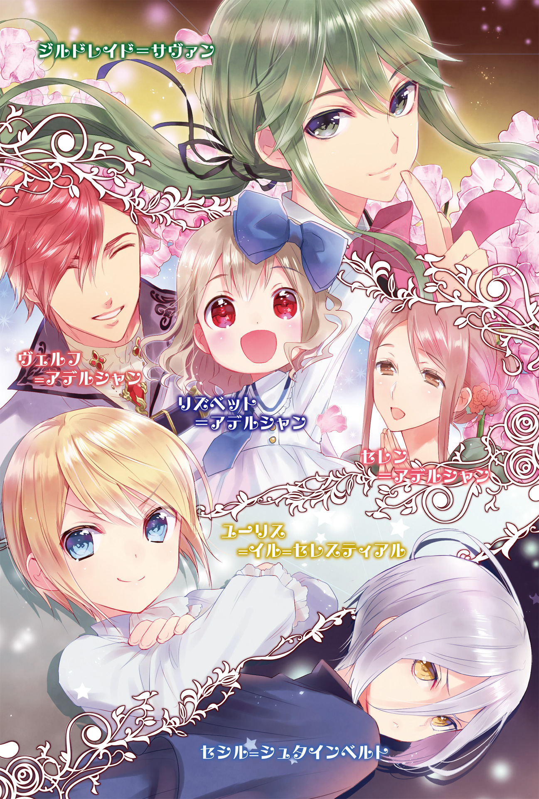

| 転生したので次こそは幸せな人生を掴んでみせましょう | |
| 佐伯さん | |

輪廻転生というものを御存知でしょうか。
英語で言うならばリインカーネーション、サンスクリット語で言うところのサンサーラ。色々端折って噛み砕いて言うならば、まあ生まれ変わりというものです。こちらの方が分かりやすいですね。
死んで新たな生を得る。そういった事があったとしたならば、どうしますか。

〇歳
「だぁ」
此処まで理解出来ない事は初めてです。
現状把握の為に放った第一声が、言葉に芯の通らない喃語。思うように声が出ない。
更には明らかに小さな手に、動かしにくいったらありゃしない体。というか殆ど動かないのですが。自発的には上手く動かせません。
こうなると、誰だっておかしい事に気付きます。
だってそうでしょう。今まで大人として人生を歩んで来た自分が、気付いたら赤ん坊に逆行していたら、自分の頭を疑います。言葉が自由に発せられたならばOh,Jesus!って嘆きたいくらいですよ。
それにしても、おかしい。
赤ん坊になったのもおかしいのですけれど、そもそもの話、私は死んだ筈なんですよね。
何てことのない、車に轢かれて事故死。信号無視した車に激突されて、あっという間に黄泉の世界に旅立った訳です。突然すぎて死ぬ程痛かった事くらいしか覚えてませんが。つまりあれですね、私は生まれ変わりというものを果たした、みたいです。
「あなた！ リズが笑ったわ！」
「本当か！」
自由に体が動くのならば、私の頬は盛大に引き攣っていた事でしょう。
私を抱き上げたのが、どうやら私の両親らしいのですが......二人が、どう考えても日本人ではなかったから。
一般的な美醜の観念から言えば美しい部類のカップルなのですが、その髪色や瞳の色からして色々突っ込みたいです。自分の父親が、大阪のおばちゃんもびっくりな赤色の髪をしているのですから。但し人工的なそれではなく、自然で綺麗とすら思える程の深みのある色合い。顔立ちとぴったり合っていて違和感はないです。
母親はと言いますと、色素の薄いアイボリーカラー。これはこれで似合っています。こちらもまず日本では見られないですが。
「リズ、父さんだぞ～」
父親らしき人が、紅の瞳を近付けて、これまたでれでれとした表情で頬擦りします。取り敢えず私はこの人の娘......娘ですよね？ 息子じゃないですよね？ 子供だという事は確定しました。
そしてどうやら私の名前はリズというそうです。日本人ではない事もほぼ確定しましたね。激しく嫌な予感はするものの、まだそれが現実に証拠となって現れていないから何とも言えませんが。
第二の父親は爛々と輝く眼差しで私を見詰めて来ます。恐らく、望まれて生まれたのでしょうね、私は。愛されるべく生まれてきたのが、私。
こんな中身が大人の子供を持って少し両親が可哀想な気もしますけどね。勿論内密にはしておきますけども。
「おっ、俺の事分かったのか？」
「だぁう」
「セレン、リズは俺の事父さんだって分かってくれたぞ！」
「うちの子は賢い子ね！」
親バカになるんでしょうね、この人達。現段階で親バカなのもわかりますし、溺愛されそうです。子供らしくしていれば。
その子供らしくを実行しようと表情を緩めてきゃっきゃと笑うと、これまた両親は幸せそうに笑うのです。
本当に、愛されて生まれてきた子供なのでしょう。
なら、私はその愛情に応えなければと思います。たとえ私という自我の精神年齢が高くっても、この人達が私を生んだという事実は変わりません。
彼等が私の事を大切にしてくれる分、私も彼等を慕う事でしょう。
「それにこの潜在魔力量......この子なら私達の後を継いで宮廷魔導師になるのも夢じゃないわ」
......うん、何か明らかに異常な単語が飛び出たような気もしますけど、知りません。私は可愛らしい赤ん坊なのです、そんなファンタジーチックな事なんか分かりません。知ーらない。
四歳
１
まず現状を説明しますと、私ことリズベット＝アデルシャンは四歳になりました。
両親の愛情をたっぷりと受けた私は、少なくとも両親の前では捻くれる事なく素直な子に育ちました。中身が可愛げないのは勘弁して下さい、いい大人が幼児返りするのは無理ですから。
親からはリズという愛称で呼ばれます。今や慣れてしまったものですが日本人名に慣れていた私には違和感バリバリでした。
幼児な分、色々体験したくない事まで体験しましたが、そこは長くなるので割愛します。一つだけ例を挙げるなら、恒例の父親とのお風呂イベントです。何があったのかは言わなくても察して下さい。
「リズ、こっちにおいで。一緒に本を読みましょう？」
「はい、母様」
私を産んだ母様......名前はセレンというそうです。
母様は柔らかな微笑みを湛えて私を手招きします。それに直ぐに反応して笑みを浮かべて駆け寄るのが日課になっていました。
私の母様は、身内贔屓になるかもしれませんがとても見目麗しいです。私が男だったら是非嫁にとアプローチかけるくらいには。
そんな母様が美しい笑みでおいでと言うのです。行かない訳にはいかないでしょう。
転ばないように気を付けながら母様の下に駆けていくと、近付いた私を慈愛の笑みで抱き締めてくれます。
......前世の私からすればとても羨ましい柔らかさが、胸部装甲として母親には備わっているのですよね。私も母様の血を引いているので胸部装甲が追加される事を祈ってます。
両親の血を良いように引けば、結構な外見に成長すると思うのですよ。今現在で割と片鱗は見えています、自分で言うのも複雑ですが。
絶世の美女には成り得ませんが、それなりな可愛さを持った女には成長しそうで助かっています。あくまで親の遺伝子のお陰なので自慢しようとは思いませんけど。
「今日は何の本を読むのですか？」
ふくよかな膨らみに顔を埋めて極上の感覚に目を細めつつ、他者からすればあどけない笑顔で首を傾げてみせます。
因みに......というか当たり前なのですが、四歳児では有り得ない程私は賢い子だともてはやされています。手のかからない子でありたいとは思ってはいます。でも構っては欲しいんですよ、それなりに。
「リズは何を読みたいかしら」
「父様の書斎にある本を読みたいです」
......こんな四歳児可愛げないですね、でも許して下さい。こんな明確な意思と明瞭な受け答えをする子供など世界に殆ど存在しないでしょう。幸いな事に両親は「うちの子賢い！」で済んでますが。
「書斎のは駄目よ、あれは難しいし......魔術に関してのだから」
ああそうだ、私が最初に懸念していた事は当たっていました。
やはり私が生まれ変わった先は、地球ではなかったみたいです。何かファンタジーな世界に生まれ落ちてしまったようで。
おまけに自分は貴族に生まれたようです。両親は城に仕える魔導師......あ、魔導師というのは魔術を極めた人の称号らしいです。つまりはエリート。
魔術の事については後々説明したいと思いますが、取り敢えず私は幸運の女神に微笑まれたらしく、非常に恵まれた環境に生まれたみたいですね。地球の神様が便宜を図ってくれたのでしょうか。
「私も魔術の事を勉強したいです」
両親曰く、「才能はある。潜在魔力量も並外れている」だそうな。これチートスペックじゃないんですかね......いやあったら助かりますけど。
そんな評価な私ですが、才能があっても使わなければ宝の持ち腐れになってしまいます。そして、才能は磨くものですし、才能という言葉には胡座をかきたくない。
才能があるならばより努力をするべきでしょう。将来才能があるから仕方ないという言葉で終わらされるのは不本意です。
......まあ、それに加えて今度の人生では勝ち組になりたいからですけどね。今度こそ幸せになってやりましょう。自らの力で掴み取ってやりますとも。
そんな訳で早々に魔術について特訓を開始したいのですが、母様は渋い顔をしていらっしゃいます。
母様は私に自分の後を継いで欲しいと思っているそうですが、私にはまだ魔術は早いとも思っているそうです。小さい体に魔術は負担がかかる、とか、事故を起こしたら大変、とか、まだまだ甘えて欲しい、だとか。気のせいか最後の理由が一番の理由に思えます。
「......母様は、私が魔術をするの、嫌......？」
うん、ですのでちょっとズルを。
お胸様から顔を離してうるうると瞳を揺らがせ、じいっと見詰めます。この時、上目遣いと服の裾をちょこんと引っ張る事を忘れてはなりません。多分あざと可愛い感じに見えるでしょう。
私は肉体が子供だと自覚してやっている分質が悪いですけど、普段駄々こねたり我が儘言ったりしないのでこれくらい許して欲しいものです。大人になったらしないので勘弁して下さい。
五年も一緒に居れば母様の性格も分かって来ます。両親......取り分け父様がですが、私に甘いのです。愛娘ですからね、溺愛されてる自覚あります。
しょぼんとしたように眉を下げる私に、母様は言葉を詰まらせています。ごめんなさい、困らせて。
でもこれは譲れません。時には危険を冒してでも為さねばならない事があるのです。......いやまあ書斎の本見るだけですけど。
「......駄目......？」
「......本を読むだけよ？ まだ魔術は使っちゃ駄目だからね？」
「はい！」
とうとう根負けしたらしい母様、私に念押しして了承してくれました。流石母様、大好きです。
お礼も兼ねて抱き着いて満面の笑みを浮かべると、母様は苦笑ながらも笑って私の頭を撫でてくれました。
取り敢えず、今は知識を磨く事にしましょう。知識は幾らあっても荷物にはなりませんから。知識を得る事で将来に役立ったり危機を回避できるならば、私は幾らでも勉強しますよ。勉強は嫌いじゃないですし。
......それから毎日のように入り浸って、メイドさんに本の虫だの頭がおかしいだの言われるようになりましたが、まあ良しとしましょう。
「成る程」
足しげく父様の書斎に通って、本に一通り目を通して分かった事があります。
父様結構凄い人でした。
普段は親バカ......失礼、子煩悩な印象しか見受けられないのですが、仕事になるととても優秀だそうで。城に仕える魔導師の中でも一、二を争う魔導師さんだそうです。
そりゃ城お抱えの魔導師だとは聞いていましたが、まさかそこまでだったとは。精々中間管理職程度かと。いや見くびっていた訳ではなく、まさか自分の親がそんな偉い立場に居たとは思わないでしょうに。
そんな事実を知って、いよいよ私の存在がチート臭くなって参りました。
だって私、美男美女の間から、それも飛び抜けて優秀な能力をもった男女から生まれた子供ですよ。潜在魔力量が尋常でなく多いとか顔立ち整ってるとか地味に運動神経良いとか、ついでに親は宮廷魔導師で侯爵とか。
これではまるであつらえたようなスペックではないですか。こんな優遇されても正直困ります。
潜在魔力量とかは非常に有り難いのですが、此処まで来ると自分の力で地位を確立する事が馬鹿らしくなります。私は自分で立場を築き上げたいのですよ。
勿論それにあたって利用出来る物は何でも使いたいですが、頼り過ぎるのも嫌です。親の力で偉くなったって嬉しくないですし、そんな立場はいつか崩れます。
まあ子供の頃からこんな事を考えても仕方ないですが、備えあれば憂いなしです。
取り敢えずは、今は自らの力を磨いていく事を優先しましょう。自分の力で全てを掴むために。
......世界を牛耳りたいとかじゃなくて、あくまで幸せな人生を歩んで行く為ですよ。お間違いなきよう。
「父様父様」
「ん？ どうしたんだい、リズ」
丁度書斎に寄ってくれた父様に駆け寄って笑顔を向けると、父様も笑顔で、寧ろ私よりも嬉々とした満面の笑みで受け止めて高い高いをしてくれます。いやもうでれっでれですね。
私を抱っこするようにした父様からは、仄かにお日様の匂いがします。
決して外仕事ではない筈なのに、柔らかい日差しの香りがするのです。干したてのお布団にダイブした時のような、何とも言えない幸福感。そんなふわふわした感覚が、父様から感じるのです。
母様からは甘い花の香り。優しくて癒される香りがします。
それを両親に言うとお互いの匂いを嗅ぎだしたからお笑い種ですよね。
ただ場所がベッドだったのと服装的に薄着だったので、色々火が点いたのか香りを確認するだけじゃ済まなくなったみたいですが。まだまだ両親も若いですからね、そのうち弟妹が出来そうで怖いです。
勿論分別ありますし、他人の情事覗いて興奮したり邪魔をしたりはするつもりはないので、ひっそり退室はしておきました。あの空気読める子供ってのも中々に居ないと自覚してます。
......話がずれましたね。
私は父様に抱っこされたまま、視線を父様の赤い瞳に合わせます。
私にも引き継がれた赤い瞳は。目元をほころばせ、頬を緩ませていました。私を愛しそうに撫でる父様。
......あまり凄そうに見えないのは、家の中だからでしょうね。これでも、私達を養ってくれて無償の愛を注いでくれる父様は、尊敬してますし大好きですよ。
「ねえ父様」
「なんだいリズ」
「私に魔術を教えて下さい」
プチり。
私の言葉に力加減を失敗したのか、髪を梳く指が勢い余って、母様譲りの色素の薄い髪が二、三本引っこ抜かれました。......痛いのですが。
「誰かに吹き込まれたのか？」
「いいえ、私の意思でそれを望みました」
首を振って真っ直ぐに父様を見詰めると、父様も前の母様と同じような複雑そうな顔をします。
父様も父様で私の事を心配していらっしゃるのでしょう。多分教えたいには教えたい、けれど危険を伴うから迷っている......そんな所でしょうね。
まあそういう反応を予想していましたから、打つ手がないという訳でもないのですが。
「私も父様みたいな立派な魔導師になりたいんです」
父様の弱点その一。
父様はおだてに弱い（母様と私に限る）。
「そ、そうか......？」
「はい。父様はとても立派な魔導師様だと伺っております。私も父様のように、皆さんから尊敬されるような魔導師になりたいのです」
「そんな事を言ってくれるなんて、俺はとても嬉しいぞ......！ でもなリズ、まだリズの年齢では...」
「......父様は、駄目と仰いますか？」
父様の弱点その二。
父様は涙に弱い（母様と私に限る）。
若干あざといと思いながらも、瞳を潤ませて揺れる瞳を向けます。子供のどんぐりまなこがみるみるうちに悲しそうに湿っていくのを見た父様は、見るからに慌て始めます。
......子供は涙腺緩みやすくて良かった、と非常に可愛げのない事を思っているのは内緒です、てへぺろ。ごめんなさい調子に乗りました。
「ああいやそうじゃなくてな、もうちょっと大きくなってからでも...」
「私も早く父様みたいになって、父様のお手伝いがしたいんです。駄目ですか......？」
「......う」
「なるべく迷惑かけたり途中で投げ出したりしません。だから、お願いします」
「まあいつかはこうなるとは思ってたんだが......早過ぎなんだよな。そりゃ俺も教えてあげたいとは思っているんだが......」
「本当に教えてくれますか？」
わざと前後の文脈を無視して、教えてあげたいの言葉だけに反応します。
期待を込めて笑顔を浮かべると、とうとう父様は観念したのか達観したような眼差しになっていました。
父様の弱点その三。
父様は不意打ちの笑顔にとても弱い（母様と私に限る）。
詰まる所、父様は私と母様にべた惚れで、私達を愛してくれているという事です。多少のお願いなら割と叶えてくれるんですよ。
今回のは我が儘というよりは、何もしなくともいずれは来るであろう未来を早めに持ってきただけです。フライングスタートしようとしているだけなんですよ。
子供特有のきらきらした瞳で期待を露にする私に、父様は小さく、いや結構大きく溜め息。
「......分かった、但し条件がある。俺だけでは時間の都合的に教えられないから、家庭教師を雇うのでその者に師事する事。途中で投げ出さない事。あと最初に魔力適性を検査する為に城の魔導院まで一緒に行く事。これを守れないなら...」
「全部守ります。ありがとうございます父様！」
全部聞かない内に全力で頷いて満面の笑みを浮かべる私に、父様は苦笑。これでもうやっぱ駄目だとか言えないでしょう。私の作戦勝ちです。
父様大好き、と頬にキスしたらとても機嫌も良くなったので、双方得をした取引になりました。
父様も結局は私に魔術を教える気はあったんですから、これくらいは許して下さいね。
「リズ、着いたぞ」
「んにゅ......父様......？」
優しい声で囁かれ、背中を軽く叩かれた私は、しょぼしょぼする目を擦ります。
いつの間にか寝ていたようです。目的地が子供には遠いからと抱っこして貰って移動していたのですが、お日様の匂いと気持ちの良い体温、眠りを誘う鼓動に、うっかり寝てしまったらしいです。
くぁ、と中途半端な睡眠に欠伸を堪えて瞼に力を入れると、少し目は覚めて来ました。
......おお。
若干まだ眠さの残る瞳に映ったのは、とても大きな城門、その背後にそびえ立つのは想像していたよりもずっと大きくファンタジーチックなお城です。
え、本当に父様此処で働いてるんですか。改めて父様の偉大さを思い知りました。
「父様父様、父様此処で働いてるんですよね」
「そうだぞ」
「父様凄い......！」
掛け値なしの称賛に、父様は照れたのか少し頬を赤らめて、嬉しそうにありがとうな、と頭を撫でてくれます。
父様は私を抱っこしたまま城門に近付き、門番らしき人に歩み寄っていきます。流石は城、ちゃんと門番さんが居るのですね。まあ居ないと不法侵入し放題でしょうが。
「おやヴェルフ様、その子は？」
「私の娘だ。ほらリズ、挨拶は？」
「父様その前に下ろして下さい」
「ああ、そうだったな」
ヴェルフというのは父様の名前です。
父様も公私混同はしないらしく......いやまあ私連れて来た時点でアウトでしょうけど、一人称は私になっていました。
私はというと、父様が本当に此処で働いているという事を実感して感動をしています。凄いです父様。よくこんな人の欲望が裏で沢山蠢いていそうな所で働いていられますね。......あ、褒めてます。父様優しいから騙されたり都合の良いように扱われてないか心配なだけですよ。
父様特製の揺りかごから下ろして貰った私は、服の乱れを直してから門番さん二人組に向き直ります。
「お初にお目にかかります、侯爵ヴェルフ＝アデルシャンの娘、リズベット＝アデルシャンと申します。父がお世話になっております」
ぺこ、とそつなく挨拶して頭を下げると、門番さん達は微妙に固まってました。そりゃこんな年端もいかぬ子供が敬語で挨拶するとか思わないでしょうね。私もこんな子供嫌です。
「ええっとヴェルフ様、失礼ですがご息女はお幾つで......？」
「今年で四歳になったな」
「正確には四歳と七ヶ月です」
子供の半年は結構重要なので訂正をしつつ、にっこり微笑んで子供らしさもアピール。
因みにどうでも良い話ではありますが、余所行き用の笑顔です。子供の可愛らしさ全面に押し出したスマイル。父様母様に向けるのとはちょっと質が違います。
門番さん達は私の笑顔で硬直から解けたようで、私の顔と父様の顔を交互に見ています。
「よく似ていらっしゃいますね。セレン様の面影もある」
「はは、そうだろう？ 私とセレンの子だからな。どうだ可愛いだろう。それに可愛いだけではないぞ、私の子はだな...」
「父様、嬉しいですが用事を済ませてからにして下さい」
このままだと子供自慢に発展しそうだったので早々に切り上げさせると、これまた門番さん達は私を驚きの表情で見てきます。
いや、だって。父様の自慢聞いてると褒められている本人としては物凄く恥ずかしいんですよ。穴に入りたくなるんですよ。如何に自分の子供が可愛いかとか凄いかをメイドや執事に語るから、私は本当に居心地悪いやら羞恥で死にたくなるやらで困るんです。
「ああそうだったな。......この子も城に入れても良いか？ 魔力の検査をしに来たんだ」
「そ、そうですか、ヴェルフ様のご息女なら宜しいとか思われます」
「どうぞお通り下さい」
「助かる」
ほら若干門番さん達引いてましたからね。私のせいでもあるでしょうが。
門番さん達の許可を貰った父様は、私の手を引いて城門を潜って行きます。職場なので実に堂々とした歩き方ですね、私は流石にそこまで堂々とできないので父様の後を控え目について行きます。
ああそうだ、と門番さんの横を通り過ぎる時に、またにっこり笑って手を振っておきました。また城に入る事があったら便宜を図って貰える可能性を上げる為にと、単純にさようならの意味で。
門番さん達は私の笑顔にびっくりした後、父様に見えないように笑って手を振り返してくれました。お仕事中なので内密にという事でしょうか。帰りがけにもう一回手を振っておきましょう。
父様に連れられて城の中を歩く私ですが、道行く人から物珍しそうに見られます。そりゃ結構凄い人っぽい父様が子供を連れて歩いていますからね。
時折父様に話し掛けて私の事を話題に出す人が居ましたので、簡単な自己紹介をして頭を下げておきました。初対面の印象、大事。
「ヴェルフ様！」
暫く歩いていると、前方から息を切らせた、何だかお偉いさんっぽい人が駆け寄って来ました。この人に様付けさせるとか父様どれだけ凄いんでしょうか。
「どうしたナディア」
「ユーリス様が行方不明になられました！」
「......ユーリス様はまた脱走か......」
ナディアと呼ばれた方の深刻そうな顔に反して、父様は額を押さえてやれやれといった顔。
よく分かりませんけど、どうやらユーリスという方は頻繁に抜け出してナディアさんを困らせているようです。父様の反応からして間違いないでしょう。
そして、〝ユーリス様〟は私の勝手な推測ですが、王族の方ではないでしょうか。何か立場が偉そうなナディアさんに様を付けさせるくらいですから。それに父様にも。少なくとも父様より立場が上にあるのでしょう。
となると限られてきますね。父様結構重要なポストに就いていらっしゃるようですし、その父様に敬称を付けさせるのです。そして脱走というからにはつまり拘束されている、この場合は物理的な拘束ではなく立場的な拘束の事を指しているのでしょう。
となると、答えは自ずと出て来ます。恐らくは......まあ妥当に考えて王家の人間とかだったり。
「第一王子という立場で在られながら......」
想像以上に大物来ました。まさか王様の子だったとは。しかも脱走の常習犯の模様。
......まあ、分からなくもないのですけれども。
王族の、それも国王陛下の子となれば期待や重圧も半端ないでしょう。次の王に相応しい知識や教養、振る舞いを求められると思います。
それに嫌気が差して逃げ出してしまうのも、仕方ない事だとは思います。逃げて良いかは別として。
「ヴェルフ様、ユーリス様の捜索に参加して貰えないでしょうか。王位継承者を一人にする訳には」
「悪いが断る」
「......父様」
「そんな顔をしないでくれリズ。ユーリス様の場所は把握している。大方いつもの場所に居るのだろう」
溜め息混じりに呟かれた言葉に、ぱちりと瞬き。......分かっているなら、何故連れ戻しにいかないのでしょうか。
私の顔を見て言いたい事が伝わったらしく、端整な顔に苦笑いを浮かべています。
「......本来ならそっとしておいてやりたいんだよ。殿下も勉学や権力争いに疲れているだろうから」
「......大変ですね、王子は」
「リズも侯爵家の一員だからな、そのうち社交界デビューするんだぞ」
「心得ております」
私もそれくらいは理解していますよ。私の後に子供が生まれなければ、跡取りとして家を継ぐ事になるとも理解しています。まあその心配は、今の両親のいちゃつきっぷりを見ていたら杞憂に終わりそうではありますが。
大人の世界は欲にまみれている。大人であった私でも凄く面倒臭いと思っているのですから、恐らく然程年の変わらないであろう王子様には堪えるでしょう。
逃げたいと思うのも当然だとは思いますよ。
「まあ私としては、殿下の気持ちも分かります。ですが、それなら殿下には尚更教養や知識を身に付けさせるべきだと思いますよ。今身に付けておいたものが将来殿下の身を守る鎧になるのですから」
「......リズ、私はリズが偶に分からなくなるよ。普通割り切れないだろう」
「殿下の先行きを案じているだけですよ。今を蔑ろにすれば後々困るのは殿下です」
子供の台詞ではないでしょうが、父様は最早慣れているのであまり突っ込みません。逆にナディアさんがあんぐりと口を開けてこちらを見下ろして来ます。
......うん、明らかに大人び過ぎた子供ですね。外ではもう少し子供らしく振る舞った方が良いかもしれません。
若干フリーズしているナディアさんに父様は苦笑。それから、じっとこちらを見てきます。
あ、嫌な予感。
「リズ。そこまで言うなら殿下を説得して来なさい。案内するから」
「無理でしょう。見知らぬ子供ですよ私は」
「大丈夫だ、リズの可愛さは保証する」
保証する所違う。
「......じゃあこうしよう。殿下を説得出来たら魔術を教える事にする」
「ずるいですそれは」
「はは。大丈夫だ、リズなら説得出来る」
無茶ぶりしないで下さい。
文句を言っても父様は聞いてくれそうにありません。普段は私に甘い癖にこういう時だけ......！
取り敢えず余計なフラグ建設しない事は祈っておきましょう。
さてさて、殿下説得に駆り出された私ことリズベット＝アデルシャンでございますが。
......どう説得にもって行けば良いのでしょうか。
いやだって、ぶっちゃけ見ず知らずのお子さんですよ。幾ら王家の長子とは言え、私には関わりなかった人物です。関わるつもりもなかった人物です。
殿下という事は将来王になり民を背負うことになる方。そんな方に関わるのは畏れ多いです。......まあ本音としては機嫌損ねて没落貴族とかになったらどうしよう、とかいう心配が先に来たのですけど。
そんな私の心境を知らないでいる父様は、「お前なら出来る」とかなり他人事な応援をして、私を殿下が居る書庫に無理矢理押し込みました。待って下さい心の準備が。
私の押し込まれた書庫は、薄暗くひんやりとしていて、埃の臭いがしました。
あまり衛生的ではない気もしますが、案外こういう古臭い香りは嫌いではありません。鼻を擽るのは紙とインクの香り。というか物理的に埃が鼻を擽って来ました。
「へくちっ」
「......誰だ！」
......あ、殿下発見。
私は殿下を見た事がなかったのですが、本棚の角から顔を覗かせる少年がそうなのだと直ぐに分かりました。
年齢は私よりも二、三程上でしょうか。
ランタンと天井付近の僅かな陽光だけでも分かる、さらさらとした質の良い金髪。真っ白な肌は陶器のようで、滑らかな肌理は女でも中々に見ない程。
前髪から覗く碧眼は、警戒心を露に私を映していました。......本当に厄介な事を頼んでくれましたね、父様。
「名乗った方が宜しいでしょうか。リズベットです」
以後お見知り置きを、と続けなかったのは、極力王族には関わりたくないからです。権力争いに巻き込まれそうですし。
スカートを摘まんでちょこんと一礼して見せると、殿下は疑るような眼差し。まあいきなり現れたのが子供ですからね。
恐らく、殿下の頭の中では大人に仕向けられた子供だという判断になっているでしょう。
「ご安心を。無理矢理連れ戻しに来た訳ではありませんので」
「......そんなの信用出来ない」
「でしょうね。でも私が頑張った所で殿下を連れ戻せる程力はありませんよ」
何て言ったって四歳の小娘ですから。親譲りの資質があろうとも、肉体の成長が伴っていませんのでどうしようもないのです。
そもそも殿下に乱暴な真似をしたら私が死罪を言い渡されそうです。お偉いさんの機嫌は極力損ねたくはありませんから。
何もするつもりはないという意思を込めて、両手を軽く持ち上げて降参のポーズ。物理的手段に持ち込むつもりは更々ありません。というか子供にそんな真似は不可能です。
じゃあどうやって説得するのかというと、口八丁ですね。というかこの場合は挑発しますけど。不敬罪で処罰食らわない事を祈っておきます。いざとなれば王様に子供らしく懇願しますとも。
「......で、殿下はいつまで経ってもそこに留まるおつもりで？」
確認を込めてゆっくりと問い掛けながら歩み寄ると、敵愾心剥き出しで睨んで来ます。
まあ殿下からすれば私は悪の手先みたいなものですからねえ。でもこんないとけない幼女に向かって失礼ですよね。自分で可愛げがないと理解しておりますが。
「皆様心配していましたよ」
「違う！ あいつらは私が王の子供だからそういう振りをしているんだ！ どうせ媚を売ってあわよくば私を利用しようとしているだけだ！」
眉を吊り上げて声を張る殿下。成る程、子供にしては大人びたというか可愛げもない発想ですね。信じる気持ちがないというか。
まあ実際にはそれも含まれているでしょうし、強ち間違いではありません。でも全部悪意だと思って受け止めていては身が持たないかと思いますよ。
「まあそうかもしれないですね。で？」
「で？ って、」
「それを言い訳にしているだけでしょう？ 殿下は責任から逃げているだけですよ。務めを放棄して」
こう言っちゃ悪いですけど、利用されるなんて当たり前でしょう。私も好きではないしなるべく避けたいとは思っていますが、する時はします。時の権力者に擦り寄って甘い汁を啜りたいとまでは思いませんが。
王族に生まれたならば、尚更人の悪意に触れる事も分かります。でもそれを理由に逃げたって、物事は解決しません。寧ろ悪化します。
「っ、お前に何が分かるというのだ！」
「ええ分かりませんとも。逃げて逃げて、目の前の現実から目を背けているだけの人の事など」
「......っ！」
どん、と突き飛ばされたのだと理解したのは、勢いよく尻餅を着いた時でした。勢い余って背中を強かに打ち付けました、殿下ちょっとそれはないでしょう。
そのまま殿下は私の上にのしかかって、ぶるぶると怒りに震える手で私の胸倉を掴んで来ます。暴力いくない。
殿下の導火線に火を点けてしまったらしいです。めっちゃキレてる。
もうこの際はっきり言ってあげた方が身の為でしょう。大概逆上しますから。あんまり正論吐きたくないんですけどね。というかしてますから現在進行形で。
まあ殴られたら殴られたで、母様に治して貰います。死んでなければ。......洒落になりませんね。
「お前にっ、私の何が分かる......！」
「好き好んで生まれた訳でないのは分かりますね。ですが、王族として生まれたならばその任は果たすべきですし、それは何よりあなた自身の為になります」
やさぐれる気持ちは分からなくもないのですよ。でも、拗ねて逃げて解決する訳ではない。子供の短絡的思考では、結局現状は何も変わらないのです。
「私を言いくるめようなどと！」
「じゃあ勝手に否定しておいて下さいませ。これだけは言わせてもらいますけど、あなたはまだ子供です。だからこのような我が儘が許される」
まだ殿下は幼く、全てを背負わせるには器が出来ていない。逃げる事だって想定済みだから、周りも少し騒ぐだけで済んでいるのです。
......でも、それは今だから許される事なんですよ。
「ですが、あなたもいずれは大人になります。その時に逃げる事は許されません。その時あなたは、国という大きな物を背負った統治者になっているのですから」
「私は......っ、」
「今あなたが何もしないのもそれは一つの選択肢です。ただ、それはあなたの鎧を一つ、いえ沢山失う事に繋がるでしょう」
「......鎧......？」
少しだけ落ち着いて来たらしく、私の言葉に反応してくれます。
「あなたはまだ庇護して貰っているから分からないかもしれませんね。今全部から逃げたならば、あなたは自らを守る術を失う事になります。あなたに教えられている事は何ですか？ 魔術や剣術は自らの身を守る為に、学問は自国を守る為に、教養は諸外国から軽んじられない為に。全てはあなたの先行きを案じて、あなたの為になされているのだとお分かりで？」
そこら辺の子供にこんな事言ったって理解してくれる筈がありません。
ですが、殿下はとても賢く大人びた考え方をしている。私の言う事の真意を理解出来る筈です。
「口が過ぎた事は謝罪します。ですが考えてみて下さい。あなたの為を思って皆様厳しくなさっているのです」
そこまで言い切ると、殿下は目を瞠って此方を見下ろして来ます。胸倉を掴んだ小さな掌の力は緩んでいました。
......あと、一押し。
「あなたの歩む道には、あなたを利用しようとする者も現れるでしょう。それは否定しません。ですが、あなたが身を守る術を身に付けて、悪意と善意を判断出来るように、悪意を切り捨てられるように、ゆくゆくは逆に利用出来るようになって欲しいと思っています」
私はそう告げて、ゆっくりとのし掛かる殿下に手を伸ばします。首に手を回して、ぺったんこ極まりない胸に誘ってやんわり抱き締めてあげました。
物理的に包容力ないのは勘弁して下さい、まだ私には将来があります。
「だから、逃げるのは今回で終わりにしましょう？ あなたは強くなって、自らの身を守れるようにならないといけないのですから」
「......」
「今だけなら、好きなだけ甘えてくれても良いですから。......ね？」
四歳と半年の子供が何を言うかって話ですけども、殿下は深く追及せずにそのまま私のまな板に額をくっつけています。胸倉を掴んでいた手は、求めるように背中に回されました。
軽く身を起こした私は、よしよしと頭を撫で背中を擦ってあやしてあげます。うん、四歳のする事じゃない。
「......硬いな。母上とは大違いだ」
「殿下、私はまだ子供なので柔らかさを求めないで下さい」
ちょっとどついてやろうかと思いましたが、絶対不敬罪に相当するので止めておきましょう。殿下に手を挙げるとか私殺されますね。こんな口利いていた時点でアウトだとは思いますが。
暫く抱き締めていると、殿下は緩慢な動作で顔を上げます。少し泣いていたのか瞳が微妙に潤んでいたように見えましたが、そこは追及するべきではないでしょう。
殿下は私の顔をまじまじと見てきたので、首を傾げておきます。というか至近距離過ぎて殿下の整い具合が半端でない事が分かります。
今まで睨んで来ていたから分からなかったですけど、とても可愛らしい顔立ちなのだとよく分かります。整っているとは思っていましたが、此処までとは。恐るべき王族遺伝子。将来はかなりの美形になるのでしょうね。
「どうかしましたか？」
「......お前何歳だ」
「四歳と七ヶ月ですよ」
「......有り得ない」
呆然とした呟きに、それは自分でも思うのですけど、と苦笑。だって中身は成人済みの女ですし。
そんな事言ったら殿下だって年齢の割に大人び過ぎてると思うのですがね。私の言いたい事理解してくれましたし。
殿下は気を取り直したのか立ち上がって服に付いていた埃をさっと払うと、何を思ったか私に手を差し伸べます。
予想外の行動に目をぱちくりと瞬かせると、少しだけ困ったように眉を下げてから「女性は繊細だから気遣うように教えられている」と、いっちょまえに紳士の振る舞いをしてくれました。
さっき突き飛ばした事に対する謝罪はなしですか。まあ怪我してないから良いですけども。
......あと、正直大半の女子が男子より逞しい気がしますが、そこは内緒にしておきましょう。
「先程は、すまなかった」
あ、謝ってくれました。
「いえ、私も怒らせるように煽ってしまいましたので。誠に申し訳ありませんでした。先程のご無礼、御容赦頂きたく存じます」
「そんなに堅苦しくなくて良い。さっき喋っていた話し方で良い」
どうやら不敬罪で咎められる事はなさそうで何よりです。そこについては心底安心しました。もう凄い口利いちゃいましたからね。
こっそり安堵の吐息を漏らしつつ、私は殿下の手を握ったままだと気付いたのでそっと離そうとしました。
......離すつもりだったんですよ？
「私の許可なく離すな」
あれ、凄く横暴。突き飛ばしたと思ったら離すなとか。いやまあ何か懐かれたのは分かりましたけどね。
ふむ、何か変なフラグを立てた気もしなくはないですが、取り敢えず任務は完了しました。父様に報告しなくてはなりませんね。
どちらにせよ殿下を連れて行かないと話にならないので、手を繋いでいても構わないのですけど......今度から抑止力とか餌扱いされそうで怖いです。
結局殿下は手を離してくれなくて、しっかり手を繋いだまま......というか握られている状況です。仮にも国王の息子ですし無下に扱える訳もなく、そのまま仲良くお手手を繋いでいるのです。
ちょっと困ったように殿下を見上げると、殿下は離さないぞとぎゅーっと指を絡めて来ます。カップル繋ぎというやつですね。いやもう父様に会うので、出来れば離してくれたら有難いのですけど。
まあ父様の事なので微笑ましそうに見てくれるとは思いますが、変な勘違いされるのは嫌です。面倒になりそうですし。
仕方なく繋いだままご機嫌取りをしつつ、書庫の出入り口から出ると、父様が少し離れた所で私達を待ち構えて居ました。
父様は私と殿下が出て来た事に目を輝かせていましたが、私達が手を繋いでいる事に気付いてフリーズしてしまいました。殿下は殿下で父様の姿を見た瞬間眉を寄せます。
「......で、殿下？」
「何故ヴェルフが居るのだ」
「殿下こそ何故私の娘と手を繋いでいるのですか」
娘、という言葉に目を瞬かせたのは殿下。本当か、と言いたげに此方を見てきたので、私は苦笑しながらも頷いてみせます。
殿下は、私が城に出入り出来る子供で、尚且つ珍しい赤の瞳を持っている子供など中々に居ないと分からなかったのでしょうか。貴族の中で赤い目をした一族など私達の家系しか居ないのに。
「申し遅れました、私はリズベット＝アデルシャン。ヴェルフ＝アデルシャンの実子です」
生前バイトで培った営業スマイルを浮かべると、殿下は目を剥いて、それから私と父様を見比べては複雑そうにしていました。
私はどちらかと言えば母様似ですが、しっかり父様の特徴も継いでいます。この赤色の瞳は顕著な例ですね。血みたいな赤色で結構禍々しいとは思いつつも、ルビーの最高品質であるピジョンブラッドの色そっくりだからまあ良いだろうと気に入ってます。
「今度から脱走は駄目ですからね。ほら父様も」
「あ、ああ。殿下、お願いですから訓練から逃亡しないようにして下さい」
「......仕方ない。こいつに諭されたからな」
あ、分かってくれたんですね、良かった。
......ところで父様は何でそんなに驚いているんでしょうか。
「二言はないですよね？」
「っああ、訓練も勉強も耐えると言っている！」
眦を吊り上げた殿下が父様を睨むと、父様は頷いたのち、何だかにやにやした笑みを浮かべだしました。そうですね、ちょっと粘っこいというかからかうような笑みを。
美形だからそれも様にはなっていますが、身内としては殿下をからかわないで欲しいと言うか。とばっちりがこっちに来そうな予感がするのです。
「リズ、リズは俺みたいな宮廷魔導師になりたいんだよな？」
「え？ あ、はい、そりゃあ。その為に此処に来ましたし」
「俺より強くないと旦那は嫌だよな？」
「え？ え？ 何か脱線してませんか？」
「良いから。な、そうだよな？」
「や、別に拘らないですけど......そんな将来の事分かりませんし。それに、私は旦那が弱くても私が守ってあげればそれで良い気が」
というか四歳児に結婚話しても仕方ないでしょうに。それに、基本は私はアデルシャン家を継ぐと想定しているので、政略結婚になるでしょうし......。
父様は父様が認めた相手としか結婚を認めてくれそうにありませんし（何たって溺愛されているので）、私も好きな相手が出来るとは今の所思えません。ならお見合いとかの方がよっぽど現実味がありそうかと。
父様は私の返答に一瞬固まりましたが、それからくつくつと喉を鳴らして殿下に意味ありげな視線を送ります。ちょ、父様。何で挑発したんですか今。
「だ、そうですよ殿下」
「わ、私には関係ないだろう」
「そうですね、私の娘は優しくて冷静で凛々しい男性が好みですし。間違っても訓練から逃げ出すような殿方は好みではないでしょう」
「～っ、だから私は関係ないと言っている！ もう良い、私は訓練に戻るぞ！」
まんまと父様の挑発に乗った殿下、私の手を若干乱暴に振り解いて何処かに走って行きました。顔が真っ赤だったので、父様にからかわれた事が余程恥ずかしかったのでしょう。
私は父様に咎めるような視線を送ると、父様は愉快そうに笑っています。もう、他人事だと思って。
「父様、勘弁して下さいよ本当に。もし殿下が、うっかり何かの間違いで私なんかに熱を上げたらどうするつもりなんですか」
「もう遅い気もするが、俺は促しただけだし。中で何があったんだよリズ」
「何がって......叱咤激励しただけですけど」
「それで殿下がああなるんだから、娘の将来が怖いぞ私は」
「......殿下は何か誤解をされてますよ。殿下は偶々私が励ましてあげたから、私がそういう対象に見えてしまっただけです。そもそも子供の恋心など直ぐに消えてしまうでしょう？」
私も馬鹿ではないので、殿下が私の事を気に入ったのは分かります。でも、それは吊り橋効果みたいなものです。不安や悩みがあって、そこに私が投入されて偶々解決してしまった。それで解決した私に惹かれていると勘違いしたのでしょう。
ですので、大して私の事を知らない殿下が、真に私の事を好きになるのはまず有り得ないと思いますよ。しかもこんな可愛げない女ですから。
そもそも、殿下と会う機会など殆どないですから。王位継承者に気軽に会える訳でもないですし、わざわざ会おうとも思いません。住む世界が違いますし、厄介事に関わりたくはありません。先程限りの出会いですよ。
肩を竦める私に、父様は若干引き攣った顔をしますけど、私はどうしようもありません。
確かに殿下と知り合いになればリターンも大きい、でもそれ以上にリスクが怖いです。そんなリスキーな事したいとは思いませんし、殿下の事を利用とかそういう考えはなるべく避けたいです。
「それより父様、約束は守って頂けますよね？」
「あ、ああ。ちゃんと殿下説得したし、な」
「ありがとうございます！」
父様のせいで変なフラグを立てたらしいですが、私の本来の目的は魔力の測定と適性検査です。あくまで殿下のはお仕事ですよ、別に殿下を嫌いとかではなくて本来の目的の前では些事でしかないというか。
「......殿下が可哀想になって来たぞ」
漸く本懐を遂げられる、と素の笑みを浮かべた私に、父様は盛大に溜め息をついて額を押さえていました。
「父様父様どうしましょう、本が沢山あります！ 家とは比べ物にならない程沢山あります！ どうしましょう、読んじゃ駄目ですか、これ読んじゃ駄目ですか！」
「リズ、落ち着きなさい。読んでも良いから先に用件済ませようか」
父様に連れて来られたのは、城内にある魔導院。城の中に存在していると言うよりは、城から出た建物にある感じです。魔導院は外部局みたいな扱いのようです。それでも王直属の組織みたいな感じですね。
そして何より大切なのが、重要なのが、魔導院とあって魔術に関する本が壁一面にある事。さっき入った書庫の本は魔術のものは大してなくて、主に世界についてとか歴史とかそんな感じのばかりで、然程食指が動かなかったというか。普通の本も勿論好きなんですけど、やっぱり焦がれた魔術の本は格別です。
父様が入って直ぐに職員の人に頼んでこっちの部屋に案内された訳ですが......うん、此処は天国です。
だって見て下さいよ、壁を埋め尽くすように魔術の本が並んでいるのです。まだ私にも理解出来そうにないような本まで沢山。家で読める範囲のは全て読んでしまいましたし、目の前の光景はかなり興奮するものなのですよ。
父様は私の目が光っているのを見て苦笑しています。父様が一番私がこういう本が好きなのを知っていますからね。
「......ふああ、すみません、つい」
「まあこうなるとは思っていた。さ、リズ。こっちの奥においで」
父様に手を引かれていくと、奥に扉がありました。見掛けからして頑丈そうな扉です。まるで中に何か大切なものが入っているような、そんな感じがしました。
「父様、これは......？」
「あの扉の向こうには、魔力測定の石がある。そこに全力で魔力を込めれば良い。あ、結構貴重な物だから壊さないように」
まあトンカチで殴ったり魔導院の一番上から落としても壊れないけどな、と笑って肩を叩いて来る父様。止めて下さい父様、そんな前置きとかフラグですよね。私がぶっ壊すフラグですよね。
嫌な予感がひしひしとしたので軽く頬を痙攣させる私に、父様は笑ったまま背中を押してきました。いや壊れても知りませんからね、本当に。
「......本当に壊れたりしませんよね」
「大丈夫だよ、そもそも魔力を蓄積して輝く物だから。貴重って言っても採掘出来ない訳じゃないから」
本当に知りませんよ、私。
「......これに魔力込めるんですか？」
部屋の中に誘われて、大人の拳サイズの塊を渡された私。オニキスのような艶のある漆黒の石で、私の両手にも余る程です。しかも重いから結構辛い。綺麗には綺麗ですが、ただの石にしか見えない訳で。
どうやら台座に置いてあったらしく、小部屋の中央には安置場所らしき台がありました。......高価っぽい、見るからに高価っぽい。
「そう。そこの台座の前......陣の中心に立って、それに魔力を込めれば良い」
父様は笑顔のまま勝手に言ってくれますが、私としては非常に躊躇われるというか。何かやらかしそうな肉体なんですよ。何て言ったって父様と母様の子ですから。この人達、自分の才能自覚してるんでしょうか。
父様を見ると笑顔で期待しているようです。多分俺の子は凄いんだと期待してますねこれは。......期待に応えないといけないですよね、はい。
来る時と比べて若干気は進まないものの、望まれるがままに手にした石に力を込めていきます。
名称が分からないので試金石と呼びますが、試金石にゆっくりと力を注ぎます。両親の子なので才能はある筈。多分。
すぅっと息を吸い込み、吐き出す息とシンクロさせるように、掌と試金石の接触面に魔力を流し込む。
血流の流れに沿わせて魔力を運び、試金石に吸わせていく感じでしょうか。血は魔力の源とも呼ばれています。命の源と言った方が正しいですかね。
血には魔力が宿ります。それがとめどなく流れていて、その魔力を外部に出せば魔術という形で表れます。......まあ本の受け売りなのですけど。その魔力にも発生器官があって......脳味噌の何処からしいです。その器官が空気中の魔素と呼ばれる魔力の元を、無意識に魔力に変換、体内、延いては血液に蓄積しているらしいです。コンデンサとトランスでしたっけ？ あんな役割を果たしているそうです。
私が素質が高いと言うのは、他者から見たらそのコンデンサとトランス、あとバッテリーの許容量が桁外れらしいです。変換するにも自身の生み出す魔力が必要なそうなので。
大気中の魔素を大量処理出来て、それを大量に溜め込む事が出来る。そして一度に扱う量が並外れている。魔術の並列処理も可能なくらいには、素養があるらしいですよ。あくまで父様の判断では、という前置きが要りますけどね。
親バカなので話半分で聞いています。聞く限りチートスペックで自分でも呆れそうです。何で父様は、そんな事判断出来たのでしょうか。
「リズ！ 手、手！」
「......手？」
ぼんやり思考に耽りながらそのまま注いでいると、遠くで切羽詰まったような父様の声。
此処で現実に戻った私が自分の掌を見ると、......どうしましょう、溶けてる。私の手がじゃなくて石が。
「父様、これって壊した内に入りますか？」
「何でそこで冷静なんだリズ！ 魔力注ぐのを停止しろ！」
それくらい言われなくても分かっていますよ、と魔力を流すのを止めて自分の掌に溜まった液体を凝視。
ぎりぎりで溢れてはいないらしいですが、あの固かった試金石の面影は何処にも見当たりません。鉱物だった塊は流動性のある液体に。漆黒だった液体は、......たとえるならオパールのような、乳白色で、時折七色の輝きを煌めかせる液体に変貌を遂げていました。いやこんな特別能力は流石に欲しくなかったです。
「父様、入れ物」
「い、入れ物!? ちょっと待ってなさい、貰って来るから！」
流石に零すのも悪いですよね、と手に並々注がれた状態の試金石を見て眉を下げると、父様は慌てて出て行ってしまいました。この事態は父様も想像していなかったでしょう。嫌な予感がしていた私にも想定外です。
父様が帰って来るまでじっとしておかないとならない私は、手の内にある乳白色の液体に視線を注ぎます。
......何故石が溶けたのでしょうか。鉱物が溶けるには何百度とか何千度ないと無理だったような気がします、でも私の掌は全く熱くない。
とろとろと粘度のある液体に様変わりした試金石は、綺麗なオパールのよう。個人的には父様からも受け継いだルビーが好きなのですが......試金石に文句を言ってもしょうがないですね。
「リズ、器！」
「あ、父様」
どうしましょうかね、と悩んでいた所ダッシュで戻ってきたらしい父様は、器と明らかにお偉方だと分かる初老の男性もおまけで連れて来ていました。説教パターンですねこれ。
初老の男性は私の手にある液状化した試金石を目の当たりにして倒れかけていましたが、父様が「ゲオルグ導師しっかり！」と支えていたので事なきを得ました。いやはや本当に申し訳ないです。
取り敢えず父様が持ってきた器......誰か仕事中にお酒飲んでいたのでしょうね、ワイングラスに試金石を移します。
するとどうでしょう、あんなに白かった試金石は手から離れると徐々に黒くなり、形もそのまま注がれるのではなく鉱物としての元の形を取り戻すように形が作られていきます。形状記憶してるんですかこれ。
父様は驚きを通り越して呆れているようで、私がやっちゃいましたねえ、と苦笑しているのを半眼で見ておりました。そんな顔されると悲しいのですが。
「......リズ」
「言われた通りに魔力流しただけですよ？」
別に変な事をした訳ではありません。指示通り魔力を流しただけです。そしたら溶けちゃったんですよ、びっくりですね。
困った顔で肩を竦める私に、初老の男性、確かゲオルグ導師は眉をきつく寄せて此方を見ていました。
......チリ。
首筋の裏を何やら嫌な空気が撫でて、針で刺したような痛みが僅かに走ります。思わず首の後ろを擦って、その正体を探る......いや探らなくとも分かります。
......全く。
子供に止めて欲しいですね、そういうの飛ばすの。まあね、分からなくもないのですけれど。どういう考えをしているかなんて、歳を召した頑なな方の思考も単調ですからね。
でも現段階でそれに気付いても相手が実行に移すかも分からないし、確たる証拠がある訳でもない。私の杞憂に終わるかもしれないし、終わって欲しいとも思っています。
なら子供らしくしているのが得策でしょう。
「......リズ。取り敢えず今日はこれでお仕舞いだ。お父さんはちょっと仕事が増えたから、此処に留まる」
「分かりました。家に一人で帰るのも危ないから、本を読んでちゃ駄目？」
少しだけいつもより舌足らずに言葉を放つと、微妙な変化には気付いた父様が不審そうな顔をしていましたが、私の言葉に一理あったらしく頷いてくれました。父様が居るならまあ何事もない筈です。
私はゲオルグ導師の嫌ーな空気を蹴散らすように、無邪気を装って部屋を飛び出しました。
いやはや、大人って怖いです。
２
あれから、魔導院は出禁になりました。ゲオルグ導師が手を回したそうです。流石に貴重な試金石にやらかした事と、私の魔力量が半端ないのにも関わらず制御出来ていないから危険だとのこと。薄々こうなりそうな事は理解してましたよ、ええ。
私としては、あんな宝の山に遊びに行けないなんてショック過ぎるのですが。まあ自業自得ではありますね。それに下手打って殿下に遭遇したり某お偉いさんに危害を加えられたりするのは嫌ですし。......後者はない事を願ってます。
「リズ、降りて来なさい」
もう少しあそこで本を読んでいたかった、と枕に顔を埋めながら溜め息をつく私に、母様の柔らかい声が降ってきます。珍しい、まだご飯の時間ではないから基本読書している私を呼ぶ事は滅多にないのに。
「何ですか母様」
「父さ......というかあなたにお客様が来ているの」
「私に？」
母様、私に知り合いなど殆ど居ないって知ってる癖に。何故か近所の子に遠巻きにされてるから遊び相手も居ないし、そもそも体力作り以外の目的で外に出ないから知り合いなど居ないのに。
......まさか、殿下とか言いませんよね。いやいやそれはない、殿下は王位継承者で簡単に城下町には出られない筈。
ならば、私に敵意らしきものを抱いていたゲオルグ導師の方が有り得ますね。頭固そうだし試金石に何をしてくれるんだと怒られたあと解剖されそうです。解剖は勝手なイメージですが。
「......分かりました。ただいま参ります」
物凄く気は進まないものの、対応しない訳にもいかないので、渋々部屋を出て階段を降りていきました。
で、一番想像していなかったパターンです。
「あなたがリズベット＝アデルシャン様ですね？」
客間で待っていたのは、見ず知らずの人でした。......誰ですか？
フードを被り、マントでほぼ全身を隠した男性（多分）です。身長はちょっと低めで、母様より少し高いくらいでしょうか。全体的に小柄な印象です。
どちら様ですか、と思わず口にして探るようにじいっと彼を見つめる私に、彼は苦笑をしています。子供にこんな眼差しをされるのは慣れていないのでしょうね。
「僕はジルドレイド＝サヴァン。あなたの父君に、あなたに魔術の指導をして欲しいと頼まれた者です」
フードを被っていた事に気付いたらしく、フードを下ろしてから礼儀正しく腰を折るジルドレイドさん。後ろで束ねた緑髪が流れるように動きました。
......一瞬青ひげみたいな名前だとか思った私は非常に失礼でしょうね、口には出していないのでセーフです。ちょっと名前が似てるだけですから大丈夫ですよ。
ぽかんと固まる私。ゆっくりと顔を上げたジルドレイドさんは、まあ何とも美形さんで。
まだ成人の儀──この世界では十五歳です──をしていないであろう、恐らくは十二歳くらいの少年。美形というより美少年といった容貌でしょうか。
髪と同色の瞳は、柔らかく緩められていて口許には笑みが湛えられています。じっと鮮やかな緑の瞳を見て......私は何も言わないで心の奥に感想を閉じ込めておきました。
「私はリズベット＝アデルシャンです。わざわざ此方に出向いて下さったのですか？」
「家で教えて欲しいというご要望があったので」
にこやかに頷くジルドレイドさんに、私はそうですか、と半袖から出た腕を擦りながら目を伏せます。
そんな私に母様は苦笑して、代わりに話を続けてくれます。
「此処まで来るのにお時間は掛からなかったですか？ もし遠いようでしたら、此処に来るのは大変なお手間で......」
「いえ、然程 遠くないですし、宿を取りますから」
「でも宿代も馬鹿にならないでしょう？ 良ければこの子が師事する間だけでもうちに泊まって行っては如何でしょうか」
貴族にも関わらず宿の事を心配する母様は主婦の鑑だと思います。まあ母様は父様と好きあって嫁いで来たらしく、下級貴族の出だそうで。恋愛結婚なのは素晴らしいと思います。個人的にはそれより色々心配して欲しい事があるのですけどね。
ジルドレイドさんはその申し出に顔を明るくして、窺うように「宜しいのですか？」と尋ねています。そりゃあジルドレイドさんにとっては好都合でしょう、私もジルドレイドさんの立場ならそれを受け入れたいでしょうし。
「この子は人見知りなんです、どうかご無礼をご容赦下さい」
「いえいえ、僕もこのくらいの歳は引っ込み思案でしたから。......リズベット様、これから宜しくお願いしますね」
私に近付いて来て友好的な笑みを作るジルドレイドさんに、私も少し顔を上げて「宜しくお願いします」とはにかんでみせました。そう、人見知りらしく。
母様勝手に人見知りにしないで下さいよ、確かに友達は居ませんけども。同年代の知り合いも居ませんけども。あ、殿下は抜きで。
......これから私が苦労するんだろうなあ。色々と。
「リズベット様は何処まで魔術の事をご存知ですか？」
早速というか、私はジルドレイドさんに師事して魔術の実践を始める事になりました。流石に家の中だと私の魔力の暴走が危ないので、無駄に広い庭に出ています。
日光を避けて木の下で問い掛けるジルドレイドさん。
そんなジルドレイドさんに、私は困ったように眉を下げました。
「何処まで、と言われても......逆に何処まで知っていたら望ましいですか？」
「あはは、困りますよねこんな事言われても。そうですね......では、魔術の発動の仕方はどうでしょうか」
苦笑したジルドレイドさんが具体的に言い直して問い掛けて来たので、私も口許に指を当ててうーんと悩む素振り。......発動のプロセスくらいなら本で読んでいるのですけどね、流石に即答すると可愛げないので。
子供らしく表情に出してうんうん唸った後に、ちらっとジルドレイドさんを見上げておずおずと口を開きます。
「ええと、魔力を現象という形で現すので......術式を構築して、そこに魔力を流し込んで、具現化する......ですか？」
子供の説明じゃねえ、とは突っ込まないで下さい。本に長々書いてある事を端折って簡単に表しただけですよ。
まあ簡潔に言えば魔力は電気みたいな物です。その電気を色んな機器に通して、欲しい結果を引き出す訳です。具体的な例を挙げるなら、冷蔵庫とかテレビ、扇風機、モーターとか。その機械が術式って訳です。
魔力はただあるだけでは単なるエネルギーでしかありません。そこに意思を介在させ、術式で明確な形まで押し上げて具現化させるのです。そのイメージと制御が出来ないと魔術は扱えません。
私は心配無さそうなのですが。
ジルドレイドさんは私の返答に驚いたのか、翠緑の瞳を大きく見開いて、それからにっこりと笑みを口許に浮かべて頭を撫でて来ました。
「そうです、よくお分かりですねリズベット様」
「......様付けは止めて下さい、ジルドレイドさん」
そう、さっきからそれむずむずするんですよ。こんなちんちくりんな小娘に様を付けるって、私としては恥ずかしいのですよ。相手だってまだ子供の内ですし、こんなちびを敬うとかないでしょう。
「リズで結構です」
「では僕もジルでお願いしますね、あまり名前は好きでないので」
私の申し出に少しびっくりしていましたが、彼も同じように愛称を求めて来ました。正直ジルドレイドさんだと長いので助かります。
ではジルさん、と試しに呼んでみると、柔らかい笑顔で「はいリズ様」と声変わりのしていない声で応えられました。......マダムキラーになりそう、いやマダムキラーですね彼は。結局様付けは直ってませんが、まあ良いでしょう。
「......では、発動の手順が分かっているなら後は実践と制御の問題ですね。早速実践に移りましょうか」
「はい」
漸く魔術の本格的な授業が始まるんだ、と思うと顔が綻びます。やりたくても両親に危ないとか言われて手出し出来なかったし、試金石の件で色々警戒食らって更に遠のいたしでちょっと不満だらけでした。やっと、やっと出来るんですよ。
「まずは初歩からやってみましょうか。これなら初めてのリズ様でも出来ますよ」
マントの下から一冊の本と小さな布袋を取り出したジルさん。
本は教科書みたいなものだと分かりますが......その小袋は何なのですか。掌に乗るサイズの袋で、中には何かが入っているみたいです。
首を傾げる私に、ジルさんは小袋をぽん、と私の掌に落とします。しゃら、と軽い音がして、然程 重量のないものが私の小さな掌に乗っかりました。
「......これは？」
「リーシアという植物の種ですよ」
リーシアの花。......あ、母様の好きな花だ。淡いピンク色の花弁で、形はスイートピーのようで......というかほぼまんまスイートピーですね、あれ。
よし、俄然やる気が出て来ました。最初からやる気満々でしたけど。
これが出来たら母様にプレゼントしましょう、いつもお世話になってますし。多分喜んでくれる筈。
「それでは僕が実践しますので、リズ様はそれを見て、そこの本を見てから実践して下さいね」
私の持っている布袋から一粒種を取り出して、私に見せるように掌に乗せます。
そして、にょきっと。
何の予備動作もなく種が割れ芽が伸び、気付いたら蕾にまで成長して。目を瞠る私の眼前で、蕾は見事な淡いピンクの花弁となって花を咲かせました。
「......」
「どうですか？」
「や、凄いんですけど......説明は？」
驚き過ぎて逆に何も言えません。何の予兆もなく、気付いたら花が咲いていたんですから。
確かに凄くてびっくりなのですが、一応家庭教師ならこの理論を説明して欲しいと言うか。どういう過程でこうなったのか、それが分からないと再現出来ないでしょう、幾ら教科書あるからってそれはない。
「......見て分からなかったですか？」
きょとん、とこっちを見てくるジルさん。私はジルさんにバレないように内心溜め息をつきました。
これ人選間違えてるんじゃないですか。絶対この人、感覚型の天才肌タイプですよ。教えるのにはあまり向いてないタイプですよ。確実に能力と人柄で選んだなこれ。
「あ、ええと......そうですね、まず魔術書を見て頂けますか？」
私が頬を引き攣らせているのに気付いたのか、慌てて教科書代わりの魔術書をぺらぺらと捲って、あるページを私に向けます。
『グリーンサム』
『植物の成長を促す魔術。効力は術者の魔力依存』
......まんま英語か、とは突っ込めませんでした。まあ意味合い的には相応しいとは思っていますが。植物を育てる人、自然を愛する人、そんな意味合いでしたっけ。
というか私はそういう事を知りたいのではなくて。効力は見ていたら分かりますから、その発動までのプロセスが知りたいんです。どういう術式を構築したらそういう効果が具現化するのか知りたいのです。
「さっきのはこの魔術を使ったんですよ。術式は......あった、こちらですね」
流石に私の言いたい事が分かってきたらしく、次のページにあった魔方陣みたいな物を指し示します。
「これに触れて、魔力の波動を覚えて下さい。術式の形を覚えて、それを体内で組むんです」
やっと先生っぽい事を言ってくれたので、私はそれで納得して指示された通りに魔方陣のラインを指でなぞります。
黄土色のラインで書かれているから、地属性なのでしょう。大地の植物に関する魔術ですからね、地属性なのも頷けます。
ゆっくり指先で魔方陣のラインを辿っていくと、体に染み込むように、内側に術式の形が刷り込まれていくのがなんとなく分かりました。これが、術式。
「その感覚は覚えましたね？ その術式に、魔力を流し込んでいきます。大切なのはイメージ。リズ様がどのように具現化したいかです」
「......具現化」
「そう、リズ様がどうしたいか」
私に囁きながら、布袋から一粒、種を取り出して、私の掌に落とします。
「さあ、魔力を込めて。リズ様は、この種をどうしますか？」
......私は。
私は、母様の好きな花を、沢山咲かせたい。
そう決めて、体に流れる魔力を掌にある種に込めます。無駄に溢れている力を術式に通して小さな種に凝縮し、イメージ通りに変えるべく流れを強めます。
光り出す掌。眩い輝きが視界を埋め......反応が、ジルさんと違う。
「これは......」
光が収まった時、掌にあったのは......何故か倍どころじゃない数の種。
「......」
「増えましたね」
解せません。
「ええと、リズ様はこの魔術を使いましたよね」
「そのつもりです」
「......何故増えたんですか」
私が聞きたいですよ。言われた通りに魔力込めただけなのに......！
再度試したのですが、結果は言わずもがな。四回目を越えた所で、私の目は何処か遠い所を見ていました。
......毎回これでは、先が思いやられますね。これから前途多難そうです。
結局、あれから試行錯誤繰り返し発芽させようと頑張りましたが、一粒も芽が出る事はなく。試した回数が精神年齢を越えた所で、流石に哀れになって来たのかジルさんが屋敷に戻りましょうか、と切り出して来ました。
最早慣れた手つきで種を袋につめていた私は、間髪入れず頷きました。
いや逃げ出すとか投げ出すつもりもないですが、そろそろ集中力切れてきましたし、どちらにせよ休憩は入れたかった所です。まだまだ疲労感はないんですけどね。親から受け継いだ潤沢な魔力量のお陰です。
「リズ様、まだ始めたばかりですので大丈夫ですよ」
「そう信じていますよ......」
必死にフォローしてくれていますけど、結果は出来なかったで終わりです。過程も大事ではありますが、この場合は結果ありきなので。
それに素質があるとは言え、扱う私に問題があるようです。ほんのちょっと調子に乗っていた自分が恥ずかしいですよ。
取り敢えず帰ったら書斎にこもって原因追及ですね。このままでは明日も今日の二の舞な気がします。
「リズ様、お疲れではございませんか？」
「いえ、平気です。まだまだいけそうですが......まあこのままでは失敗するので、うちに戻って考えたいと思います」
ご心配ありがとうございます、と頭を軽く下げると、ジルさんは固まって困惑していました。......軽々しく頭を下げるのがおかしい、そう言いたいのでしょうか。
「......リズ様は変わっていらっしゃいますね、僕のような者にも頭を下げるとは」
「僕のような......と言っても、あなたに師事していますし、何よりジルさんは身分の低い方ではないでしょう？」
「っ」
「少なくとも貴族の方でしょう。魔力に適性があるのは大体貴族ですし、父にお願いされる程なのですから」
別に父様は貴族とか平民で差別するような人間ではありません。寧ろ理解のある方ですし、能力重視です。
ですが、私に家庭教師として付けるならば良い所の子を付けるでしょう。将来の友人や繋がりを期待して。それが私の利益になるならば、父様は迷いなく選びます。あと多分、見掛けも良い、歳の近い子を選んだんでしょうね、余計な気遣いですが。
「それに、貴族でも平民でも奴隷でも、尽くす礼儀は変わりません。世話になったならばお礼を言うのは当然でしょう」
ジルさんは息を飲んで私を凝視していましたが、やがて張り詰めた表情が苦い笑みに変わりました。
見抜かれたくなかったのか、子供にこんな事を言われて困惑しているのか。まあ両方な気はしますが、ジルさんは端整な顔に年齢と自身に似つかわしくない苦笑を浮かべます。
「......どうでしょうね」
「まあどちらでも良いですよ、詮索はしませんし」
私に不利益がない限りは。
好き好んで人の過去や弱味を探ったりする趣味などありません。罪悪感がありますし。
「......帰りましょうか、リズ様」
「そうですね」
何処か他人行儀な距離感を保ったまま、私達は帰路に着きました。
「......うーん、やり方には問題はないと思うんですけどねえ」
帰ってジルさんと別れた私は、宣言通り書斎にこもって関係ありそうな魔術書を引っ張り出して見直しをしていました。
ジルさんの教えてくれた方法は調べた限りは間違いではありません。イメージを術式を通して具現化する、それが魔術のプロセスです。そこに魔術毎の違いは見受けられません。
例外として、余程慣れて来た場合とか完全に術式に魔力を流すだけで発動する超広域破壊系の魔術とかありますが。どちらにせよ今のところは関係無さそうなので置いておきましょう。
なら私の何が問題なのか。術式は覚えた通りで問題はないです。魔力量は試金石とろんとろんの件でお墨付き。
そうとなると、やはりイメージの問題でしょうか。まだ慣れていない私は、魔力を流すにも明確なイメージを元に魔術を形作らないとならない。それが欠けていたのでしょうか。
ですがあれだけ試行錯誤しても出来ないのはおかしいと思うのです。もう種が四桁に突入しそうなくらいには分裂しているのですが。増殖？
まああれだけあればお花畑は出来そうですよね、庭が一面ピンクに染まってリーシアの花畑に。
......花畑？
「あ、そういう事か」
成る程、これは私が悪かったですね。確かにイメージの問題です。そう、私がイメージと現実を近付ける努力をしていませんでした。
そうと分かれば早速用意を。母様やジルさんをびっくりさせてあげられるでしょうか。
......まあ、仮説が正しければ、ですけど。
「母様、ジルさん、ちょっと裏庭に来て貰っても良いですか？」
夕飯の支度をしていた母様......あ、母様はシェフに任せっきりじゃなくて自分で作ったりもします。と、リビングに居たジルさんに声を掛けます。
母様は不思議そうにこっちに歩み寄って来ますが、私の手を見て目を丸くしていました。
「書斎にこもっていたと思ったら......どうして土まみれなの？」
「ちょっと事情がありまして。あ、ジルさんも裏庭まで一緒に来て下さいますか？」
「......それは構いませんが......」
「なら行きましょう」
よく分かっていない二人を連れて、私は今まで駆け回っていた裏庭まで案内してあげます。
「二人は此処に立っていて下さい。あ、じっとしていて下さいね」
目的の場所まで連れて来た私は、二人をある特定の場所でストップさせます。その周りには二人を囲むように色の違う土が円を何重にも描いていました。
うん、スコップ使ったとはいえ子供の肉体では大分苦労しました。魔術の練習よりこっちで疲労困憊です。
苦労に見合う成果が出るかは、私の推測と実力次第。
変な行動をしている私に二人は困惑していますが、私はそれにはにっこり笑顔を返しておきます。
「それじゃあ見ていて下さいね」
色の違う土の輪から二歩程下がって、膝を地面に着けます。クラウチングスタートみたいな体勢ですねこれ。よーいどん。
まあそんなおふざけは置いておき、私はすうっと大きく息を吸い込み、両手の親指を押し付けるように地面に触れされます。
私がジルさんから教わったのは『グリーンサム』という魔法。直訳は、緑の親指。自然を愛する人、植物を育てる人の意。
そして私が思い違いしていたのは、私はどのような光景を母様に見せたかったのか。その答えがこの場にはあるのです。
地面に触れた親指を介して、私はありったけの魔力を地面に、主に色の違う土の辺りに流していきます。
成功するかなんて分かりません、でも、私は見せてあげたい。あなたの娘から、贈り物ですよ、と。
「......咲いて」
頭にある術式が震えそうな程に力を入れて、私は口には出さず、『グリーンサム』と呟きました。
「......これ、は」
眩い光が目を焼きそうで反射的に目を閉じた私。ジルさんの呆然とした呟きに、ゆっくりと瞳を開けて......口許を綻ばせました。
目の前には、母様達を取り囲むように、淡いピンクの花が咲き誇っていました。
「......大成功、ですね」
そう、私の仮説は当たっていました。
先程は何故失敗したのか。
それは、私が描いていたイメージと、ジルさんとの練習でやろうとしていた開花とは違うものだったのです。
ジルさんは一輪咲きさせて、それを私に指示しました。そしてそれを実行しようとして失敗......ううん、失敗というよりは私がイメージする花畑への準備をしていたんですね、無意識に。
私は、母様に花畑を見せてあげたかった。だから、一輪咲きは上手くいかなかったのです。というか種が増えたのは、花が咲くを通り越して種子となって数を増やしたということらしいです。
増えたのも私の目標の前段階という事で、最終的に土に埋めて魔術をかけて開花させた、と。うん、我ながら良い推理です。目的通り花畑作れたし結果オーライ。
「これ......リズが？」
「どうですか？ 中々上手く出来たでしょう。これ母様が好きな花だから花畑を見せたかったんです」
上出来でしょう、と薄い胸を張る私に、ジルさんと母様は顔を見合わせては困った表情。あれ、あんまり喜んでない。
「......駄目、でした？ 足りないならまだ種あるし増やして...」
「違うのよ、想定外に凄い事されてびっくりしているというか......」
「さっきまで出来なかったのに、どうしたらこんな......」
「頑張って考えました」
私頑張りましたよ、いや本当に。お陰で凄く疲れてくらくらするというか。......視界がぶれているというか。
「リズ!?」
......あれ、母様が、歪んで見える。何か、たこみたい。いつから軟体動物になったんでしたっけ......？
ぐにゃぐにゃした母様とジルさんが焦った顔をしているのを不思議そうに眺めながら、私は意識を失いました。
あれから気付いたら一日眠っていたらしく、目を覚ましたらこっぴどく叱られました。無理をしてはいけない、とか頑張り過ぎ、とか。褒められる前に怒られたので結構心にグサグサ来てます。
でもその後抱き締められてありがとうと言われたので、ほくほくな気分にもなったのですが。母様はとても良い匂いがして柔らかくて、抱き締められると幸せな気分なんですよね。
「では今日は此方の魔術にしましょうか」
「はい」
ジルさんの家庭教師も順調です。一度コツさえ掴んでしまえば、魔術はそう難しいものではありませんでした。まあジルさんチョイスの初級魔術しかしていないので偉そうには言えませんが。最初は天才肌タイプで教えるのには向かないのかと思っていましたが、私が分からないと聞けば論理的に答えてくれます。
まあ天才肌なのには間違いはないですが、教えるだけの知識と語彙はあったそうです。もし擬音で説明されたらどうしようかとひやひやしていましたが、安心出来そうですよ。
今日実践するのは水の魔術。名前は『ウォーターレイン』。まあ名前から察せる通り雨を降らす感じの魔術です。つまり水やりが楽になるという素晴らしい魔術です。流石ジルさん、ナイス選択。
因みにこの魔術の威力を底上げして攻撃的にしたのが『スプラッシュ』。上から水瓶の中身を勢い良くぶちまける感じだそうです。
「これが終わったら、庭の様子見に行っても良いですか？」
「ノルマさえこなしてしまえばリズ様の自由ですよ」
あの後、私はリーシアの花畑の他にも母様から種を貰って色々埋めてみました。恐ろしい事に『グリーンサム』を使えばぐんぐん伸びてくれるので、今では色とりどりの花と、おやつ用に苺が生る植木が育っています。
そんな訳で、裏庭は私の畑と化しています。
魔術の授業へのやる気は充分ありますが、その後の自由時間ともなれば更なるやる気が出ます。丁度今日覚えるのが水やりの魔術なので、授業の後にでもそれを実践するとしましょうか。
いつもよりやる気満々な私は、お馴染みとなった魔術書を開いて指定されたページを開きます。水の魔術が並んでいるページを捲っていくと、少し気になるものが。
「この『タイダルウェイブ』って魔術は何ですか？」
「この近辺が壊滅したくないなら絶対に使わないで下さい」
「え」
「津波を引き起こす魔術ですね。勿論威力は術者依存ですし、イメージにもよります。が、リズ様の魔力量で行使したなら災害レベルになるかと」
何て恐ろしいものを載せてるんですかこの本。危ない、ちょっとお試しで使って壊滅とか洒落になりません。父様に何て顔向けしたら良いか。
......ああそうだ、父様はあれから姿を見せません。何やら私のしでかした試金石液状化事件でちょっとごたごたがあるそうです。私の尻拭いをさせて申し訳ないですね。そろそろ帰って来るそうですが......。
「緻密なコントロールが可能になったら、リズ様が何もない荒野で試すのはありかもしれません。ですが、それはもっと先のお話です。まずは簡単な魔術から身に付けていきましょうね」
「分かっています。人殺しは嫌ですから」
実に可愛げがないと思っているのですが、破滅は勘弁なのでこう返答せざるを得ません。だって犯罪者とか御免ですし。
この話は取り敢えず置いておき、私は言われた通りに魔術を使う事に意識を向けました。
「リズ、ただいま」
「父様！」
魔術の練習を......あ、成功しましたよちゃんと......ジルさんの下でやってから裏庭に向かった私は、二週間は見ていない父様の姿をリーシアの花畑で見ました。
堪らずに駆け出して父様に近付くと、ちょっぴりこけた頬を緩めて私を抱き上げて下さいました。あ、私のせいですよねごめんなさい。
「久し振りですね父様、私の失敗のせいで......」
「別にそういう訳じゃ......うん、ちょっとはあるかもしれないが、色々研究も進んだから結果オーライだ」
そう言って下さるのはありがたいのですが......父様には非常に申し訳ないことをしました。
抱き締められたまま頬を撫でると、父様は心配をかけまいとしたのか優しい笑みを浮かべて頭を撫でてきます。......父様は、本当に私に甘いのですから。
ありがとうの意味を込めて首に手を回して抱き着くと、私を抱き直して背中をぽんぽんと叩きます。多分魔導院にこもりきりだったのでしょうが、いつものお日様の香りは健在でした。この匂いは大好きです。いつか加齢臭に変貌を遂げるのだと思うと恐ろしい限りですが。
「ジルドレイド君......だね、君は」
父様が私の後を付いてきたジルさんに気付いて、置いてけぼりなジルさんに私を抱いたまま歩み寄ります。
ちらっと振り返ると、何処か顔を強張らせたジルさんが私と父様を見ていました。気のせいか、たじろぐ......ううん、怯える、でしょうか。そんな眼差しで、私達を映している気がして。
「まさか君が来るとは思わなかったよ」
「......父の命、ですので」
「父様？」
何故か父様の声が怖くて、顔を窺いますが、笑顔は変わりません。いつもの柔らかい笑顔。
その筈なのに、何処か......威圧感があって。
「それは君の父の命令か？ それとも......」
「......お答え出来ません」
父様が言いたい事は、何となく分かりました。詳しく事情は分かりませんけど、察する事なら出来ます。私が最初に危惧していた事にも繋がるのでしょう。
ジルさんは眉を下げながら、申し訳なさそうに首を振ります。父様がこう言っても言わないのであれば、誰かに厳命されているのでしょうね。
今までの会話からして、父様は直接ジルさんに家庭教師を頼んだ訳では無さそうです。父様が良い人材をと斡旋して貰ったのでしょう。そしてジルさんが来た。
でも、父様にとってジルさんは見知った顔ではあるものの、警戒対象に入っているのかもしれません。人柄とは別の、家柄の問題か何かで。
「ジルドレイド君、君は......」
ぴちゃ。
父様が何かを言いかけた瞬間、私は習いたての『ウォーターレイン』をかなり広範囲で使います。それはもう、屋敷を覆う範囲で。
持続的に、且つ広範囲に降らせるのは結構大変なのですが、まあ此処はこの体に無駄に溢れている力を利用して一気に広げてしまいましょう。
驚く父様に、にっこりと笑いかけます。
「雨が降り始めて来ましたし、おうちに帰りましょうよ。ね？」
明らかに作為的な雨。しかし父様は私を見た後に苦笑を零して、そうだな、と頷いてくれました。ジルさんは私の行動に驚いていらっしゃいます。
そりゃあ私が話の腰を折るようにこんな事をしでかしているのですからね。しかも結構な当事者の私が。
今回は、借りがあったので庇ってあげましょう。本来は自分の首を絞める行為はしたくないのですが......まあ、母様を喜ばすきっかけを作ってくれた細やかな恩返しです。それに、急に事を構える人でもないでしょう。
父様もジルさんも、私が魔術で降らせた事には一切触れず、ただ雨から逃れる為に家に向かいます。
......うーん、何事もなければ良いんですがねえ、本当に。まあ何か起きた時は、自力でどうにかしてみせましょう。その為にも早く魔術の腕を磨かなくては。
３
「リズ、私が来てやったぞ！」
ちょ、ええええええ。
気のせいでしょうか、メイドさんの慌てる声に呼び寄せられて玄関に向かった私の目に、仁王立ちする殿下が映っているのは。どや顔している殿下が居るように見えるのは。
いやいやいや、流石にないですよね、暗殺の危機とかある殿下が堂々と私の家に来るとか。従者か護衛が止めますよね普通、あっほら従者と騎士さんが......ああもう遠い目してる！ 絶対我が儘貫き通したなこの子！ 言う事聞かないなら解雇するとか脅したでしょう！
「リズ！」
何て無茶をするんですか、と唖然と殿下を見ていると、玄関ホールから私の姿を見つけたらしく殿下は目を輝かせていました。
何故こんな事になっているのでしょうか。どうやったら叱った私を気に入るのでしょうか。というかわざわざ家まで押し掛けますか普通。
メイドさんの制止を振り切って此方に駆けてくる殿下に、私は息を吸い込み。
「リズ！」
「っあなたという方は何をしてるんですか！」
取り敢えず盛大に雷を落とす事にしました。
「良いですか殿下、あなたは第一王位継承者で国を継ぐ御方なのです。幾らあなたに弟君がいらっしゃろうと、王の位を受け継ぐのは余程の事がない限りあなたです。次期国王でいらっしゃるあなたが、護衛の制止も振り切り、我が身も省みず、あろう事か一臣下である私の下に来るとは何事ですか。あなたは王位継承者です、特定の貴族との繋がりを臭わせて御覧なさい、あなたを潰そうと画策する方々に良い餌を与えるような物なのですよ。それに幾ら護衛が居ようとも、外では何があるか分かりません。護衛の騎士様でも護りきれない相手が現れるやもしれません。もし騎士様の敵わぬ暗殺者が現れて御覧なさい、あなたはどうするつもりなのですか。あなたの我が儘で騎士様や御身を害するような事になればどうするつもりなのですか。あなたはその命を無駄に散らすおつもりなのですか。御自分の命の価値がどれ程のものなのか、分かっていらっしゃるのですか」
客室に丁重に手を引いて（逃亡しないように）ご案内した後、私は顔を強張らせる殿下ににこやかな笑みで告げます。これ子供のする説教じゃないですし普通に喜ばないとおかしいですけど良いのです、もう子供らしさなんて最初からかなぐり捨てているので。
殿下の後ろには騎士様が立っていらっしゃいますが、皆一様に顔が引き攣ってます。ええ分かっていますともこんなの子供じゃないと。でも今はそれどころではありません、可愛げなくて結構。異常で結構。
大体騎士様ももっと上の人間に泣き付けば良かったものを。止められる人なんて......ああうん、居なさそうです。強いて言うなら国王様とか王妃様くらいですかね。
「い、いや、しかしだな、私は......」
「城外に出るのは私が制限出来るものではありませんしご自由ですが、国王様に許可は取りましたか、ちゃんと行き先を告げましたか。報告連絡相談は基本です」
「......ごめんなさい」
私が笑みを止めて真顔になると、殿下は素直に謝ってくれます。いや私に謝っても仕方ないでしょうに。振り回した周りに謝罪するべきでしょう。
「殿下、謝るのは騎士様にして下さい。無茶を言ったでしょう」
「だ、だが」
「謝れないなら今日はお引き取り下さい」
「......悪かった」
......何というか、私は相当に気に入られているようです。普通なら怒って帰るでしょうし、そう踏んでいたのに。
私、そんなに殿下の気に入るような要素ありましたっけ。寧ろ嫌われる要素の方が多いと思いますが。現に大人の何人か......まあ誰とは言いませんけどね、お偉いさんに不審がられたり目障りに思われています。私が子供らしくないからですけど。
呆気に取られている騎士様達を見て、殿下はもう良いだろう？ と少し不安げに此方を窺って来ます。いや......うん、そこまで執着するんですか私に。
「......よく出来ました？」
絶対不敬罪に相当するとは思いましたが、頭を撫でると端整な顔が分かりやすく緩みます。あー......うん、殿下、見る目ないですよ本当に。
年下の生意気な小娘に撫でられて喜ぶ殿下ですが、騎士様達の驚愕した顔に我に返ったらしく、わざとらしい咳払いを一つ。
「リズ、あのだな、今度城でパーティーが...」
「あ、毎日忙しいので慎んでお断りさせて頂きます」
最後まで言わせて堪るかです。
そんなフラグは要りません。国王とかに紹介でもされたらど偉い事になって更に面倒臭い人から更に反感買うでしょう。いやまあ、だったら普段の態度どうにかしろですけどね。もうこれは染み付いた捻くれ方なので許して欲しいというか。
一応そういう教育も受けてはいますけど、体だけなら五歳にも満たない私がそんな所に出席して御覧なさい。色々注目浴びるし、他の貴族から嫉妬されて、在らぬ疑い掛けられて没落させられそうです。嫉妬怖い。私刺されたくない。
と、いう訳でお断りします。
「なっ、私の誕生会も兼ねてのパーティーだぞ！」
「お幾つですか殿下」
「次で八歳になるぞ！」
「そうですか。お断りします」
にべもなく断る私。慈悲はないのかという話ですが、手間と我が身が惜しいです。それに私には明らかに早過ぎるので。一貴族でしかない私を殿下直々に誘いに来る事からして色々おかしいですけどね。......あ、殿下にこんな口利く時点でアウトとか知らない。
「何でだ！」
「殿下、そもそもそういう事は、あなたの父君に伺って、許可を得て書簡を通してお誘いするものですよ。今日の所はお引き取りを」
別に遠ざけたいとか嫌いとかそういうのではないですけど。正直好かれても困るというか......私を好いた所で、それが実る確率は殆どないでしょう。
殿下は第一王位継承者、まず婚姻の自由などない。それは第二王位継承者から下の子供でも同じでしょうが。
王子となれば大概政略結婚を強いられるでしょう。自国の貴族より、他国の姫君を娶る方が国の利益になります。
叶わない恋なら、最初に破いてあげた方がショックも少ないでしょう。
「......どうしても来てくれないのか」
「書面でお願いします。陛下を説得して下さい、まず話はそれからです」
「許可を取ったら、来てくれるのか？」
「え？ ......まあ、正式にお呼ばれしたなら断るのも......」
「分かった」
真剣な顔で頷いた殿下に、激しく嫌な予感がするのは気のせいでしょうか。ほら騎士様も諦めてという顔してますよ、絶対呼ばれるとか、そんな要らない未来予想図描いてる顔してますよ。止めて下さいよ本当に、現実になったらどうするんですか。
ひとまず諦めたというか帰って手回しする気満々な殿下、改めて私の事をじーっと見詰めます。......熱視線、いや嘘ですけど。何か、こう......品定めされている気分です。
「何故そんな男のような服を着ているのだ？」
「趣味です」
「......ドレスの方が似合うのに」
殿下が指摘したのは、私の格好。今私はドレスではなく、動きやすさ重視のパンツルック。可愛らしくはないですね。正直髪が短かったら男の子にも見えるかもしれません。
どうやら殿下は可愛らしい子がお望みのよう。だったらもっと可愛げのある子を選べば良かったのに。選り取りみどりでしょう。
「似合う似合わないではなくて、これから庭に行こうとしていたんです。そうしたら殿下が来てしまったから」
「庭？」
「ええ。今、花と果実を育てているので」
「見たい！」
......うん、言う前からこんな事になるとは予想していましたとも、ええ。素直に帰ってくれるとは思ってませんでしたし。
期待に満ちた目が私にねだるので、私はこっそり溜め息をついて、「大した物ではありませんよ」と前置きをして了承しました。
魔術というのは非常に便利な物です。好きに雨を降らせ、強制的に植物を成長させる。
自然の摂理には反しているかもしれませんね。ですが人間は、一度覚えた利便性を手放す事は中々しないでしょう。こういう私もその内なのですが。
殿下（＋護衛の騎士様）を連れて裏庭までやって来た私は、どうぞ、と前方に手を出します。
私達の目の前に広がっているのは、うん、自分でも思いますけど雑多な光景です。
この前咲かせたリーシアの花畑に苺の植木。それから追加して私が単に食べたいと言う理由でオージュ......ああ、みかんに似た果物ですね。ちょっと形が違って、外皮も薄いピンク色です。中身はオレンジ色なんですけどね。
まあその木を植えたり、ぶっちゃけ私の私的目的で植えられた野菜やら果物やらがあちこちにあります。色気より食い気です、子供の食欲を侮るなかれ。
......こう言うと食いしん坊にしか聞こえませんけど、ちゃんとお花ゾーンとは分けていますよ。こっちは口を楽しませてあっちは目を楽しませるのです。うん、他の家の庭とは明らかに違うとか、そんな。
「私が好きに遊んでいるのでお見苦しい状況になっています、すみません」
この家の人間は私に甘いので、誰も止めてくれません。ジルさんはジルさんで、異形と化していく庭を穏やかに笑いながら見ていましたし。そのジルさんは今は魔導院に一時的に戻っているのですが。一日休暇で書類を取りに行っているらしいです。
ぽかんとしている殿下に、私は少し歩いて実っていた苺を取って差し出します。
「新鮮ですよ。まあ毒の心配があるなら私が食べますが......」
言うや否や、殿下は躊躇いもなく苺を口に放り込みます。......出来ればヘタは残して欲しかったですね、食べられないし。忠告しようとしたら食べられたし。
まあ殿下も興味津々な顔してましたから、仕方ないかもしれません。王宮の外に出ないならこういう、実っている所を直接見た事はないでしょう。精々絵程度。
社会勉強もという意味では、突撃訪問の意義もあったのかもしれませんね。あくまで殿下にはですが。
「......口の中に残るぞ」
「ヘタはぺっと吐き出して下さい。殿下が普段食す分には取り除かれていたのでしょうね」
そういうと私も苺をむしゃり。果実に歯を突き立てれば瑞々しい果汁が溢れてきて、口内を甘酸っぱい味で満たします。......でも日本のに比べたら甘さが足りないんですよね......要品種改良。出来るのかは分かりませんが。
魔術で簡単に品種改良、出来たら良いのですが。まあずるではありますが、種さえあれば育てられてしまうから、何かハードルが欲しい所です。
勿論魔術にも制限はありますけどね。特別な条件が必要な草花とか種自身の生命力が殆どない時とか。
それを除いたとしても、『グリーンサム』は便利な魔術です。この魔術には適性の有無があるらしいですけどね。ジルさん、私があの時あんなに練習しても出来なかったら、適性なかったとかだったらどうするつもりだったのでしょうか。
「殿下は果物お好きですか？」
「ああ、好きだぞ」
「何がお好きですか？」
「うー......リンゴ、か」
「では殿下が次に来る時までには植えておきます」
「来ても良いのか？」
「駄目だと言っても来るでしょう。なら手紙で知らせてから来て貰った方がマシです」
殿下は確実に味を占めて突撃訪問して来そうです。なら最初から条件付きで受け入れておいた方が手間もかかりませんし、騎士様も混乱しないでしょう。
殿下は暗殺の危機とか理解してないんでしょうねえ、ほんと。
......騎士様が何とかしてくれるとは思いますが、もし私がその場に巻き込まれて死ぬような事になったら？ 相当な手練れで騎士様でも太刀打ち出来なかったら？
「あ、やっぱ止めて下さい命が惜しいです」
「何でだ！」
「や、暗殺者とか来たら私死ぬな、と思って」
「わ、私が守ってやる！」
「いっちょまえに守るとか言える程強いんですか殿下」
「あれから毎日訓練はしているぞ！」
「それは偉い偉い。でも暗殺が現実になるなら騎士様でも敵わない相手という事ですからね。殿下が敵う筈ないでしょう」
そもそも殿下が一貴族である私を庇う方がおかしいです。立場が逆でしょう、貴族である私は恐らく殿下の臣下という立場でしょう本来は。命懸けで殿下を守り抜くのが普通です。いや、この国の貴族にそこまで忠誠心があるかは定かではないですが。
賢王と呼ばれる今の陛下でも僅かながら反乱分子は居ますし、政策に異議を唱える貴族も居ます。不服は声高にこそ口にしていないようですが、父から貴族達の状況の愚痴が漏れてくるくらいには内側で派閥が別れている状態です。
現国王派の忠誠心が高い方は殿下を守ろうとするでしょうが、反乱を企む人にとっては抹殺対象。そこを殿下にはご理解頂きたいです。
......アデルシャン家？
うちはおそらく穏健派というか別に現状に不満もなさそうなので、現国王派でしょう。事なかれ主義です。
「殿下は大人しくして下さい」
「それではリズに会えないではないか」
「諦めて下さい」
「リズが城に来れば良い！」
「用事がありません。強いて言うなら魔導院に行くくらいですけど......出入り禁止になってるので」
本当に惜しいです、出禁になった事が。魔導院に出入りして良いなら本を読みに行くついでに、ちょーっと殿下の顔を見るくらいはしてもいいのですが......。
この言い方だと私が上に立っているみたいですが、そういうつもりではありませんよ。そもそも殿下とこうやってお話ししているのがおかしいですから。
「......何故入ってはならぬのだ？」
「ちょっとやらかしたので、ゲオルグ導師に出禁食らいました」
まあ私の自業自得なんですけど、と続けて、花畑に歩み寄ります。
可憐に咲き誇るリーシアの花に頬を緩め、それから一本だけ、悪いとは思いつつも手折ります。そう簡単には萎れないようにちょっと『グリーンサム』を使って魔力を注ぎ込み、それを不思議そうに近寄る殿下に差し出しました。
「どうぞ。この花をじっと見ていましたし、お好きなのでは？ まあ女性から花を贈るのも変な話ですが」
「......感謝する」
「ああそうだ、余計な手回しは結構です。魔導院の出入りについては後々何とかしますので」
「......それではリズが来てくれないではないか」
「我慢して下さい。男の子でしょう」
我が儘を許し過ぎるのも教育には良くないでしょう。殿下はいずれ国を背負うお人なのですから、ままならない事もあると覚えておくべきです。
駄目ですよ、と先に釘を刺しておいた私に、殿下はむっと眉を寄せています。そのまま私の事も諦めてくれれば良いのですが。
「......分かった、それは我慢する。我慢するから......また、ぎゅっとしてくれるか？」
花を潰れないように抱き締めて此方を窺う殿下に、瞬きを幾度か。
ああ、あれか。あれ気に入ったんですか。そんなにこの貧相な幼児体型が気に入ったんですか。別に殿下が頼んだら王妃にでもぎゅっとして貰えるでしょうに。
「......良い子にしてて、次会う時まで我慢したら、してあげますよ」
「ほんとか!?」
「殿下に嘘はつけないでしょう。約束しますよ」
......まあハグぐらいなら良いか。殿下のやる気も出るでしょうし。この歳で殿下の手綱を握るとか夢にも思わなかったですよ。
見るからに顔を輝かせだした殿下に、護衛の騎士様達が遠目に微笑ましそうにしているのに気付いて、私は溜め息を隠しきれませんでした。
次会う時に暴走されて、国王とかに余計な事言わなければ良いのですが。
殿下が名残惜しげに（というか意地で残ろうとしてたから追い返しました）我が家を去ってから一時間後、ジルさんが帰って来ました。入れ違いの形です。
「ジルさんお帰りなさい、......どうしましたか？」
「えっ？」
玄関に現れた彼を迎えた私は、行きのときと表情が明らかに違う事に気付きました。浮かない顔、というか塞ぎ込んだような表現が正しいでしょうか。顔色が悪いです。城まで行く事に対する疲労が出た、という訳ではなさそうです。
年齢に見合わない翳りを帯びた眼差しに、きょとんと首を傾げてみせ、
「何か、嫌な事ありました？」
......息を吐くように、違和感の正体に探りを入れます。
多分、今のジルさんには腹芸は不可能でしょうね。私の言葉に、瞳を揺らし驚愕を露にしているのですから。
私の言いたい事を理解したらしいジルさんは、直ぐにいつもの穏やかな微笑みに戻ります。それが急場凌ぎに取り繕った物なのだと、簡単に分かりました。あまり顔色もよくありません。
「少し叱られただけですよ、仕事の事で」
理由としては尤もなもの。でもそれだけではない気がします。私の勘ですが。
上手く嘘をつくには、嘘に真実を紛れ込ませる事です。全くの嘘をつく訳ではなく、いかに違和感なく嘘と真を調和させるか、真に隠したい事を覆うか。
......まあこれで深読みが外れてたらこっぱずかしいですが。
他人様の事情に首を突っ込む訳にもいかず、私はそうですか、とだけ返してジルさんと母様の所に向かいました。
その日の晩のことでした。
幼児の貪欲な睡魔の間に目が覚めてしまい、喉の渇きを覚えたので厨房に向かって水を一飲み。まあ自分で出せなくもないですけど、わざわざ屋敷の中で魔術使う必要ないし。ってそんな事はどうでも良いです。
厨房からの帰り道。たかが家とは言いますけど、両親は腐っても貴族。いや腐ってはないですし輝かしいとは思いますが......まあ結構な距離、自室まである訳ですよ。
月明かりでは心細かったのでちょっとした光魔術を使って明かりを作り上げ、自室へ戻ろうとしたのですが......ふと、何処かから、低い音が聞こえて来ました。
地面を這うような低い音、それが唸り声だと気付いたのは、音源に近付くべく歩みを進めてからです。......や、近付きたくはなかったんですが自室もそっち側だったので。
行く時にはなかった声に、自然と背筋が震えてしまいました。
「......侵入者、な訳ない筈」
外を警護する人が気付くと思うんですけどね。結構有能な人が巡回してるし。それに父様が罠を仕掛けているので引っ掛かって御用になる確率の方が高いと思います。余程の手練れではない限り。
内心びくびくしながら自室に歩いていく私、いざとなれば魔術をぶちまけてやろうと決心していたのですが......低い唸り声が、聞こえなくなりました。
代わりに、今度は啜り泣くような声。や、まさか、幽霊とかそんなの居ないです。いや屍人とかアンデッドとかうちには居ないです、居ない筈です。
「......だ、」
「......え？」
半分怯えていた私の耳に届いたのは、漸く聞き慣れて来た声。掠れた声が、僅かに廊下で震えます。
「......ジルさん？」
そう言えば私の部屋の奥の奥くらいに、ジルさんに貸している部屋があった筈。声も奥から聞こえるし、条件は一致する。
ゆっくり、足音を立てないように自室を通り過ぎ、ジルさんのお部屋へ。
ジルさんのお部屋は、無用心な事に鍵をかけていなくて扉が半開きでした。此方としては好都合なのですが、開いてなかったら聞こえてもないだろうと複雑な気分です。
悪いとは思いながらもそーっとドアの間から顔を覗かせると、ジルさんはベッドに横たわっていました。ただ、魘されているのか頻りに寝返りを打っては震えています。
......ああ、そっか。ジルさんは私の師匠のような事をしていますが、まだ、成人の儀も迎えていないし、子供と言っても過言ではないのです（私が言うなとは思いますが）。まだ子供らしくしていても良い年齢ですし、両親と過ごす時間も多くて当たり前。
でもジルさんは、詳しくは分からないですが魔導院で働いているか非常勤の役割で、こんな子供に魔術を教えていて。
私が言えた義理じゃないですが、ジルさんも、子供じゃないくらい賢くて、そして色々と負担がかかってます。何らかの弾みで不満や不安が爆発してもおかしくないでしょう。例えばそう、今日魔導院であったらしい何かを切っ掛けに、とか。
正直、私にはそれはどうしようもありません。もしかしたら、いや十中八九、私がストレスの原因にもなっているでしょう。私のせい、なのでしょう。
だからって、どうしろというのでしょうか。薄情かもしれませんけど、私には彼を救う手立てがない。目の前で苦しむ人間を見て、手を差し伸べたいとは思うけれども、その方法がないのであれば近付かない方が良いと思います。半端に近付いて投げ出すより、余程良いですよ。
「......いや、だ......、......たく、な......」
嫌な夢を見ているのか、魘されながら震えるジルさん。
......此処で知らん振りするのは、簡単です。何事もなかったように自室に帰れば良いでしょう。
「......た......す、けて」
ああ、もう。
私は唇を噛みながら、扉からこっそり体を滑り込ませます。
彼は、別に病人ではないし救う見込みがない訳でもない。ただ、悪夢に魘されているだけ。そして今意識はない。私がちょこっと何かしようとも、分からないでしょう。
「......ぅ......う」
魘され続けるジルさんに、そっと近寄ります。
今は簡素な衣類に身を包むジルさんは、髪をほどいているらしく長い緑髪がシーツに散らばっています。こんな状況でなければ、年齢に見合わない色気があったのでしょう。
「......多分効く筈」
こういう時、母様の子供であったのと、可愛げもなく書斎にこもりきりだった事に感謝します。ほんと治癒術の本見ていて良かった。
悪夢を取り払うなんて治癒術は流石になかったのですが、体調を回復させる事くらいなら出来ます。
病は気から、とも言いますよね、肉体と精神は密接に繋がりを持っています。どちらとも均等にバランスが保たれているなら、何も起こりません。
今回は精神の方から弱っています。それで多分今若干ですが肉体もつられかけています。小さな掌でおでこに触れると、ちょっと熱っぽい。溜まっていた疲れも嫌な方向に作用していたのでしょう。
「癒しを」
豊富な魔力を、間違えないように繊細に扱いながら術式に通していく。何て事のない、ちょっとだけ体調を整える治癒術。大怪我を治せる程じゃないんです、流石に。
ゆっくりと注ぎ込んだ魔力が術式によって癒しとなる。まあ、そんな大した事ではなく、疲労感を少し取って平熱に下げるくらいなんですけど。
ついでに、効果は期待出来ませんが魔を祓う術もかけておきます。......実はそんな大層なものじゃないです、それっぽく言っただけですごめんなさい。ちょっと魔除けってくらいな迷信くらいの威力です。悪夢を退けてくれるかなと期待程度なんです。
私の出来る範囲で治癒術をかけると、ジルさんの表情が少しだけ和らぎます。何が効いたのかは分かりませんが、少しだけ楽にはなったと思います。
「......大丈夫ですよ、もう」
緩やかな動作でなるべく刺激を与えないように頭を撫で、机の上にあったハンカチを拝借して額をぬぐってあげます。あまり揺らすと起きそうなので、こんな所でしょう。
寝汗で冷えるのも良くないでしょうから、度重なる寝返りで落ちたタオルケットをジルさんにかけて、満足。うん、現段階で出来る対処療法みたいな事はしました。子供の肉体なりに頑張った頑張った。これ以上は彼の精神力に任せましょう。
「おやすみなさい」
流石に幼児の肉体は再び眠りを欲しています。
大欠伸を手で隠しながら、私は来た時と同じように部屋を出ました。......明日、日付的には今日ですが、元気になっていれば良いのですが。
次の日、ジルさんは何事もなかったかのように私にいつもの笑顔を向けて、「魔術の時間ですよ」と告げます。
大丈夫だったんですね、そう思うと同時に......ジルさんが、何故か困ったような笑顔を浮かべているように見えてしまいました。いつもの笑みと形は同じ。柔らかい弧を描く口許の角度も一緒、細められた眼差しも同じ。それなのに、何故こんな事を思ったのでしょうか。
そして、いつものように魔術を習う中、ちょっとした変化がありました。
珍しいのですが、ジルさんが頭を撫でて来ました。最初に習い始めた時に一回だけ、あったにはあったんです。でも私の受け取り方のせいではありますが結構子供扱いでぞんざいな撫でられ方でした。
今日のは、うーん......子供扱いでもなく、かといって父様達のような愛でるものでもなく。何なんでしょうね、......私の為、というよりは、ジルさんが何かを必要として私に触れている感じです。
昨日の事を覚えているのかと思いましたが、昨日確認した限りでは意識はありませんでした。じゃあ何なのでしょうか。
結局触れた理由は分からないまま、その日の授業も終わりを迎えてしまいました。
「リズ、手紙が届いているぞ」
家に帰った私とジルさんは、帰宅早々父からお呼び出しを受けました。私だけなら兎も角ジルさんも一緒に呼ばれるとは珍しい。
......手紙。
うん、何か嫌な予感はするんですよ。いやいやまさか昨日の今日でお呼ばれとかないですよね。一日で陛下説得して手紙届けるとか、......やりかねない、殿下なら。書簡は配下の者に届けさせれば、城から此処までなんて直ぐです。何なら魔術で届けたって良い。
「殿下からだ」
思わず「ですよねー」と口に出してしまいました。父様は父様で愉快そうに、というか微笑ましそうにしています。他人事だと思って......。
父様には眉を寄せないように気を付けて、素直に受けとります。
此処で開封するべきか。まあもし本当にお誘いならば父様にも相談しないといけませんし。......父様がより楽しそうにしますね、絶対。
「......何が書いてある？」
「殿下の誕生日パーティーへのお呼ばれですね」
ペーパーナイフで開けて取り出した中身は、招待状。殿下直筆らしく、まだ子供らしさの残る字というか。
文章を要約するなら、是が非でも来い、ですね。重なっていた二枚目には正式な招待状があります。こっちだけでもあなたの意思は充分に伝わるんですけどねえ......。
「もうそんな時期か......殿下も成長したなあ」
「父様も行きますよね」
「そりゃ招待されてる......というか一応城仕えの貴族だからな」
「何で私に個別に招待状寄越したんですか、殿下」
「そりゃあれだな、殿下のいじらしい好意の表れってもんだよ」
そのいじらしいは可憐なという意味ですか、健気であわれなという意味ですか父様。
確かに殿下、見掛けは可憐な感じがしますし、将来は多分美丈夫になりますよ、多分。後者ならそれは父様からして見込みがないって言ってるものです。いや当事者の私が言うのもおかしいですけどね。
取り敢えず私は現段階で殿下には恋愛感情抱けませんよ、いや子供だし......。
「ああそうだ、ジル、君にも手紙だ」
「......僕に、ですか？」
私達のやり取りに目をぱちくりとさせていたジルさん、急に話を振られて更にきょとんとしています。
ジルさん、手紙が来るとか思っていなかったらしく窺うように父様を見ていました。
「子爵からだ」
その一言で、ジルさんが凍り付いたのが分かりました。
何処か青ざめた顔で手紙を受け取るジルさんは、強張った表情のまま父様を見詰めています。父様は、ジルさんを静かな眼差しで見つめ返していました。
耐えきれなくなったのは、ジルさん。
手紙を懐に仕舞い込み、頭を下げて出て行きます。動揺は私の目から見ても明らかでした。
「......父様、子爵とはどなたの事を指しているのですか」
「ジルの実の父だよ。アルフレド＝サヴァンという男だ」
子爵......確か爵位だと五爵の四番目でしたっけ。結構な血筋ですね、やっぱり。物腰や言葉遣いと言い、育ちからして良さそうな感じはしていましたから。
うちは侯爵ですが、父様は爵位なんかぶっちゃけどうでも良いらしいですけどね、受け継いだものらしいですし。
でも、実の父親から手紙が来てもあんな顔は。
「俺から言うのは卑怯だから言わないが、ジルとアルフレドは折り合いは悪い。性格が正反対なのもあるが......まあ、詳しくはいずれ本人に聞いてくれ」
「......分かりました」
「またジルが辛そうなら助けてやると良い。夜中に起きてうろつくのは感心しないけどな」
......ばれてた。なるべく反応押さえて魔術行使してたのに。流石父様というか、伊達に魔導院で№２張ってないですね。
......ジルさんは気付いてないですよね？ 私が勝手にやってる事ですし気付かれても複雑です。恩に着せるつもりはないですから。
「大分魔術扱えるようになったな、偉いぞ」
暗い空気を吹き飛ばすようににっこり笑って頭をくしゃくしゃに撫でてくる父様に、「もー」と少し笑みを零します。でも、頭の中は先程のジルさんの様子で一杯。......大丈夫かな、ジルさん。
その夜も、ジルさんは魘されていました。
「......や、め......」
譫言のように何かを懇願するジルさん。相当に嫌な悪夢なのか、顔を顰めて冷や汗を流しています。見ているこっちが苦しくなる程。
薄々こうなってるだろうと思っていた私は、昨日と同じようにそっと部屋に侵入して魔術をかけます。
本当に気休め程度、原因を取り除かない限りは悪夢などどうにもならないと分かっています。そしてその原因は、私から口出しして良いものじゃない。
尋常じゃない量の汗を流すジルさんを、私はぬぐってあげる事しかできない。
「っあ、......っ！」
「ひゃっ!?」
タオルをジルさんの額に当てた瞬間、ジルさんが飛び起きます。び、びっくりした......何事かと思いましたよ。凄い顔で目を見開いたからほんとにびっくりした。
ジルさんは飛び起きてからぜいぜいと息を荒げていました。それから私の存在に気付いたらしく、違う意味で目を剥きます。
「......何故、リズ様が......？」
「ええと......魘されてたから、つい」
「......昨日もですよね」
「......ハイ」
「やっぱりですか、リズ様の魔力を感じましたから」
案の定ばれていたようです。まあそりゃあ夢を見る時は眠りが浅いですから、気配くらい分かってもおかしくないでしょう。私の魔力を感じたなら、更に。
「......ええと、大丈夫、ですか？」
「大丈夫ですよ、夢見が悪いだけですので」
そう言って気丈に微笑むジルさん。......大丈夫じゃない人は大概大丈夫だって言うんですよ。現に顔色悪いのは目に見えて分かりますから。
私が見ても分かるのですから、自分だともっと分かっている癖に。それでも尚、私に弱味を見せたがらないのが、ジルさん。
別に、頼れとは言いません。ジルさんにとっては雇い主の子供で、教える生徒というだけ。関係ないのですから。......でも、少しくらい、我慢を止めても良いのに。
「......ジルさん」
ぎゅ、と、小柄な体を、線の細い少年の体に抱き着かせ。
驚く両の目に向けて、出来る限りの柔らかい笑みを浮かべます。
「怖くないですよ」
ゆっくりと術式に魔力をこめて、緩やかに治癒術として変換していきます。
じわじわとジルさんの体に馴染むように、疲労や苦痛まで溶かしてなくしていくように。恐怖も何もかも、穏やかになるように。
最初は驚き戸惑っていたジルさんですが、瞳から徐々に感情が凪いでいくのが見て取れました。
する、と背中に回した手を、求めるように首に。そのまま引き寄せて、薄い胸に誘います。殿下がこれお気に入りらしいです、こんなぺたんこな胸の何処がいいのでしょうか。
されるがままになっていたジルさんが、腕の中でびくりと体を跳ねさせたのは分かります。大丈夫、ぺたんこだから。
「......大丈夫ですよ」
ずるずる、と崩れ落ちそうなジルさんに、私も必然的に後ろ重心がかかって、一緒に雪崩れていきます。
ジルさんが上に乗っかる状態になったのですが、色っぽい展開にはなりません。当たり前です、私こう見えて四歳です。確実にジルさんは疑ってますがね。
少し体勢をずらして横にしておき、そのまま添い寝するように、ジルさんの顔を心臓付近に押し当てます。
心音は、心地好く眠りに誘うリズムだそうです。とくんとくんと私の鼓動がジルさんに伝わる毎に、放たれる震えが弱まっている気がしました。
......本当は、こんな事してはならなかった。私の状況的に。
でも、放っておけなかったんですよね。前世に置き去りにした母性かもしれません。
心臓が収縮するのに合わせて、背中をとん、と叩きます。一定のリズムで、とん、とん、とん、と。
小さい頃にこれをされるととても落ち着くのを、私は何となくですが覚えていました。ジルさん的には子供にされるのは複雑でしょうが。
......そして、敢えて言いますが、私は眠いです。早寝早起き朝御飯がモットーの健康優良児にとっては、こんな時間まで起きているの自体が苦痛なので。
優しくリズムを刻みながら、うとうととする私は、出来る限り魔力を注ぎながら背中を叩いていたのですが......うん、睡魔に勝てる訳もなく。
うっかり寝てしまったと気付いたのは、翌朝でした。
「......んにゅう......」
小鳥の囀りで、ぼんやりとながら意識が浮き上がって来た私。
体がまだ休眠状態で、中々に瞼が開きません。というか開きたくありません。
ん？
......あれ、私いつ寝たんでしたっけ。
とても眠いながらにゆっくり瞼を動かすと、緑の瞳が穏やかな眼差しで私を見詰めていました。
「おはようございます、リズ様」
「......ジルしゃ、おはよ、ございましゅ......？」
「疲れていらっしゃるでしょう？ まだ寝ていても良い時間ですよ」
するする、とほどいた髪にジルさんの指が入り込み髪を撫でます。優しく丁重に梳いて来て、その何とも言えない心地好い感覚が、微睡む私を更に眠りへと誘います。
とん、とん、とあやすように背中を叩かれて、......ん？ これ夜に私がした事ですよね。
眠りに引きずり込まれそうな感覚を振り切って、瞼に力を入れます。
私の瞳には、落ち着いた微笑のジルさんが居ます。体勢が変わっていて、今度はジルさんが私を抱き締めるような状況に。
......あれ、あれ？
「ええと、何でジルさんは起きて私を観察していたんですか？」
「寝ている間は幼いな、と。寝起きが舌足らずになるのは初めて知りました」
「......う」
この癖を直さないと駄目ですね、疲れた日の寝起きはどうしてもふにゃふにゃしてしまうというか。というか何で疲れてるんですかね私は。
「あ、無理に起き上がらない方が良いですよ、一晩中魔力を治癒術に回していたみたいなので」
......一晩中とか。制御出来ていた事自体にびっくりです。そしてよく持ちましたね私の魔力。まだ体も出来上がってないのによく出来ましたよ。魔力変換によって負荷がかかってなければ良いのですが......いや、負荷を敢えてかけて鍛えるのがいいのでしょうか。
確かにジルさんの言う通り、少し体が重い。魔力を行使し過ぎたでしょうか。寝ていたから制御甘くなってるでしょうし。
「......ジルさんは、大丈夫ですか？」
「ふふ、僕は大丈夫ですよ。リズ様が落ち着かせてくれましたし」
柔和な笑みで私の髪を梳いて、指先で弄ぶジルさん。ジルさんもまた、髪を解いてシーツに遊ばせています。それがまた色っぽいというか。まだ小学生中学生の境目辺りな年齢の子が出す色気ではありません。
「......何でジルさんが抱き締めるんですか」
「お返しですよ。これ、落ち着くでしょう？ あとリズ様子供体温なので心地好いですし」
「子供ですもん。......というか止めて下さい。本当に眠くなっちゃう」
「その為にしてるんですから。しっかり寝て魔力を回復させて下さい」
耳元でそう囁いて、ジルさんの掌が私の目を覆います。少しジルさんの魔力を感じたと思ったら、......あれ、眠く......ああ、強制的に、眠りに落とすつもり、で......というか、それ、最初に教えて、くれたら......。
睡魔が急激に襲ってきて、私を沼に沈めていく。ずるずると落ちる感覚を感じながら、私の意識は強制的に電源を落とされました。
その数時間後、ジルさんと一緒に寝ている所を起こしに来た父様に発見されて一悶着あったのは、別のお話です。
あれからなのですが、ジルさんは少し......いや、結構な感じで私に柔らかい態度を取るようになりました。今までは穏やかでしたし丁重に扱ってくれてはいましたけど、何処かよそよそしく、ある種の素っ気なさを感じていました。まあそれは雇用する側、される側だからだとは思います。
ですが、今は......優しい、というか、うーん......少し親しげになったというか。割と甘やかして......甘やかして？ くれるようになってます。壁が少し取り払われたというか。
「......うー」
それは、良いんですよ。仲良くなって良いのかはちょっと微妙な所ですが、現段階では危険もないですし。
それは、構わないのです。
「......リズ様、変なお顔になってますよ」
「だって父様が」
「ヴェルフ様の件については同感です。......僕だって、事情があり行きたくないのですよ」
あからさまに不服そうに溜め息を漏らすジルさんに、私は複雑な心境で同じく溜め息をつきました。
今、私達は正装で城に居ます。
まあ何でかって言ったら殿下の誕生日パーティーだからなんですけどね。前にお呼ばれしたあれです。結局断るのも失礼なので、此処に挨拶だけでも、と来た訳ですよ。
......殿下に見付かったら最後、とは思ってしまいましたが。絶対はしゃいで注目を集めるでしょう。それが国王の目に止まったらややこしい事になりそうです。
挨拶をしに来た癖に出来れば会いたくないという矛盾した事を思っていますが、仕方ないとしか言えません。
ジルさんはジルさんで微妙に嫌そうに眉を寄せています。実の所、彼が一番嫌そうなんですよね。私は義務として来てますけど、彼は強制的にですし。父様のせいで。
「......父様、何の用事があるのでしょうか」
「......僕にリズ様を預けていく精神が理解出来ません。理由なら薄々分かっていますけども」
「理由？」
「それはまだ言えませんが、リズ様に関わる事でリズ様に知られたくない事ですね」
ジルさん、私にそれを言っちゃ駄目でしょう。私が詮索するとか思わないのでしょうか。
まあこんな事を洩らすくらいには打ち解けてくれたという事でしょう。
「そもそも僕が此処に来てしまったら僕が嫌な思いをすると分かっていたでしょうに。ヴェルフ様は嫌がらせをしたいのでしょうか」
「ジルさん、父様には内緒にしておきますけど、本音は包み隠して下さい」
いやまあジルさんが嫌がってたのを、無理矢理エスコート役として行かせたのは父様ですけど。此処は父様が悪いとは分かります。......ジルさんが私たちアデルシャン家の人間ではないと分かって行かせたのも父様ですし。
ジルさんは子爵家の子息ですから、お呼ばれされるくらいの爵位はあります。でも今回はジルさんはサヴァン家の人間として来た訳ではない。
「......僕のような人間が、このような場に居る事自体が本来駄目なのですけど」
「......でもジルさんは貴族ですよね？」
「いずれは話しますが、......僕は勘当されたような身なので。勘当というよりは居ない人間扱いですが」
......でも、サヴァン子爵から手紙が来た、って。居ない扱いならわざわざ手紙なんか出さない筈。私は子爵の人柄を知らないから何とも言えないですが、普通なら自分が認めない相手に手紙など出さない。そんな事をしてしまえば、認めてしまう事になるから。
それなのに連絡を取ると言うのは、何か目的があっての事。それもジルさんがあんなにも魘されるくらいに嫌な事を。
良くない想像ばかりが膨らんで、どんどん眉が下がっていく私に、ジルさんは苦笑いをしてそっと頭を撫で、リズ様が気に病む事ではありませんよ、と少し悲しげに微笑んでいました。......複雑な家庭環境にある事だけは、分かります。
「......ジルさん...」
「リズ！」
空気が読めなかったんですね、殿下。そりゃパーティーのメインが殿下のお祝いですから空気読むとか必要とされないでしょうけども。
......まあぶっちゃけ殿下を祝うのは名目で、貴族達の社交の場であり色々と情報交換したりする為の催しとして受け取られてますが。
ジルさんとの会話は一旦打ち切り。
私を発見して駆け寄って来る正装の殿下。もう八歳という事もあり、中々様になっています。流石王族というか。
正直な所、駆け寄るという目立つ行為は止めて頂きたかったです。ほら皆が私を見てひそひそ囁きだしてるし。
「殿下、この度はお招き頂きありがとうございます。謹んで御誕生日のお祝いを申し上げます」
「......そこまで堅苦しくされても困る」
「皆様の前で馴れ馴れしくする訳にはいきませんから」
余所行きの笑顔で一礼するのですが、殿下は不服そうです。許して下さい殿下。此処で礼儀を欠くと、後々の人生が大変な事になるのが定まってしまうので。
「......む。そこの男は誰だ」
「申し遅れました、私はジルドレイド＝サヴァンと申します。この度は御誕生日おめでとうございます」
にこやかにそつなく挨拶をこなすジルさんに、殿下は素っ気なく「うむ」とだけ答えています。いやいや殿下、それは駄目でしょう。表情がこいつ気に入らないって顔に微妙になってますけど隠しましょうね。
ジルさんは若干邪険に扱われている事には気付いていますが、こちらは穏やかな笑み。此処は年季の差でしょうね。ジルさんもまだ子供ですが。
「何故リズがこの男と居るのだ」
「父は所用があり別々に来る事になりまして。ジルさんにエスコートして貰ってます」
本人は実に嫌そうだったのですけどね、とは言わず、にこやかな笑みで「ね？」とジルさんに同意を求めます。ジルさんは頷いて私をそっと引き寄せて......何故火に油を注ごうとしてるんですか。
ジルさんをちょっと恨みがましげに見上げると、ジルさんは変わらない穏やかな表情。但しちょっと挑発的な瞳で殿下を見下ろしています。わざとか。
「ヴェルフ様より他の殿方を近付けさせないように仰せ付かっております」
「ほう......この私でもか？」
「私の主人はヴェルフ様でございます」
何このプチ修羅場。......絶対ジルさん面白がってやってますよね。ほら頬がひくついてますもん。殿下は別の意味で頬を引き攣らせていますが。
殿下、堪えて下さい。
ジルさんにとって、やっぱり殿下の私への好意は微笑ましい物なのでしょう。そして案外ジルさんは人をからかうのが好きそう。殿下が気付かない内にからかわれてますね、これ。
「リズ、こっちに来い。父上に紹介する」
「や、それは遠慮したいと言いますか......」
「良いから」
「女性の意思は尊重するものですよ、殿下」
「......っ、良いから」
殿下、あなたはジルさんにはまだ敵いませんよ。そして無理矢理手を取って引きずるの止めて下さい、視線が痛いんですってば。子供だからってこんな真似するのは拙いですよ。
ジルさんはジルさんで私を引き留めようとしましたが、視線を進行方向に滑らせて......顔を強張らせます。
初めはその表情の意味が分からなかったのですが、殿下に引っ張られていく時に前を向いて、何となく理解しました。
殿下の向かう先の途中、少し離れた所に男性が立っていました。
正装に身を包み、ジルさんと同じ鮮やかな緑色の髪をオールバックにした姿。顔立ちはジルさんに似ているものの、確実に違うと言えるのは目付きが鋭く瞳に野心を宿したような不穏な輝きがある事。いつも穏やかなジルさんとは、対極の存在。
ジルさんは私を引き留めようとしたものの、伸ばした手を下ろします。何処か怯えたような瞳が揺らいで視線が足元に移動しています。きゅ、と握られた拳は震えていました。
殿下に強制的に連れていかれる私は、ジルさんの事を心配するしか出来ません。
「殿下...」
「サヴァンの人間には近寄らない方が良い」
「......え？」
ジルさんによく似た男性の側を通り過ぎてから、殿下は小さな声で呟きます。
「良い噂は聞かない。リズが危ない目に遭うのは嫌だ」
「......心配して下さったのですか？」
「当たり前だろう、リズは私の......」
「友人として認めて下さるのですか」
少し頬を染めて続けようとする殿下に、そこは言わせないとにこやかに続けます。ごめんなさい殿下。色々と命が惜しいので。
あと国王陛下の前でそんな事言ったら全力で軌道修正しますからね。将来を勝手に決められるなんて真っ平御免です、殿下も一時的な感情で大切な事を決めないで下さい。
遮られた殿下が見るからに不満そうです。友人で納得して頂きたいのですが。実際そのくらいが今の関係を端的に表していると思うのです。
「......リズは私が嫌いなのか」
「嫌いとは言ってませんよ。認めて頂けるなら良き友人だと思います」
「......リズのばーか」
拗ねられたくらいでは意見は変えませんよ、私も自分の立場と未来がかかってますので。
「怒らないで下さいませ殿下。あと放して下さい、私を陛下に紹介など恐れ多いです」
「......ユーリス？」
「父上！」
言った側からご本人様登場とか！
「父上、彼女が私の言っていたリズです！」
殿下の空気の読めなさはどうにか直さないと。
嬉々とした声に恐る恐る顔を上げると。
どうしよう、此処までだとは思ってませんでした。
私の瞳には、美男美女が映っています。
男性の方は金髪碧眼、殿下と同じ色合いをした見た目。但し殿下をもっと大人にして色気をこれでもかと追加した雰囲気。如何にもというマントを羽織っていますが、それがまた似合っているのなんの。
女性の方はストロベリーブロンドの長い髪が波を打っていて、こちらも緑の強い青の瞳。纏うのは豪奢なドレスですが、それが霞むくらいには美しい女性です。
頭の中で、「此方におわす御方をどなたと心得る！ 恐れ多くも現国王陛下と王妃であらせられるぞ！ 皆の者頭が高い！」とかそんな声が響きました。テレビの見過ぎですねこれ。
「ユーリス、慌てないの。急がなくても話は聞きますよ」
王妃様は少しおかしそうにころころと笑います。笑い方ですら気品に満ちていますよ、流石というか。
......そして敢えて言いましょう。わっか！ 若い、若過ぎでしょうこの二人！ どう上に見積もっても二十代後半にしか見えない！ 何も言われなければ二十歳とかにも見えるのですが！
色々な意味で固まる私に、国王陛下がゆっくりと視線を私に移します。
「......ほう、ユーリスの言っていたのは彼女か」
殿下、何言ったんですか。その内容如何では私が不敬罪でお縄を頂戴されて牢に拘束されるか、若しくは将来を拘束されるのですが。
「名前は何と申す？」
「り、リズベット＝アデルシャンです」
流石に国王陛下に直接話し掛けられて、内心キョドりながらも名乗って一礼。下手に喋ると大変な事になりそうなので口を閉ざします。殿下は不思議そうに此方を見てきます。が、当たり前ですからね、国で一番偉い人と対面してるんですからね。
きゅ、と繋がれた手を握ると、ちょっと嬉しそうに顔を綻ばせる殿下。......いや喜んでないで助け船出して下さいよ、期待はしてませんけど。
「ヴェルフ＝アデルシャンの娘か」
「はい」
「貴女は両親に似ていますね、そっくりですもの」
王妃様はしっとりと微笑み、国王陛下と何やらアイコンタクトをしています。無性に嫌な予感がするのは気のせいでしょうか。
「少し私達と話しませんか？」
あ、私詰んだかも。
異様な注目を浴びながら、私は陛下と王妃様の後ろに付いて行きます。
......私が何をしたというのでしょうか。いや確かに殿下に生意気な口は聞きましたし、それで何故か気に入られましたけども。
「此処なら良いかしら」
連れて来られたのは、とある一室。そんなに歩いてはいませんし奥まった場所ではないので、客室とか休憩室でしょうか。流石は城内といった感じの調度品が置いてあります。
殿下にはあんな態度を取っていますが、流石に国のトップを前にしてかなり困惑してます。
普段は小生意気な娘という客観的な評価を認識している私ですが、私だって萎縮する事くらいあります。殿下の場合は子供という事と、言うのも心苦しいですが殿下は私を気に入ってらっしゃるので基本寛容です。
ですので、結構適当に扱っても怒りません、しょげたり拗ねたりはしますが。そこを理解して接する私は、非常に性格が悪いと自覚してますよ。
そんな私ですが、国王陛下ともなれば話は別です。取り敢えず機嫌を損ねたり礼儀を欠く事だけは避けなければなりません。父様母様にも迷惑がかかってしまいますから。
「ああ、そんなに緊張しなくても良いぞ」
「は、はい」
いや国王陛下直々にそんな事言われて緊張しない人も中々に居ないでしょう。それも子供に言いますかね普通。
畏まって出入り口の側で直立する私に、陛下は苦笑して手招きします。
「私は子供に必要以上の礼儀は求めんよ。そもそも堅苦しくされても困る、今回は国王としてではなく、ユーリスの父として話を聞きたいだけだからな」
少し砕けた口調になった陛下に目を丸くして、それからもう一度頭を下げて促されたソファに腰掛けます。王妃と殿下は私と対面するソファに座り、柔らかい笑顔を向けてくれていました。
......何故こんな事になっているのか。二人とも笑顔なのに尋問される気分です。いや多分殿下との関わりを問われるのでしょうが。
「ユーリスは度々君の事を口にする。リズが、リズが、と」
「あの子のあんな顔は初めて見ましたよ」
「......殿下は私の事を何と仰ってましたか？」
「『私の大切な人間なのだ』と」
はいアウトー......いやいや、セウト？ まだ将来の伴侶とか私の妻とかぶっ飛んだ発言をしていないだけマシでしょうね。言われてたら確実に詰んでた。
本当に嫌になったら国外逃亡とかも視野に入れますが......アデルシャン家に迷惑かけるのもなあ。別に殿下が嫌いな訳ではないですし、ゆっくり殿下を好きにな......れる、かは分かりませんが、努力していけば良いでしょうし。
でも王妃になるのは出来れば避けたい。殿下の子供の頃の戯れ言で済ませたい所です。
「殿下にそう仰っていたたくなんて......光栄です」
その〝大切な〟が、友人としての事だと祈っておきましょう。そうですよね、殿下。
にこやかな私に、国王陛下と王妃様は少し何かを思案しています。まあ下手したら本当に殿下の未来の嫁とかになりかねないんですけどね。そんなフラグ要らないし、へし折りたい所存です。王妃とか成り上がりとしては最上位なんでしょうけど、私は自分の力で身を立てたいので。それにあまり窮屈なのは好きではないです。
「......君はユーリスの事をどう思っている？」
「許して頂けるなら、良き友人だと思います」
「質問を変えよう。不躾だが......君はユーリスをどうしたいのだ」
「どう......とは？」
「ユーリスは何故か君の言う事を簡単に受け入れてしまう。私達としては、ユーリスが君の傀儡にならないか心配している」
少しだけ瞳を細める国王に、私はそっちの心配が強かったのか、と納得しました。
国王陛下に直々に『忠告』されているんですね、つまり。子供にそんな傀儡とか難しい単語使っても理解するか危ういでしょうに。というか普通ちんぷんかんぷんです。陛下は私がそこらの子供より遥かに賢いと踏んでこんな事をしているのでしょう。
国王陛下の判断は正しい。次期国王が言いなりになってしまうのは、とても危険な事。国が崩壊するかもしれない危険を秘めているのです。看過する訳にはいかないのでしょう。
「その点はご安心下さい......と、言っても信じて頂けませんよね。私としては、殿下と必要以上に関わりを持つつもりはありません」
ですので、正直な事を話しておきましょう。
「殿下は一時的に惹かれているだけだと思います。私は殿下に友人として以上の感情は抱かないと思います」
きっぱりと言い切っておきましょう。私は殿下に言われようと、婚約とかないですし友人以上を望みません。
逆に殿下にはそういう事を言われそうですが、全力で拒否ります。波風立てたくはありませんが、死ぬ気で殿下を説得します。......妾にとか言われたらどうしましょうか。
兎に角、私には殿下をどうこうする意思はないのです。それを陛下と王妃様に理解して頂かないと。
「殿下の事を御護りする立場には成り得るかもしれませんが、殿下と婚姻を結ぶ事は私も望みません」
「......」
「陛下からも、殿下にそう仰って頂ければと思います。殿下の相手が私など恐れ多いです」
「......っく、ふふ、ははは」
「......へ、陛下？」
何故か知りませんが突然笑いだした陛下に、私はどうして良いか分からずに上擦った声を上げます。見れば王妃様も口許に手を当ててお上品に笑っていました。......えええ？
陛下は口の端を吊り上げては愉快そうに私を眺めて、「お前の言う通りだな」と王妃様の手をそっと取ります。その姿は絵になる程美しく、僅かの間ながら見惚れてしまいました。
「ね、心配要らないと言ったでしょう？」
「ふっ、そうだな。流石はヴェルフとセレンの娘といった所か」
国王は私にいたずらっぽく目配せして、
「ヴェルフとは私が王の座に就く前に魔導師として競い合った仲だ。今のヴェルフは私の親衛隊みたいなものだ、非常勤だが」
衝撃的な関係を暴露されました。父様は城お抱えというより、国王お抱えの魔導師様だったとか......！
唖然とする私に、国王は柔らかな笑みで「試してすまなかった」と謝罪を一つ。試されていたとか全然気付かなかった。......よく考えれば、父様の事をよく知っていて信頼してるなら、私の事も知っていた訳で。
「君がそういう考えをしない事は分かっていた。ヴェルフからも聞いていたしな」
「セレンとは久しく会いませんが、良き子を儲けましたね」
聞けば、王妃様は魔導院に修行に来ていた他国の姫君だったそうで、母様とも仲良かったそうです。私の父様母様は、何故こうも権力者と懇意にしているのでしょうか。
「将来、君のような子がユーリスを支えてくれると有り難い」
「魔導師としてなら」
「手厳しいな」
「ふふふ、ユーリスは苦労するでしょうね」
殿下に懐刀的な感じで懇意にされるのは吝かではありませんが、伴侶として支えるのは勘弁願いたいです。陛下や王妃様は無理に婚約させる事はなさそうなので安心ですよ。
「これからもユーリスと仲良くしてやって欲しい」
「友人としてなら喜んで」
取り敢えず、何事もなく終わったようで何よりです。得た物は、国王陛下と王妃の御墨付き。......何だかどんどん私の交友関係と評価が恐ろしい事になっている気がするのは考えすぎでしょうか。
会場に戻ると、当然と言うか何と言うか、とても注目を集めているのが分かります。殿下と親しげに話して国王陛下と王妃様に直々に呼び出された幼女。何があったのか勘繰るのもおかしくないです。
現に私を見てひそひそと噂話に興じる御婦人方も。私より少し年上の少女も会場には沢山居るのですが、その子達も面白くなさそうな表情です。まあ玉の輿を狙うお嬢さん方にとって私は目の上のたんこぶでしょう。
国王陛下達と話すに至って殿下を置き去りにしたのですが、今殿下は私の側には居ません。遠くで大人達に囲まれておべっかを使われているのが見えました。一応笑顔で対応してますが、私には辟易しているのがよく分かります。頑張れ殿下。それも王族の義務の一つですよ。
そう言えば、と会場内を見回して、緑の髪を捜します。
あれからジルさんとは別行動ですけど、何処に行ったのでしょうか。あまり人の多い場や目立つのは好きではないと言っていましたし、端にでも居るのでしょうか。
敢えて殿下と逆の方向へ、本日の付き添い役を捜します。ぶっちゃけそろそろ帰りたいので。この視線の質がもたらす疲労は、殿下の比ではありません。
視線を浴びながら緑の髪をチェックしていたら......あ、居た。
ジルさんはテラスに。その隣には、先程見掛けたジルさんを吊り目にして歳を重ねたような男性が居ます。恐らくはジルさんの実父である、アルフレド＝サヴァン子爵。
お互いに向き合って居ますが、ジルさんの顔色がよくありません。夕暮れ時なので黄昏色に照らされているのですが、それでも、表情からして怯えているのが分かります。
視線は足元に、アルフレド卿を直視する事が出来ていません。対するアルフレド卿は、遠目から見ても分かるくらいに冷たい瞳をしています。
私は談話にいそしむ貴族達の間を擦り抜けテラスに近付きます。本人達に気付かれないように少し遠回りでテラスから見えないように、ですが。
ついでに魔力の波動も抑えていますよ、ジルさんに普通にばれるので。基本はあの人驚かせられないんですよね。全部感知しちゃいますから。それだけ優秀という事なのですが。
「お前を何故向かわせたのか分かっているのか」
「......承知しております。ですが、私は」
「くどい。末子の貴様に最後の役割を与えているのだ。精々私の役に立て」
見掛け通りの冷たい声に、私まで心臓を掴まれた気分です。折り合いが悪い所じゃなく、冷えきって、息子であるジルさんを羽虫か何かのようにぞんざいに扱っていました。
そして猛烈に嫌な予感もします。
私は周囲の人間に恵まれているとは自覚していますが、私を面白くないという人も沢山居ます。
父様は、私に「人を見る目を養え。自分を傷付ける人間か否かを。それはリズを護る力になる」と仰いました。
......そうして観察を続けて来た私ですが、本能が警告しています。この人は、駄目。
「......分かったな」
ジルさんは、返事をせずに押し黙ったまま。ばれないようにカーテンの陰に隠れるように立っているので、ジルさん達の顔は分かりません。ですが、きっと歯を食いしばって俯いているのでしょう。
足音が聞こえたので、私はカーテンの内側に隠れます。幸いに子供の小柄な体なので簡単に隠れる事が出来ました。私の行動を不審げに見ている貴族さんも居ましたが、子供の戯れだと納得して視線を外します。
それからアルフレド卿が通り過ぎて行くまで、冷や汗が止まりませんでした。私が恵まれ過ぎているのでしょう、ああいう人種が近くに居なかったのは。
「......リズ様、もう隠れなくても宜しいですよ」
「ほぁ!?」
ほっと一息ついている所でカーテンを捲られたので、私は思わず喉の奥から奇声を発してしまいました。ひっくり返った声にジルさんも驚いていましたが、自分でも驚いています。
というかジルさんは気付いて居たんですね、私がすぐ側で聞き耳立てていた事。
「リズ様はもう少し魔力を静かに体内に循環させた方が宜しいですよ、隠しても表面から微量に漏れています」
「耳が痛いですね」
「魔力の絶対量が多い分、制御も難しいとは思いますが......確実に隠密には適しませんね」
結構ぐさっと刺さる一言を頂いて余計に気分がブルーになる私ですが、ジルさんはもっと憂鬱なのでしょう。こんな口を利く元気も、今はない筈なのに。
そっとジルさんの手に触れると、逆にきゅっと握り返されます。手は、少しだけ震えていました。
「何処まで聞いていましたか」
「あまり......。私が聞いたのはお前を何故向かわせたのか、のくだりからです」
「核心までは聞こえていなかったでしょうけど、リズ様ならどういう事か想像がつくでしょう？」
そりゃあ、私も阿呆の極みまではいかないので、何となく分かっていますし、それをずっと危惧していました。ジルさんがそれを望んでいる訳ではない事も、理解しています。
「......リズ様は、どうなさいますか。この、僕を」
悲しそうに揺れる瞳と、自嘲の笑みに、私は言葉を失います。
ジルさんは、私が全てを察している事に気付いて、それでも尚問い掛けています。
......私は。
「リズ、こんな所に居たのか。探したぞ」
答えを出せないでいると、何処からか父様が現れて話し掛けて来ます。
「父様。探したぞ、はこちらの台詞ですよ、今まで一体どちらに？」
「少し野暮用でな。ジル、ちゃんとエスコートしていたか？」
突然話を振られたジルさんは、ちょっと困ったように眉を下げました。エスコート、以前の問題だった気が。
「父様、エスコート以前に殿下に引っ張られ、陛下と王妃様と面談する羽目になりました」
「ディアスがか？ ......っと、陛下だな、陛下が何の用だ？」
然り気無く呼び捨てにするという大胆な父様ですが、流石に人目もあるので慌てて言い直します。本当に陛下と父様は親しいのですね。普通に呼び捨ては不敬罪で取っ捕まる気が。......まあ私も人の事は言えないのですが。
「殿下の事で少々」
「あー、殿下はリズに御執心だからな。でも陛下も分かってくれただろう？」
「流石はヴェルフとセレンの娘だ、ですって」
「そりゃ俺らも鼻が高い」
愉快そうに口許を緩める父様は、何処かあの時の陛下と似たような雰囲気がありました。案外似た者同士だったりするのかもしれませんね、陛下と父様は。
父様の出現で話は打ち切られてしまいましたが、私はずっと考えていました。私は、ジルさんに対して、どうすれば良いのか。
「......父様、話があるのですが」
パーティーから帰りジルさんが部屋に戻った後に父様の元を訪ねていました。
それから、次の日の事です。
「いらっしゃいませ、ジルさん」
夜の帷もとうの昔に下り、既に皆が寝静まった頃。まあ草木も眠る丑三つ時、そんな時間に、ジルさんは私の部屋を訪れてきました。
音もなく扉を開けたジルさんに、ベッドに腰掛けたまま微笑む私。実は結構無理して起きてます。魔術で無理矢理覚醒させているだけです。幼児の体には中々堪えるものがあるんですよね。
こんな時間に起きていた事にか、それとも自分が現れる事を予期されていた事にか、或いはその両方にか、ジルさんは私の姿を捉えて目を見開いております。
「僕の狙いは、分かってますよね？」
「そうですね、出会った当初から危惧はしていました」
「......そうですか」
私の穏やかな表情に、ジルさんはくしゃりと顔を歪めていました。その手には、銀色に輝くナイフ。刃渡りこそジルさんの掌程もないですが、鋭利なそれは私の命など簡単に奪えるでしょう。
薄々、こうなる事は予想していました。最初にジルさんの瞳を見た時から、何となく。まあ一種の勘だったのですけど、それが当たっていたからこうなっているのですね。
「私を、どうしますか？」
ジルさんに聞かれた「僕をどうしますか」という問い掛けと同じように、私はゆっくりとジルさんに問い掛けます。
息を飲んだジルさんは、苦しそうに顔を歪めて肩を震わせます。やがて静かに私に歩み寄り、そのまま肩を押してベッドに押し倒しました。
突き付けられる、ひやりとした感触。
「......あなたは、私を殺しますか？」
囁くように問い掛けると、ジルさんはかたかたと握り締めたナイフを震わせます。ぴりっとした痛みが走ったのは、刃が首の薄い皮を切ったのでしょう。
たらり、と液体が首を伝っていくのを感じながら、それでも構わずにジルさんをじっと見上げます。
ジルさんの表情は、様々な感情が溢れかえっていました。父への恐怖、殺人の葛藤、私への憐憫、これからの未来に対する絶望、こんな所でしょうか。
好き好んでこんな事をしている訳ではない、それが分かっただけでも充分です。
「ジルドレイド＝サヴァン。あなたは、私を殺しますか？」
殊更ゆっくりと問うと、ぽす、とナイフがシーツに落ちます。かたかたと震える手が、自分の目元を押さえます。
......答えは、最初から出ていたのでしょう。
ジルさんは私を狙って、家庭教師としてやって来た。アルフレド卿の捨て駒として。ジルさんが私を殺しても、すでに勘当してサヴァン家の人間ではない、と言い張れば済みますし、周囲からも親子として折り合いが悪かったとの証言もある。お咎めなしとまではいきませんが、勝手に元貴族が暴走したで済む。
なんなら殺した後にジルさんを処理して、責任を取らせたと言い張れば良い。そんな魂胆だったのでしょう。
でも、一つだけ誤算。
ジルさんはまだ成人していないし、まだ若い。心変わりがないとも限らないし、殺人に葛藤もある。
詰まる所、ジルさんは抹殺対象である私に情を抱いてしまったのです。
「僕は......僕は、殺したくない、です......っ」
湿り気を帯びた声で、小さく主張するジルさん。
元から、望まない事だったのでしょう。まだジルさんは若くて、闇に手を染めるには綺麗過ぎた。心が完全に成熟していない人間に、罪のない（と思ってます）幼子を殺せなどと命令する方がおかしいのですよ。実行出来なくておかしくはないです。
「......分かってますよ、それくらい。......ジルさん」
「......僕は、リズ様を殺そうとした。罰を受けるべきです」
どちらにせよ僕に未来はありません、と泣き笑いを浮かべたジルさん。......どうして、此処まで追い込んだのでしょうか、あの男は。我が子なのに。
あの冷徹な顔を思い出すと腹が立って来ますが、それは抑えてそっと手を伸ばします。ぺと、と涙に濡れる頬に触れ、やんわりと撫で。
「泣かないで下さい。大丈夫、もう恐れる事はありませんから」
「でも僕は」
罪悪感と後悔に苛まれた表情のジルさんに、私は微笑んで傍らのナイフを掴みます。よく切れそうなナイフだという事は、分かってます。
「ジルさんを楽にしてあげますから」
片手でナイフを持ったままゆっくりと首に手を回す私に、ジルさんは一瞬怯えたような表情。でも直ぐに覚悟を決めたように、瞳を閉じます。
微妙に腕の長さが足りないので半分体を起こした状態で、私はナイフをジルさんの首筋に近付けます。もう片方の手は、そっと束ねた髪に添えて。
そして、私はナイフを持った手首を捻りました。
「これでジルドレイド＝サヴァンは死にました」
ぱさ、と落ちて来る緑の束。
「これからはジルという名前の、ただの魔導師として、私の従者として生きなさい」
随分と短くなった緑の髪を撫でて、私は真っ直ぐに彼を見つめました。呆気に取られているジルさんに私はにっこりと微笑んでおきます。
別に、ジルさんが悪いとは私は思ってません。あのアルフレド卿がとち狂ったのがいけないのです。実際に傷付ける事が叶わなかったジルさんに責任の所在を求めるつもりはありません。
あの後、私は父様に相談しました。ジルさんの事、アルフレド卿との会話を、そしてそこから導き出された答え。
どうやら父様もアルフレド卿が何やら不穏な動きをしていると掴んでいたらしく、パーティーの時も探っていたらしいです。方法は内緒だそうですが。
それで私の話に合点がいったらしく、父様は私に問い掛けました。
『リズはどうしたい』
『......私は、ジルさんにはお世話になってますし、彼の事も割と好きです。出来れば、罪に問わず、このまま家庭教師を続けて欲しいです』
『......なら、ジルドレイドには一度死んで貰わないとな』
『な......』
『ああ違うんだ、ジルドレイド＝サヴァンは一応サヴァン家の末席に名を連ねている。流石にそのまま雇うにしても、またアルフレドに利用されるかジル自体口封じに消されてしまう』
その為にも、一度『ジルドレイド』には居なくなって貰わないと困る。そう言った父様です。
「幸いにも向こうはもうジルさんとは無関係だ、と正式に発表してますし、まあ暗殺失敗で口封じを仕掛けて来るかもしれないので......こっちも、対抗策を講じました」
「......対抗策？」
「ジルさんをうちで正式に保護し、その上で従者として雇う事にしました」
やはりこういうのは大人を頼らないとどうしようもないので、父様の力を借りました。
陛下もサヴァン家が怪しい動きをしていると知っていました。というか父様が報告して確信したらしいですが。
元から黒い噂の絶えないサヴァン家、そんな中勘当されたジルさん。彼を陛下の忠臣の立場に近い（と今日知った、てっきり中立派かと）アデルシャン家が快く受け入れ保護した。世間は勝手にジルさんの勘当は、サヴァン家の内輪揉めだと詮索してくれると思います。
もしジルさんが口封じに殺されれば、サヴァン家が何かしようとしていたと言っているようなものです。迂闊な真似は出来ないでしょう。それに、父様がさせない。キレたら手が付けられないと母様も苦笑いしてましたから。
父様だってジルさんの事気に入ってるんです。目をかけた人には甘いんですよ、父様。
あ、因みに断髪したのは〝心機一転〟です。今までのジルさんであるジルドレイド＝サヴァンは消えて、ただのジルとなった証です。
お坊さんは出家の際俗世を捨てるべく、象徴として髪を剃るらしいので、宗教とは関係無いですが、ジルさんもしがらみを捨て去るべく剃ってあげようとは思ったんですよ。でも流石に剃るのは可哀想だったので髪をちょん切りました。
「......リズ様」
「あ、これは恩として売っておきますね。......生きて働いて返してくれますよね？」
少々恩着せがましいかもしれませんが、これで良いです。恨みが生きる糧になるならそれも良し。まあジルさんの性格上ないと踏んで言ってるのですが。
「......お嬢様は甘い人です。もし私がまた襲ったらどうするおつもりで？」
「どうしましょうか？ 多分私が死んだり傷付いたら両親が烈火の如く怒って一族郎党皆殺しにしますよ？ それか社会的制裁を加えたり」
あ、顔が青くなった。そして私の首筋を凝視してる。......まあこれは不慮の事故という事にしておきますし、父様達に言うつもりはありません。
......まあ、父様と母様今起きてるでしょうけど。私が死にかけたら困りますから。
「それに、私はジルさんを信じてますよ」
こう見えて見る目はある方ですよ？ と悪戯っぽく微笑んで首を傾げてみせる私に、ジルさんはまた泣き笑い。但し、今度は嬉しさを滲ませて。
「......はは、本当に、甘い人ですねリズ様は」
「私の側に居てくれますか？」
「......御意に」
六歳
「うーん......自分がどれだけ出来るようになったのか分かりません」
「リズ様はもう大人顔負け。いえ、その辺の魔導師より余程魔力を扱えてますよ」
自分の掌を手持ち無沙汰に眺めては溜め息をつく私に、ジルは慰めを......多分本気なのでしょうが、言ってくれます。そういうジルだって益々強くなってるし、私よりコントロールは上手いんですけどね。
ジルは私をもう一人前だと言いますが、あまり実感が湧きません。比較対象がジルと父様母様以外居ないからよく分かりませんもの。ぶっちゃけ三人共化け物レベルですし。
ジルの暗殺未遂から、二年経ちました。
あれから父様はまさかのサヴァン家に乗り込むという事件をやらかしました。無事に帰って来て、しかも約束を取り付けて来たというから驚きです。
現当主であるアルフレド卿に直接話を持っていく辺り父様の度胸は凄いですね。男は度胸、女は愛嬌ってやつでしょうか。
父様が交わした約束というのは、こうです。
・ジルはアデルシャン家の人間になった、手出しはするな
・手出しするならば相応の対応をする
・静観するならば今企んでいる事は今の所処罰しないでおく
・娘に手を出しても同様の対処をする
父様の話を纏めるとこんな感じでしょうか。結構一方的で拒否権がないので、命令に近い気もします。立場的にも子爵は侯爵より格下なのであんまり表立って逆らえませんし。
それに、父様はサヴァン家が画策している事の全容を掴んでいるそうです。私には教えてくれませんでしたが、どうせ反乱とかその辺でしょうね。サヴァン家はあまり現国王に従う気がないそうなので。
そりゃ国王様は平和主義で、おまけにアルフレド卿よりも一回りは若いです。見掛けだともう少し歳が離れているように見えます。そんな、アルフレド卿にとっては若造に指図されるのは、気持ちの良い事ではないのかもしれません。
まあ取り引きが成立したらしく、拍子抜けするくらいに何事もなく平和な毎日を過ごしています。ただパーティーや城の廊下で遭遇した際、出会い頭に軽く舌打ちされたり睨まれたりするだけです。大人気ないですね。
「リズ様は自信を持って下さい、私が保証します」
「ジルが言うなら、一応信じますけど......」
因みにジルさんの事をジルと呼ぶようになりました。体裁上従者という事になってるので、さん付けは駄目らしいです。ジルさんも一人称が私になり、外ではきっちり付き従ってくれます。家の中ではそこまでじゃないですけど。
そして、ジルは成長期に入ったらしく更に大きくなりました。もう一七〇㎝に届くのでしょうか、昔より大きくなったし声変わりもしました。個人的には、あの高めの澄んだ声が好きだったのですが......まあ今の声も良いですけど。
顔立ちも大人っぽくなって、幼さが徐々に抜けて来た感じ。八歳は離れてるので仕方ないのですけど、並ぶとジルが私のお守りをしている感が半端ないです。実際そうだから否定出来ないし。
後、変わった事と言えば......私に弟が出来ました。今一歳です。ルビィと言います。両親にとっては念願の跡取り息子ですね。
これで私は家に縛られる事はなくなったのでしょうが......嫁に出されるとなると複雑です。下手したら殿下の下に嫁がされたりしそうで怖いです。
子供を産んだ母様やその父親である父様は、当たり前ですけど赤ん坊である息子にかかりきり。幸か不幸か、しっかりし過ぎている私は半ば放置されています。
それは別に構いませんし正しい判断だとは思いますが......あんまり面白くないというか。まあ、もう少し大きくなれば元に戻るとは思うのですが。
両親が構ってくれないので、必然的に私はジルと一緒に居ます。ひたすら魔術の訓練をしたり庭で土弄り（但し魔術で）したり、そんな日々です。
「はー、何だか暇ですよね。父様は弟を構ってばかりですし」
「ルビィ様はまだ幼いですからね。かかりきりになるのも分かりますよ」
「そんな事、分かってますよ」
水の球体に炎を閉じ込めて、それを何十個も生み出しながら溜め息。
これは魔術の制御力を養う訓練です。相反する属性の魔術を併用して、それを保つ訓練。どちらかに偏れば直ぐに炎が消えてしまうから、結構集中力が要ります。
まあもう慣れたもので、暇潰しにお手玉出来るくらいにはコントロール出来るのですが。
掌の衝撃が水を伝って炎にいかないように、衝撃を拡散して球体の形状を維持させるだけです。魔力の配分も忘れないように均等に。酸素の概念はあるらしいですが、魔力で燃えているので中々消えたりはしません。
「貴族って暇ですよね本当に。私、跡取りじゃないから余計に」
ぽい、と窓の外に水球を投げて庭の草木に水やり。勿論炎は消してます。
空中で弾けて植物の恵みになったのをぼんやりと眺めて、それからベッドに倒れ込みます。
ふかふかのベッド、お日様の匂いがして、それが父様を連想させてもやもやします。......中身が三十路を超えそうな女が幼児返りなど笑えませんね。ファザコンって訳でもないのですけど。
「じーるー、もう今日はお昼寝しましょう。ふて寝します」
「まあ今日の修行は終わってますけど......では私はこれで、」
「ジルも一緒に寝るんですよ、ほら」
場所を半分空けてぱふぱふとベッドを叩く私に、ジルは微妙に固まって、それから呆れたような表情です。
「......リズ様、私は従者、それも男なのですが？」
「じゃあ主人の命令です。あと性別は私みたいな子供には関係ないかと」
ジルが幼女趣味なら別ですけど、ジルはそういう訳ではないですし。この間聞いたら真顔で否定されました。ですよね、まさかロリコンな訳ないでしょう。
「......はあ。まあ、構いませんけど。あまりこういう事を他人に求めないで下さいよ」
「ジルにしか頼まないので大丈夫ですよ。それに、ジルも一緒に寝たら安心してたじゃないですか」
「あれは昔の話です。今はヴェルフ様に見付かったらどうしようと不安なんですよ」
「大丈夫、今私には見向きしてないので」
二人共ルビィにかかりっきりなので問題なしです。ルビィの方が確実に可愛げありますから。私に可愛げがなくて申し訳ないくらいですし。
にこ、と笑うと、観念したのか私の横に並んで横たわるジル。いそいそと胸に抱き着くと、溜め息をつきながらも抱き締めて髪を梳いてくれます。
......四歳の頃よりジルにべったりな気がしますけど良いのです。逆に幼くなった気がしますけど良いのです。だって、何か落ち着くんですよジルは。ちゃんと私を見てくれますし。
「ジルのそういう所、好きですよ」
「そうですか。リズ様は随分と甘えん坊になったようで」
「今まで甘えなかった分取り返してるだけですよ。......寂しい、し」
親が構ってくれないのがこんなにもつまらなくて寂しいなんて思いませんでした。前世は末っ子だったし、兄姉が私より年齢が離れていて構ってくれましたから。兄さん達は、こんな気持ちだったのでしょうか。
胸に顔を埋めたまま呟くと、背中に回った手が私を引き寄せます。
「リズ様には私が居るでしょう」
「そうですね。......何かジルってお兄さんみたい......いひゃいじる」
「大人しく寝て下さい」
何故かほっぺたを摘まれて軽く抓られました。
リズベット＝アデルシャン、六歳（精神年齢は三十路手前）、初めて城下町のストリートに立っています。
私は城に行く以外、屋敷の外に出る事がありませんでした。というか父様が行かせてくれませんでした。
幾ら城下町で国王陛下の庇護下だとはいえ、見えない闇の部分もあるし人身売買もある。そんな場所に私を出すのは危険だと思ったのでしょう。
でも今、父様達はルビィにかかりきり。ルビィの事で頭が一杯です。娘としてはほったらかしでちょっと面白くないですけど、そこについては納得してますよ。
私がしっかりし過ぎている故に放置されていて、ジルに任せきりな状態です。
以前はあまり屋敷の外に興味はありませんでした。魔術の勉強に忙しかったし、父様達が色々教えてくれたり構ってくれたから。
今はその立場がルビィの方にあるので、段々と暇になって来ました。魔術の勉強も今では最終段階に近く、制御力を磨くだけです。魔力量は頑張っている内に更に増えるだろう、だそうな。
そんな訳で、とても暇していたんですよ。魔術で氷をつくって風で削って彫刻したり、品種改良に着手したり、ジルと魔術撃ち合ったり。それでも退屈は日々増すばかりです。
「そんなに暇なら、城下町に出てみますか？」
そんな時、ジルの提案が出ました。
「私がついていくならヴェルフ様もお許しになると思いますが」
「......本当に？」
「そろそろリズ様にも外の世界を見て欲しいとは言っていましたよ。お願いしたら許して下さるかと」
「父様と交渉してきます！」
早速父様の所に駆けて行きお願いすると、最初は渋っていましたが、ジルと行くと説得したら結構あっさり了解貰いました。ついでにお小遣いもちょっと貰いました。父様ありがとう。
そんな訳で、私は意気揚々とジルと共に城下町に繰り出した訳です。
「おー、中々活気がありますね」
物見遊山感を丸出しにすると色々面倒になりそうなので、平然とした顔でジルと歩きます。
因みに服装はあまり目立たないように平民のワンピース。ジルも周りに合わせた質素な服を着ております。でも美形なのは隠せていません。ちらちらお姉さん方の視線を集めてます。
「リズ、何処に行きますか？」
はぐれないように手を繋いだジルは、歩きながら問い掛けて来ました。敬称がないのは、私の身分を隠す為だそうです。
流石に歳上に様付けされていたら良い所のお嬢さんだとすぐに分かるでしょう。まあ見掛けからして私が良い所育ちだと分かるそうですが。
「魔道具のお店が見たいです」
私がもう少し歳を重ねていたら、見方によってはデートに見えるかもしれません。ですが私は明らかに子供ですし、お互いにそういう感情は抱いていません。何処をどう見ても兄妹にしか見えないでしょう、似てはないですが。そもそもジルとは八つも離れてますし。
何とも子供らしからぬ私の提案に、ある程度は予想していたらしく苦笑して「分かりました」と手を引いてくれます。流石ジル、場所は把握しているのですね。私は箱入り娘みたいな感じの扱いでしたから、街の事を知っているというのはとても頼りになります。
「ジルも魔道具を使ったりするのですか？」
「あまり使用はしませんが......使う時は使いますよ」
ジルはあまり好きではなさそうです。そもそも私達みたいな魔力を持つ人間は魔道具に頼らずとも、自力で魔術を行使し望みの結果を引き出します。
そもそも魔道具というのは魔術を道具に宿したものです。中には特別な、魔術では再現出来ない力が備わった魔道具というのもありますが......基本は普通の魔術と変わりません。
魔力を持たない人間が使うか、若しくは魔力の消費を抑えたり手間を省く為、または適性のない魔術を使う為に魔導師が使うくらいです。
私はあまり実感した事がありませんが、人には魔術の適性があるらしいです。属性にも相性があるらしく、相性が悪いと威力が悪かったり発動しないそうな。ジルや私が好き勝手にあらゆる魔術発動してるのは、おかしいらしいです。......父様と母様の血筋のお陰ですよ、私は。
「私もリズも特に必要ない物ですからね。絶大な効果があるものくらいですかね、必要なのは」
「うー......でも見てみたいですし」
「分かってますよ。......さ、着きましたよ」
ジルについて行った先は、少し路地に入った所にある如何にもという風情のお店です。物語に出て来る魔女の家みたいな外観で、そりゃ魔道具とか売ってるよな、と納得出来ます。第一印象って染み付くからこれからは魔女の家としか思えないんだろうな、私。
扉を開けると、喫茶店のようなカランコロンという懐かしい音。中は薄暗くて、でも所々にぼうっと淡い光があって商品が見えない程ではありません。ひんやりとした空気は少し埃っぽくて、古臭い臭いがしました。
棚やテーブルに陳列されているのは、様々な物。壺やらオカリナやらペンやら魔術書やらマントやら絨毯やら、一貫性が全くありません。あ、最後の絨毯にはちょっと興味が引かれますね、空飛ぶ絨毯とか憧れます。飛翔の魔術がかかってるか知りませんけど。
「いらっしゃーい」
辺りにあるものから魔力の気配を感じて、きょろきょろと視線をあっちこっちに投げてると、奥から投げ遣りとも聞こえる声がしました。
「エルザさん、お久し振りです」
「おやまあ、ジル坊やじゃないか」
声は、若い女性のものでした。
釣られて店のカウンターを見て......絶句します。
何故今まで気付かなかったのかというくらい、店内の薄暗い空気の中でも存在感を放つ、優雅な波を描いたアッシュブロンド。同色の瞳は緩やかに細められています。乳白色の肌は、全く陽に当たっていないらしく少し青白い感じもしました。
艶やかな髪を後ろに流し、気怠げにカウンターで頬杖を突く美女。因みに言葉を失ったのは、とある一部分を見たからです。
何というか、規格外の大きさ。たわわに実ったそれは、カウンターに乗っかって深い陰影と谷間を見せ付けています。強調するような胸元を開けた服なので、何か女子として自信をなくす破壊力を放出していました。......わ、私は幼児なので関係ないですもん、うん。
「いつの間に子供が出来たんだい？」
「出来てません」
「認知してあげないと可哀想じゃないか」
「だから私の子ではありません！」
「ぱぱー」
「リズ様も乗らない！」
あ、様付けに戻った。
お姉さんがケタケタとおかしそうに笑うのを、ジルは冷たい瞳で見ています。ジルの苦労性は此処で磨かれたのかも知れません。
あとジルはお姉さんの破壊兵器を見ても平然としています。寧ろ冷ややかな表情で一瞥しているくらいですよ。男として何か間違ってませんかジル。
「ジル坊やも大きくなったねえ。聞いたよ、サヴァンを出たんだって？」
「......ですので、私はサヴァンの人間ではありませんし、ただのジルです。そこをお間違えなきよう」
「あたしは最初からジル坊やとしてしか接してないだろう？」
にい、と口の端を吊り上げる、えっと、エルザさん。どうやらジルの昔からの知り合いみたいです。
「そっちの嬢ちゃんは？」
「あ、初めまして。リズベット＝アデルシャンと申します」
「アデルシャン......ああ、ヴェルフの坊っちゃんの娘か。あいつも大きくなったもんだ。あんなに青臭い坊やだったのにねえ」
と、父様を青臭い坊や扱い......。
「リズ様、エルザさんは見かけ通りの年齢ではないので」
見掛けはどう見ても二十代前半にしか見えないのですが、ジル曰くかなり歳を重ねているとの事。......父様を坊や扱い出来るくらいですよね......少なくとも、よんじゅ、......言わないでおきましょう。
頬が引き攣りそうになるのを堪えて頭を下げると、エルザさんは私を愉快そうに眺めては人差し指を店の商品に向けました。
何だろうと思ったのは一瞬、次の瞬間には店内の幾つかの商品が浮かんでカウンターに飛んで来ました。
音もなくカウンターの上に乗る商品に瞬きを繰り返す私。まるで選別されたように、私の目の前に降りてきたのです。
「ま、嬢ちゃんに必要そうなのはこれくらいかな？ ジル、選んでおやり」
「買うとは決めてないのですが......。リズ様、エルザさんはその人に必要で見合った魔道具を見極めてくれます」
......これが、私に見合った魔道具？
......というか用途が分からないものばかりなのですが。
「こっちのマントは姿隠し、この杖は属性の強化、それからこの笛は動物寄せで......」
台の上に乗った魔道具を簡単に説明してくれるエルザさん。魔道具にも色々あるらしく、分かりやすく効果を教えてくれます。
その中で二つ、私の目に付いた物がありました。何となく惹かれたというか、説明されてないけど、これが良いと何故か思ってしまって。
「これは？」
「リボンは魔力隠蔽、指輪は......そうだね、繋がりを作るものだよ」
「繋がり？」
「そう。二つペアだろう？ 片方ずつ持って、お互いの存在を分かるようにするんだ。念を込めれば心の声も送れたりするよ、まあ本人たちが望めばね」
つまり、発信器みたいな感じなのでしょうか。いや、前世で言うところの携帯みたいなものですかね。子供に持たせるＧＰＳ付きのあれ。
「......これが良い」
「それにするかい？」
「でもお金はどうしましょう。私、父様に貰ってるのこれだけなんですけど」
貨幣価値が分からないから、どれだけの値段するか分かりません。金貨十枚ってどれだけの値段なのでしょうか、日本円換算でどれだけなのか。
内ポケットに仕舞い込んでいた小さな袋を取り出すと、中身を見たエルザさんがぎょっとしています。......足りない、のでしょうか。
「ヴェルフの坊っちゃんは娘に渡す金額を間違えてるな」
「溺愛してますからね......。此処は私が払っておきますので」
どちらにせよ余ってるので、と革袋を取り出して適当に中身を摘まんでエルザさんに渡すジル。ひーふーみー......えと、五枚の金貨と三枚の銀貨？
「おっ、太っ腹だねー、勘当された坊やが大金はたくなんて」
「えっ、じ、ジル、そんなに高いんですか？ だったら貰ったお金で、」
「構いませんよ、どうせあっても使いませんし、ヴェルフ様達から頂く給金が他と比べ物にならないので」
エルザさんが口笛吹いて喜んでいたので、そんなに高いものならお小遣いで出すか我慢する、のに。ジルは普通にお金を出して、私が手出しする前に買ってしまいました。......申し訳ないというか、一応従者なのに買わせてしまうなんて。
「リズ様はお気になさらないで下さい。私が勝手にした事ですので」
「でも......！」
「女性が贈り物をされる事に気後れしてはなりませんよ。......これは、いつも頑張っているリズ様に、私からの贈り物です」
ふんわりと笑って、私の髪を撫でてリボンを束ねた場所に重ねて結びます。大分大きくなった掌が髪を梳く、それが心地好くて、でも何だか恥ずかしくて。
......人前でされると無性に恥ずかしい。エルザさんがにやにや笑って見守ってますし。
ちょっと固まった私に、ジルは髪を整えてからしっとりと微笑み、「お似合いですよ」と褒めてくれました。......イケメンってずるい、そういう顔されたら突っ返せないし、嬉しいと思ってしまう。
「......ジルが将来たらしにならない事を祈りますよ」
「私はリズ様の世話で手一杯ですし、興味ありませんよ」
「ジルは人生損しますよ......」
「大丈夫、ジル坊やはもう幼女に唾付けてるから」
「ふざけないで下さい、怒りますよエルザさん」
揶揄するような声にジルが笑顔で頬を引き攣らせていますが、私はそれどころじゃありません。
どうしよう、高いの貰って、ジルに沢山お世話になって、これじゃあジルに頼りっぱなしです。ジルの厚意で買って貰ってしまったのですが、......私ばっかり、良い思いしてる。少しでも感謝の気持ちを表せたら良いのですけど。
冷戦状態な二人を見て、それから買った二つのリングを見て。
「......ジル、指輪半分こして下さい」
「え？」
「繋がりを作る指輪、なら、ジルとが良い。ジルと繋がりたい」
いつもジルが側に居て、私を見付けてくれる。何処に居てもジルが見付けてくれるように、何処に居てもジルを見付けられるようにしたい。重いかもしれないですけど、ジルが嫌なら感知しないようにするから。
服の裾を掴んでお願いをする私に、ジルは固まってエルザさんはお腹を抱えて爆笑してます。......何故笑われるのか分からなくて、どういう事ですか、とジルを見上げると、ジルは微妙に困った顔で頬を僅かに赤らめています。
首を傾げると、「あまりそういう言い方をしていると誤解されますよ」と額を押さえているジル。
......言い方？
言い方も何も、私はただジルと繋がり......。
......。
「ちっ、違っ！ そういう意味じゃないです！」
「あっはっは！ 大胆だねえお嬢さん！ 良かったねジル、将来は逆玉の輿だね！」
「ちーがーうー！ そんなんじゃなくて、私はジルを感じたい、違うああもうだから笑わないで下さい違うんですってば！」
「リズ様、分かってますから落ち着いて下さい」
流石に何を言ってるのか理解して羞恥で顔が真っ赤な私に、ジルが頭を撫でて宥めて来ます。但しジルもほんのり顔が赤い。子供が間違えて言った事で照れてるジルというのも珍しいですが、今はそれどころじゃありません。
一頻り爆笑したエルザさんを、私はジルの後ろにしがみついて半泣きで睨みます。別に泣いた訳じゃありません、これはちょっと涙腺が緩んだだけです。
「エルザさん、あまりリズ様をからかわないで下さい。大人びているようで案外無邪気で幼いので」
「ははっ......ひー......ぐふっ、ごめんね。からかい甲斐があるから、つい」
「......今の評価に不満があるのですけど」
「この二年で分かった事ですので」
表情を戻したジルが頭を撫でながら平然と言うので、私はむーと唇を尖らせてジルを睨みます。まあスルーされましたけど。
ジルさんはエルザさんを呆れた顔で見ながら、指輪を手に取り、片割れを私に手渡します。もう片方は、自分の掌に。
「では、お言葉に甘えて片方は私が頂きますね」
「......はいっ」
「くふっ。あーそうそう、これおまけ」
どうやら指輪自体は嫌がってないジルさんに顔を綻ばせると、それまで笑いの余韻が残っていたエルザさんが思い出したように指を振ります。
それに合わせて、私とジルの掌に、銀色のチェーンが乗っかりました。
「なくさないように注意しなよ。ジルも」
「分かってますよ」
「まあ魔道具が持ち主として認めたなら勝手に戻っては来るけどね、それはあんたら次第」
「ありがとうございます、エルザさん」
ぺこりと頭を下げてお礼を言うと、ひらひらと手を振って「どーいたしまして」とまた投げ遣り気味な返事。......エルザさんは、ちょっと変人でいい加減な人かもしれませんが、良い人なのだと感じました。
「ここから出せ！」
「大人しくしてろ糞餓鬼共！」
うん、何でこんな事になってるんでしょうか。
私が居るのは、薄汚れた石壁の部屋。ロクな家具はなく、あるのは布袋や木箱などの荷物くらい。部屋と言うよりは倉庫と言った方が正しいでしょうか。
そんな薄暗い空間に、私は子供達と閉じ込められていました。
見た所、平民の男女の子供二人に、あと、......何と言う事でしょう、猫耳幼女......っ！
少し茶色がかったピンクのショートヘアから覗くふわふわの三角耳に、艶々尻尾。亜人が存在するとは書物で知っていましたが、街では全く見掛けませんでした。
そもそも亜人というのは人間の前に滅多な事で現れませんし、見付けた所で奴隷か愛玩動物として扱われています。此処が人の世の醜い所ですね、自分と違う生き物には排他的になり差別するとか。
因みに、何でこんな事になっているのか思い出してみましょう。
私はジルと一緒に魔道具屋さんを出た後、屋台を見たりしていました。屋敷では食べられない、まあ所謂ジャンクフードみたいな物に食指が動いた訳です。
だって屋敷ではお上品な物ばっかりですし。例外的に私が作った果物や野菜を簡単に調理するかそのまま丸かじりくらいで。
そんな私は、屋台を見ていると、人混みに押されて、ジルと繋いでいた手を離してしまいました。
それだけだったら直ぐに駆けて戻れたのですが、離した瞬間、後ろから口を押さえられて、そのまま引き摺られてしまいました。俗に言う誘拐を体験してしまった訳ですよ。人が多かったので魔術で抵抗もままなりませんでした。
「......おい、あんたもつれて来られたのか」
猫耳幼女の存在に色々感動して固まる私に、同じく閉じ込められたらしい少年が話し掛けて来ます。年の頃は、私より少し上くらい、殿下より少し年下、丁度中間くらいでしょうか。
明るい茶褐色の髪に同色の瞳、勝ち気そうな眼差しの少年です。
「そうみたいですねえ」
「そうみたいって......あんたあわてろよ。俺たち売られるんだぞ」
「でしょうね。人身売買の現場に初めて遭遇しました」
「......あんた、きぞくか。よくそんなのんきにしてられるな、頭のねじどっかいってるだろ」
外見で貴族と看破した癖に堂々と悪口を吐くのは凄いですね。他の貴族だと私刑にする人もいるんじゃないでしょうか。別に私は気にしませんけど。
「私は多分貴族と分かったら身代金ふんだくるのにシフトされるかと。人身売買には多分回されませんよ」
「ずりい！」
「うるせーよ餓鬼共！」
「ぴえええっ！」
少年が声を張ると、猫耳幼女さんじゃない方の少女が怯えたように泣き始めます。それに苛ついた見張りの男性が少女に近付いて腕を振り上げました。......仕方ない。
「止めて下さい」
走って、少女と男性の間に割り込む。ガッ、と殴られて口の中に血の味が広がったのに気付いたのは、私が庇った少女に受け止められてからです。
受け止めるといっても少女の体をクッションにした状態ですが、それでもちょっとした衝撃吸収になってはいるのでしょう。
私の姿に満足したらしい男性が「次騒いだら蹴るからな」と吐き捨てて入口に戻るのを眺めながら、頬を押さえます。
......あー......痛い。最悪。凄い痛い。治癒術で痛み和らげてるけど痛い。口の中切ったし歯が一本折れた。まあ乳歯だから生え変わるし良いですけど......。
骨に異常......ちょいヒビ入ったかも、治さないとなあ。というか知らないですよ、多分これジルと父様母様知ったら烈火の如く怒りますよ。
「ひっく、ぐすっ。ごめ、ごめんね。わたし、のかわりに......」
口の中を治すべく治癒術をかけていると、先程庇った少女が啜り泣きながら謝って来ます。そしてある意味原因作った少年が申し訳なさそうに此方にやって来ました。
「ごめん、俺が大声出したから......」
「別に良いですよ、歯が一本折れたくらいですし」
「っごめん。俺......っ！」
「大丈夫。歯は取れたけど出血止めたし治してはいますから」
「え？」
口の中から取れた歯をぺっと吐き出して、ワンピースからハンカチを出して包みます。証拠証拠、父様達の怒りの材料です。
「あなた達も怪我はありませんか？ 一応治しますけど」
「......治せる、のか？」
「まだまだ半人前ですけどね。......そこのあなたも」
端で怯えている猫耳幼女さんに小さく声をかけると、びくりと体を揺らします。恐らく、人間自体に恐怖心を感じているのでしょう。亜人は狩られる側に回る事が殆どですから。
ゆっくり近付いて、なるべく警戒心を持たせないように。笑顔で側に寄ると、それでもやっぱり怯えた顔はしていました。
「私の言葉、分かりますか？」
「......わか、る」
「なら痛い所とかありますか？ あったら言って下さい」
なるべく優しく問い掛けると、猫耳幼女さんはおずおずと服を捲ってお腹を見せて来ます。......幾つも青あざがあって、白い肌がまだら模様になっていました。
それを見た後ろの二人が息を飲んだ音が聞こえましたが、まあこうなっている事は予想の範疇です。見えない部位なら躾と称して暴行を加える事もありますから。
「......では、治しますので、静かにしていて下さいね」
見張りに見付かると厄介なので、木箱の陰で猫耳幼女のお腹に直接手を触れて治癒術を発動します。全身を包む程の術だと反応も目立ちますが、特定部位、しかも密着状態ならそうそう目立ちません。丁度買った魔力隠蔽のリボンも一役買ってくれます。
みるみる内に青あざが薄れていくのを見た猫耳幼女さんはびっくり。他の二人もぽかんとしています。
「まだ痛い？」
「......へ、へいき、です」
「なら良かった。あとお名前を伺っても？」
流石に心の中だけですが猫耳幼女さんとか言ってたら失礼でしょうし、この状況をどうにかするまでは一蓮托生な訳です。名前くらい覚えておいて損はないでしょう。
「......マリア」
「俺はクラウス」
「わ、わたしは、リリー」
「私はリズです、暫くの間宜しくお願いします」
取り敢えず自己紹介を済ませた私達は、怪しまれないように怯える子供の振りをして四人で固まる事に。約二名本気で怯えてますけどね。
「どうやってここを抜け出すか、だな」
「むっ、むりだよう......あの人たち、なかまいっぱいいたもん」
「大人しく助けを待つのは？」
「んなもん来ないに決まってる」
私の提案はクラウス君に鼻で笑われました。いやでも現に今、ジルが此方に向かって来てるんですよね......何か結構怒った状態なのが指輪から伝わってきます。
ジル、人攫いに囚われているので助けて下さい。出来れば騎士団とか父様つれて。と内ポケットに入った指輪に念を込めてみます。
......でも、それはジルに負担をかけてないでしょうか。ただ助けを待つのは物語のヒロインだけです、足掻くのが普通でしょう。でも私は子供ですし、大人からすれば無力な存在な訳で。
『リズ様はもう大人顔負け、いえ、その辺の魔導師より余程魔力を扱えてますよ』
『リズ様は自信を持って下さい、私が保証します』
そんな時、ふとジルが前言ってくれた事を思い出して。
......私なら、出来る......のでしょうか。
「なあ、聞いてるのか？ 俺たち四人がかりでおそいかかったらなんとかならないか？」
「そ、そんなのむりだよう......」
「じゃあそれでいきましょう。あ、どうなっても責任は取れませんから」
「え？」
聞き返してくるリリーさんに、私はにっこりと笑います。
「合図したらこの部屋から出ましょうね」
私はゆっくりと体内で魔力を術式を通して変換していきます。なるべく殺傷能力が低く、且つ動きを封じられるもの。......勢い余って殺すのはなるべく避けたいので。正当防衛が成立しますし、悪人に手加減してたら餌食にされてしまうなんて理解はしてますけどね。
『スリープ』
口の中で小さく呟き、魔術を見張りの男にぶつけます。
名は体を表すとはよく言ったもので、名前の通り強制的に眠りに落とす魔術です。ジルに使われたあれですね。
魔術の才能がある人や構えている人には効果が薄いのですが、油断していたり才能がない人には効果覿面です。
子供達の見張りと言うつまらない仕事をしている男は、明らかに油断していました。そして魔術の才能もなかったようです。実にあっさりと眠りに落ちていました。
「じゃ、行きましょうか」
服に付いていた埃を払って立ち上がった私に、三人は酷く間抜けな顔をしていました。何なんでしょうね、自分で逃げるって決めたのに。
「流石王都だけあって、広くて道が入り組んでますねえ......っ」
「んなこと言ってる場合じゃないだろ！」
「はあっ、どこまでにげればいいのぉ」
四人で大脱走劇です。倉庫を出て入り組んだ迷路のような道を必死に走っている最中です。
実は部屋の外に見張りがもう一人居たのですが、その人には『スリープ』が効かなかったので頭に氷を落として昏倒させておきました。多分首の骨は折れてないでしょう、きっと。
四人で逃げているのですが、体力のあまりないリリーさんが少々遅れています。逆に一番速いのはクラウス君......じゃなくてマリアさん。亜人は総魔力量に欠けますが、それを補って余りある身体能力が特徴です。私とほぼ年齢が変わらないのにも関わらず疾走をしています。多分これでも加減はしているのでしょうが。
「取り敢えず、ジルと合流するか私の家に辿り着くかですね」
勝利条件として、私達がジルと合流するか、私の家まで逃げて保護して貰うかのどちらかです。
ジルは今こっちに向かって来ているので、合流する方が簡単です。でも多分そこから条件が追加されて人攫い組織を撃退する、に変わります。ジルが怒ってるから勝手に壊滅させそうですけど。
もう一つの選択肢は、屋敷まで逃げ込む事。此方は追われている状況では中々難しいですが、一度逃げ込みさえすれば確実に安全です。父様の爵位や役職、実力を知って仕掛けてくる愚か者は居ませんし、知らなければ知らないで父様が撃退します。あとは取っ捕まえて尋問して組織を潰すべく動き始める......って所でしょうか。
ま、潰せるかは分かりませんけどね。多分貴族も関わってるでしょうから。奴隷や愛玩動物は貴族や一代で財を築き上げた......まあ成金と呼ばれる手合が欲しがります。犯罪組織と癒着もあるでしょう。私としては身の安全が確保されればそれで良しですが。
「恐らくジル......私の従者ですけど、彼が探していますし、反応も近付いてますから何とかなります」
「待てや糞餓鬼共ォォォ！」
「やなこった！」
また追っ手が来たので、私は走りながら魔力を術式で変換して男に放ちます。正しくは地面がメインですが。
『スプラッシュ』で男もろとも地面を濡らして、その水を利用して『フリーズ』。その場にある水を使って凍らせるので、魔力のロスが少ないのです。
体の表面がぱりぱりに凍って震えている男ですが、私の魔術で余計にキレたらしく追い掛けて来ました。まあ地面が凍ってるので転びますが。
まだ追い掛けてくるでしょうから、私は再び魔力を変換して、今度は別の魔術。
「足止めしか出来ませんからね」
今度は自力で、魔力だけで氷を作って氷の壁を作ります。『アイスウォール』という魔術ですね。それを転んだ男の四方に作って、上に蓋を被せる事で箱を作ります。
多分そう簡単には壊れませんし、酸欠になる程保つ訳でもない。体温もそんなに下がらないようにちょっとは配慮して......いや元から凍ってたからちょっと危ないかも。でも自業自得です、私は知りません。自分の命が惜しいので。
男が無力化されたのを確認して、前に向き直ります。
......流石に、魔術の高速展開と並行発動、連続発動となると普段より疲労がかさみますね。その上走りながらですし集中が切れそうで。......よく発動出来ているものです。ジルと二年間ずっと訓練していた甲斐がありました。
「っはあ、はあ、だいじょうぶなのかよ、そんなのいっぱい使って」
「っん、大丈夫、とは言えません、けど、やるしかないでしょう......人より、魔力は多い、ので」
というかあんまり喋らせないで下さい、私引きこもりだったので。庭を走り回ったりしてますけど、性別的にも年齢的にも結構きついです。
疲労回復の治癒術かけようにも疾走中に集中して魔力使って発動したら総合的にマイナスになりかねません。
ぜいぜい息を荒げながらも全力疾走する私に、前を走っていたマリアさんが速度を落として近付いて来ました。
「......のって」
「え、」
「わたし、ほかのひとより、じょうぶだから」
舌足らずな声でそう言われて、困惑する私に、マリアさんは背中を向けて手を後ろに広げて居ます。......本当に、大丈夫なのでしょうか。私よりも下手したら小柄なのに。
走りながらマリアさんの背中に近付いて首に手を回すと、ひょいっと。私の手を使って私の体を持ち上げ、背負って。本当に簡単に、私を背負って走ります。
「あっ、ありがとう、ございます」
「へいき」
この小柄な体の何処にこんな力が宿っているのか。私を背中に乗せて重いでしょうに、それでもリリーさんと同じように駆けています。
申し訳なく思いながらも、揺れる背中に体を預けて息を整えます。......ジルとの距離は、日本語的な表現で五〇〇ｍくらい。入り組んでいるし中々直進出来ないですが、まあそんな所でしょう。一先ずジルとの合流を優先に。
「では、少し楽にしますね」
全力移動を止めたお陰で、余力はある。全員に疲労回復の治癒術を掛けて、負担を軽減しておきます。私を背負っているマリアさんには、更に風の魔術でちょっと体を軽くなるように。
走っている三人は急に体の疲労が薄らいだ事に驚いていましたが、私の仕業だと分かると親指を立ててグッジョブという意思を示して来ます。そろそろ喋る余裕がなくなってきたみたいですね、私は逆にマリアさんのお陰で余裕はあります。
「っ待て餓鬼共、そこまでだ！」
「っげ、」
気が付けば前から追っ手が迫っています。曲がり角はありますが、追っ手の居る先。拙い、と思った私は、非常手段だ、と自らを納得させて、魔力を高速で術式に巡らせていきます。
なるべく、今の段階で人に危害を及ぼす魔術は使いたくなかったのですが。
「そのまま進んで！」
逃げ切る為には減速する訳にはいかない。なら、このまま突き進むしかない。此処は日本ではないし、平和な世界でもない。自分の身は自分で守らなければならないのです。
「『ライトニング』」
背中に乗ったままだから、術式の制御は容易です。それでもこの魔術はまだ私には制御が難しい。なるべく殺しまではしない程度の威力に抑えるなら余計に。魔力が豊富な故に、威力が高いのが仇になってしまいます。
空から一本の雷が落ちてきて、前に居た追っ手に直撃します。
肉の焦げる嫌な臭い。一条の筋として残る、炭化した皮膚。男の喉が裂けそうな絶叫が迸り、鼓膜をつんざきました。苦痛に満ちた声は、私の罪悪感をより一層高めます。
思わず顔を顰めて目を背けようとする私に、マリアさんとリリーさんの悲鳴。まだ、前の追っ手は動いていました。
私は、致命傷を負わせた訳ではありません。酷い火傷こそやむを得ずに負わせてしまいましたが、生かす範囲で傷付けたのです。その手加減が、本当に仇となりました。
しまった、と頬を強張らせた私に、追っ手の男は、マリアさんごと私を殴り飛ばします。火事場の馬鹿力、そんな力で殴られたマリアさんの体からメキッと嫌な音がして、私もろとも壁に激突しました。
叩き付けられて肺から一気に空気が抜ける。ズキンズキン、ガンガン、そんな痛みが全身を走ります。肺が破けていないのは幸いですが、......こりゃ、肋骨、折れましたかね。肺に刺さらないと、ううん、今、殺されないと、良いのですが。
クラウス君も殴り飛ばされ、リリーさんは蹴られ転がされ、マリアさんは殴られたショックで私に凭れかかっている。そんなマリアさんを、追っ手の男は蹴飛ばします。
幼いマリアさんの体は簡単に転がって、ぐったりとその場に沈みます。痛みに呻く私は、彼女に何もしてあげられない。
追っ手の男は、炭化した皮膚をぼろぼろと零しながら、私の胸倉を掴む。恨み骨髄に徹しているらしく、目は血走っていて眼光だけで人を殺せそうな目付きでした。
「......てめえ、だけは、殺す......！」
ああ、死ぬのかな、と。
痛みと疲労でぐちゃぐちゃになった思考が、そんな結論を弾き出します。......父様や母様、ジルに、私はきっと、怒られちゃうんだろうなあ。何で大人しくしてなかったのか、って。
......ジル、お願いだから、助けて。
なんて、今更願っても、仕方ないですよね。私が、仕留めなかったのが、悪かったんだから。
「死ね！」
憎悪で一杯の罵倒が届いて、胸倉を掴まれたままもう片方の手で首を絞められた、......そう、思いました。
風の切る音。
それからぽとん、と。何かが、落ちた音がして。
二度目の、絶叫。それは私ではなく、目の前の男の口から飛び出ていました。
服を掴まれている手の力が緩んで、立つ力すらなくなった私が背後に倒れていくのを感じていると、誰かが受け止めてくれる感覚。
痛くてくらくらする頭で、ゆっくり視線を上げると......いつもの微笑みが、そこにあって。
「もう大丈夫ですよ、リズ様」
穏やかに微笑んで、私の頭を撫でるジル。途端に意識が遠退いていくのは、安心したからなのか、ジルが魔術を使ったからなのか。視界に片腕のない男がいて血塗れでも、それすらどうでも良くて。
......ジルが来てくれたから、大丈夫。
そういう結論を導きだした私の意識は、深い闇に落ちていきました。
「リズ様、私に言う事は」
「申し訳ありませんでした」
起きて早々に平謝りをする私は、実に滑稽でありました。
誘拐事件から三日。三日経ったらしいです、私は意識を失って三日間寝続けていたので、その辺の感覚がないのですが。
あれからジルと騎士団の方がやって来て、人攫い組織から私達を救ってくれました。本当に間一髪だったらしく、あと一歩遅ければ私は死んでいただろう、ですって。
傷は母様が必死に治してくれたらしく、跡形もなく治っています。流石母様。
「私が間に合わなかったらどうするつもりだったのですか。間に合ったから良かったものを」
「ごめんなさい」
目覚めてからジルは優しい言葉をかけてくれると思いきや、起きて早々にお説教タイムに入りました。そりゃあ私が迂闊な行動をしたから、こんな危機に陥ったのです。怒られるのも分かりますけども。
「そのまま大人しく待機しておけば良かったものを、何故逃げ出そうとするのですか」
「だって、」
「だってじゃありません。迂闊過ぎます。リズ様はもっと軽率な行動を控えて下さい。幾ら魔術が人より上手く使えるからと言って、実戦はまた別です。対人向けの魔術は人に使った事なかったでしょう」
「......でも、」
「でもだってでリズ様の身に何かあったらどうするんですか。現に酷い目に遭ったでしょう」
言い返せなくて、私は押し黙るしかありません。
ジルの言う事は全部正論ですし、間違ってません。私は助けが来ると分かっていたのだから大人しくするべきだった。軽率な思い付きと行動で皆を命の危険に晒したのは私です。ジルが来なければ、確実に死んでいたでしょう。
そう考えると、急に怖くなってきて。私だけでなく、他の三人とも。
「ごめん、なさい」
私が三人もの人の命を危険に晒したという事実が、怖かった。自分のせいで命が失われたかもしれないという事が怖かった。そして何より、また死んでしまうというのが怖かった。
また死んだら自分はどうなるのだろうか、また何処かに転生するのか、それとも私という個がなくなるのか。分からなくて、怖かった。ジルや父様、母様に殿下と離れてしまうのが、怖かった。
「っふ、ジル、ごめんなさい。ごめんなさい」
多分、これがこの世界に来て自発的に泣いた初めての涙なのでしょう。
恐怖と罪悪感で頭が一杯で、一度流れ出した涙を止める事なんか出来ません。沢山出て来る涙の量は、まさに滂沱の一言。呼吸まで苦しくなってきて、しゃくりあげながらぼろぼろ涙を落とします。
ジルは私が泣き出した事に驚いているのか、ちょっと固まって、それから抱き締めて背中を擦って来ます。抱き着くと、優しく頭を撫でてくれて、それが無性に嬉しくてまた泣いてしまって。
最早何でこんなに泣いてるのか分からなくなっていましたが、きっと生きている事が嬉しかったのだと思います。生きているからこう感じられて、ジルに心配されて、抱き締められている。死んだら、もう感じなくなってしまうから。
「じる、じる、ごめんなさい、じる......っ」
「私からも申し訳ありません。大丈夫ですよ、私はあなたの側に居ますから」
ぐずぐずと泣き続ける私に、ジルはいつまでも優しくあやし続けてくれました。
「......ぐすっ、うー、じる、ちりがみください、はなみずずるずるしゅる」
「はいはい」
散々泣いた後はすっきり、という訳にもいきませんでした。まだ罪悪感とか恐怖は残ってます。そして鼻水がずるずるしてて色々女として終わった顔になってます。
苦笑しているジルがちりがみを渡してくれたので、私はそれに思い切り鼻をかんでおきました。涙と一緒に出る鼻水は涙の一種なのでまだそこまでばっちくないですけど、ジルに付いていたらどうしよう。幸いにも服は汚してないので良かったです。
「っく、な、何でジル笑ってるんですか」
「いえ、リズ様が泣いたの初めて見ました。そういう所はまだ子供だな、と」
「......ごめんなさい、私が、子供だから危なくなって」
「泣かないで下さい、ちょっとからかっただけですから。いつもみたいに拗ねた方が可愛いですよ」
「......普段の私のイメージを問い詰めたいですね」
「そう、その調子です」
よしよし、と言わんばかりの笑顔で頭を撫でられて、ちょっとこれは馬鹿にされているんじゃないかと唇を尖らせます。最近ジルに子供扱いされる事が多くなっている気がしました。
そりゃあジルにとって私は子供ですし、そういう扱いになっても仕方ないですけど。
......あ。
原因は、私がジルに甘えてるから、かな。
最近父様達構ってくれなくてジルにべったりしてたから、私を妹みたいなものだと思ってるんですね。ジルは末子って言ってましたし、初めて出来た妹分を、甘やかしたいのかもしれません。
「ジル、私は妹じゃないですからね」
「何でその発想に至ったんですか」
「違うんですか？」
「違います」
真顔で否定されました。
「私はちゃんとリズ様を主君として、一人の女性として、見ておりますよ」
「その割に私をからかってるのは気のせいですか」
「愛しいが故に、ですよ」
「嘘も方便ですね」
ぷい、と顔を背けてジルのからかいに素っ気なく応えると、ジルは苦笑いで私を抱き締めて頭を撫でます。だからそれが子供扱いだというんです、そしてそれは主君にする事ではありません。
そう伝えると、「信用ありませんねえ」と少し眉を下げて笑いました。......信用していない訳じゃないです、ただこれに関しては確実に私は子供としか見られていないと確信しているだけです。
別に大人に見られる必要は今の所ないですけど、何だか子供扱いはされたくなくて、でも甘えたいのも事実で。
ちょっとだけ頬を膨らませて、ジルの胸で「ジルのばか」と呟いて、そのまま瞳を閉じました。......この体温が一緒だと、直ぐに寝られそうです。
そして私は、暫くお部屋に軟禁される事になりました。
父様母様が絶対安静だ、と譲ってくれませんでした。いやもう母様の治癒術で完全に治ってるのですけど。滅茶苦茶元気ですからね。お庭で土弄りしたいんですけど。
誘拐事件のお陰で、いや、誘拐事件のせいで？ 両親の過保護っぷりが戻ってきました、というか以前にも増して過保護に。
私が死にかけたので、失って堪るかと言わんばかりに構って来ます。正直ちょっと鬱陶しいレベルで。
二人の気持ちも分かるし、構って欲しかった私なのですが......何かちょっとこれは違う。束縛されるレベルは困る。
ああそうだ、誘拐事件の顛末です。
あの誘拐組織は壊滅しました。うん、壊滅。やると思ってました、父様の性格上。
父様は私が死にかけた事に大層お怒りになったらしく（オブラートに包んでますが、実際は怒り狂って手がつけられなかったそうです）、ジルと一緒に乗り込んでけちょんけちょん......というか一部消し炭（比喩表現にあらず）にしたそうな。ジル、止めて下さいよ。騎士団の方は止められず見守るしかなかったそうです、ごめんなさいうちの父が。
あの人攫い達は末端の人間だったのですが、父様が拷も......こほん、尋問して、幹部やボスの所在地を吐かせました。方法は聞かない方が良いです、気分悪くなるでしょうし。
そんな感じで本拠地を突き止めた父様は、破竹の勢いで本拠地を攻め落としました。どんだけ凄いんでしょうか、父様は。
此処までスムーズに事に運べたのも、陛下の主導があったからだそうです。そろそろ膿を除かねばならないと陛下の命で世紀の大捕物が始まったそうですよ。押収した顧客リストから子爵以上の貴族も出て来たので、それも随時処罰していくそうです。
こりゃあ今頃、世間や社交界が凄い事になってるでしょうね、出られないから分かりませんけど。
そして、一緒に逃げていたあの子供達。
彼らも大怪我していましたが、母様の治癒術で全快し、クラウス君とリリーさんは嬉しそうに家まで送って貰ったそうです。良かった、元の生活に戻れたようで。
そして、亜人であるマリアさんは。
「はう......もふもふ」
今、私の腕の中で大人しくしています。
マリアさんは亜人で、売られる為に捕まったそうですが、既に両親は他界していて、一人で生きてきたそうです。それも、危険な外の世界で。
なので帰る場所もなく、このまま街に放り出せば迫害も受けうる。との事で、うちで保護する事になったそうです。いや良いんですよ、もふもふ出来るから。
「はふー」
お外には基本的に出してくれないので、マリアさんのもふもふだけが癒しです。尻尾はふさふさふわふわつやつやで、三角の耳はもふもふつやつや。触ると心地好くて、うっとりしてしまいます。
マリアさんは保護とは言いましたが、お給金を出してメイドさんをしてもらう形です。猫耳メイド......恐ろしいくらいに破壊力がありますね。
「......これ、たのし......？」
「はい！」
「なら、してもい、です」
たどたどしい言葉遣いが更に可愛らしい。はあ......こんな妹が現実に居たらどれだけ良かった事か。いや此処も現実ですが。
弟は体があまり強くないらしく、あまり会った事がありません。母様が付きっきりで面倒を見てます。見た限りは父様似でした、赤毛に赤目の男の子。鉱物のルビーみたいだから「ルビィ」、まんまですね。
「......リズ様、顔が緩んでますよ」
「だって......」
可愛いんですもん、ねえ？ でれでれするのも仕方ない事なのですよ。
「はうー......」
「......複雑ですね、これは」
次の日の事です。
「リズ、無事か！」
そして押し掛けてくる安定の殿下ですね。
「平気ですよ、この通りぴんぴんしてます」
「わっ、私は心配したんだぞ、死にかけたと聞いてっ！」
「別に死んでないですし平気ですよ」
「散々泣いておいてよく言えますね」
「ジル！」
何で余計な事言うんですか、わんわん泣いたなんてばれたら恥ずかしいのに。この人生で泣いたのなんか初めてで、それが大号泣でジルに慰めて貰ったとか、あまり知られたくない。
明らかに要らない付け足しに瞳を細めると、ジルは何処吹く風でお茶の用意をしています。最近ジルの私に対する扱いが一部雑になってきているのは気のせいでしょうか。
殿下は殿下で、まさか私が泣いたとは思わなかったらしく、唖然としています。
「リズ、泣いたのか......？」
「......助かった後にです」
嘘はつかないでおきますけど、何で殿下はそんなに驚いているんですか。そりゃあいつも子供らしからぬ態度で居るから泣くのは想像出来なかったのでしょうけど。
私だって、一応人間ですし、女でもあります。殺されかけた恐怖を感じない訳でもないし、抱き締められた時のひたすらな安心感に心が緩まないという訳でもない。ジルの胸でずっと泣いていたのは......非常に落ち着いたというか、ジルに包まれてると安心して要らない事までぽろぽろ洩らしちゃうというか。
「......辛かったな」
口をつぐむ私に、殿下は頭のてっぺんに掌を乗せてなでなで。......何か違う、殿下のは、手荒というか......こう、抱擁感がないんですよね。撫でてるけどどっちかと言えばわしゃわしゃ、って感じです。
気持ちは凄く有り難いですし、殿下も人を思いやれるようになったという成長の証ですけど。もう少し女の子の扱い方を覚えた方が良いかと。
うーん、と微妙な顔で唸っていると、殿下は私を抱き締めて。
「今度は私に甘えると良い」
甘えろと言われても。......気持ちは嬉しいんですけどねえ......殿下、もうちょっと、優しく抱き締めて下さい。嫌じゃない分勿体ないんですよね、殿下。
何だかジルは笑顔なんですけど、......目が笑ってない気がします。これはどっちに怒っているのでしょうか、べたべたする殿下か殿下を拒まない私にか、或いは両方か。
というか何で怒ってるんですかジル、所詮は子供の戯れなのに。まあ主人取られて複雑なのかもしれません、まさかやきもちはないでしょう、私子供ですし。
困ったなあ、と腕の中で悩む私に、殿下は閃いた、と拘束を解きます。......何を企んでいるのでしょうか、その笑顔は。
「殿下、何を、」
「元気が出るまじないだぞ」
そう自信満々に言い張った殿下は、私の両肩を掴んで。
ちゅ、と。
柔らかな感触を、顔の一部に触れさせて。
「は、え、」
「母上が、父上にすると元気になると言っていたぞ」
原因は王妃様ですか。殿下はマナーとか魔術剣術の教育はちゃんとしてても、情操教育や一般常識はちょっと欠けてるんですか。そりゃあ私も小さい頃は父様の頬にキス、くらいしてました、し。
......いやいや、何でこんな恥ずかしがってるんですか、たかがキスです。ちょっとした接触です。別に、こんな恥ずかしがる事じゃないです。子供のやった事ですし。
......楽しげに笑う殿下に、不覚にもドキドキしてしまった。美形って何でも格好良く見えて、ずるい。
「ユーリス様、そろそろリズ様のお体に障るので」
「む？ ああ、すまないな、リズ。また来る」
何故か逆に穏やかになったジルが恐い。そして殿下はジルに向かって、勝ち誇ったように口の端を吊り上げました。まるで、挑発するみたいに。
取り敢えず言えるのは、分かってやりましたね殿下、キスの意味。
ジルはにこやかなままです。うん、てジル、普通に目元がひくついてます。殿下のどや顔がジルの神経を逆撫でしているのでしょう。普段は滅多に怒らないのに、ジル。昔からあまり仲良くないですよね、二人は。
ジルを見送りに付けた殿下が部屋を出て行った後、私はベッドで膝を抱えて溜め息。
そっと唇の横に触れて、羞恥心がまた疼き出します。
......ジルは角度的に唇に当たったと思ってるでしょうけど、唇には当たってません。唇の横に触れたのです。殿下がわざとずらしたのでしょう。
それでも、キスされた事には変わりなくて。
「......何で皆、たらしになってるんですかねえ」
六歳児に何を求めてるんだ、と、深く溜め息をついて、シーツを被りました。
当分、頬の赤みは取れそうにないです。
七歳
１
「ジルー、外に行きた...」
「駄目です」
身も蓋もなく即座に却下されて、私は三十八回目のチャレンジに失敗した事を悟ります。
あれから三ヶ月、また歳を一つ重ねた私ですが、お外には出して貰えない日々が続いていました。庭には許可が出てるので自由に出入りが出来るのですが、その一歩外に出ようものなら即座にメイドかジル......大概ジルですけど、が飛んできて屋敷内に引き摺り戻されてしまいます。
そりゃあ数ヶ月前にあった事を考えればその心配も分かりますけども、ちょっと敷地の外で遊ぶだけなのに。流石に懲りてるので街までは降りず、貴族の居住区でお散歩したいだけなのに。貴族の居住区は警備もしっかりしてるから平気だとは思うんですが......。
「ジルのけち」
「何とでも仰って下さい、私はリズ様の身の安全が第一なので」
父様母様の過保護もそうなのですが、一番過保護になったのはジルです。
殺されかけたのを目の当たりにしたジルは、私を傷付けないように細心の注意を払ってきます。お部屋に閉じ込めるとかそういう事はしませんけど、ちょっと危ない事をしたら直ぐに叱られて止められます。魔術で氷の城（一／三〇〇スケール）を建てて中でひんやり涼んでたら崩壊したら危ないとか、『グリーンサム』 でジャングルジム擬きを作って登ったら降ろされたり。どれだけ私は危なっかしい子だと思われてるのでしょうか。
家にある魔術書も全て読み尽くしてしまったし、遊具作ったら怒られるし、外に出ようものなら連れ戻されるし。私の娯楽はマリアだけになってしまいました。
そのマリアもメイドのお仕事で忙しいから、私が時間を奪う訳にはいきません。
詰まる所、私は暇をもて余しているのです。
敢えなく外出を却下された私は、まあ悔しい事に予想の範囲内だったので、ふて腐れ気味に部屋に戻ります。
......何も出来ないのがもどかしい。何で子供なんでしょうか私は。もっと大きかったら良かったのに。そうしたら、こんなに子供扱いされないし自分の身だって自分で守れるのに。
ジルは最近周囲の警備に力を割いていて、私にはあまり構ってくれない。私から近付いても直ぐに何処か行っちゃうし。父様達は父様達で私の機嫌が悪いのを理解してるのかあまり干渉はして来ません。過保護には過保護だけど、腫れ物を触るような扱いです。
それは、良い。父様達にはルビィが居ますから、そっちに構っててくれたら。開き直って跡取り息子にご執心だと思う事にしてますから。寧ろそっちの方が精神衛生上良いです。
問題は、ジルがやけに過保護でその癖素っ気ない事です。
「ジルの、ばーか」
多分可愛くない膨れっ面。本当に幼くなったというか、段々中身が肉体に合わせて幼稚になってきている気がします。不釣り合いな体に合わせようとしているかのように。
まあ別に知識がなくなっていく訳ではなくて、感情の起伏が前より激しくなったのが現状です。喜怒哀楽がはっきりしてきたというか......何故かジルの前でだけ、すんなり感情表現をしてしまうというか。ジルには泣き付いたり甘えたりして来たから、箍が外れているのでしょうか。
「......ひま」
ジルは構ってくれない、外には出られない、本は読んだ、魔術は危ないので禁止。私は何をすれば良いのか。
基本私の楽しみは読書か魔術かジルと戯れる、あと食事。こんな所です。その殆どが私の手からもがれている状態なので、何を楽しみにすれば良いのか分かりません。
女性は自らを着飾る趣味がありますけど、それは大人になってからの話でしょう。お洒落は嫌いではありませんが、動きにくいしそもそも子供だから飾っても仕方無いし。私は着飾った所で大して変わりないし。
じゃあどうしろって言うのですか。私は何をすれば良いですか。ジルは構ってくれないもん。側に居てくれるんじゃなかったのですか。
「......うー」
膨れっ面のまま唸って、そのままベッドにダイブします。
二人で分けた指輪を握り締めて、そのまま体を丸めました。やる事ないから寝るしかないです、寝る子は育ちます、そして早く大きくなって一人で身を守れるようになってゆくゆくは魔導師になって魔導院に勤めるのです。幸せな家庭だって築いてみせる。あ、殿下は遠慮しときますが。
『......リズ様は、偶にとても子供っぽいですね。そういう所は可愛らしいのですけども』
『素直に寂しいと言ってくれたら、私は側に居るのに』
微睡みの中、ジルの苦笑混じりの声が、聞こえて来ます。とろとろと溶けた思考に、直接入り込んで来るような感覚。眠りのせいで体と意識がしっかり繋がっていない感じがするなか、髪をやんわり梳かれているような感覚がします。
「......じ、る......」
「何ですか、リズ様」
寝起き特有の頭がふわふわとした状態な私に、柔らかい声が届いて。眠くて、でもゆっくり瞼を開くと......穏やかな微笑みを浮かべたジルが私の側に居ました。
もうすぐ成人の儀を迎えるジルの掌は、もう男の人の物。少し骨張った指がさらさらと自慢の髪を梳く。時折頬を撫でられ、擽ったくて目を細めるとジルも柔らかく笑います。
「......じる、これゆめ？」
「そんな訳ないでしょう。実物ですよ」
「いひゃい」
手加減されてはいますが頬を引っ張られて、地味に痛みが響きます。こんな事を平然とするのはジルだけなので、ジルに間違いないでしょう。
「......何で、ジル居るの......？」
「リズ様が指輪で散々『ジルのばーか』と言ったのが聞こえて来ましてね。ちょっと叱ってあげようかと思いまして」
「......だって」
「ふふ、でもその後に、『寂しい』『構ってくれない』『私の側に居てくれないの？』と指輪から流れて来たので止めておきますね」
「なっ、」
た、確かにそういう事はちょこっとは思いましたけど、それを伝えるとかなんの嫌がらせですか、指輪よ。
ジルは優しい笑みに少し悪戯っぽさを含め、頬を擽って来ます。子供をあやすような、そんな笑み。
ぜ、絶対にからかわれてる......！
ちょっとむかっときて、撫でてくる指をはね除けようとしましたが、逆にその手を掴まれてしまって。寝起きで緩慢な行動ですから仕方ないですけど、それでも、ジルは簡単に止め過ぎです。甘んじて受けて下さいよ。
少し膨れっ面になってジルの拘束から逃れようとすると、ジルはいつもの笑みに真剣さを少し混ぜた表情。
何事かと戸惑う私に、ゆっくりと私の手の甲を持ち上げて......唇を寄せました。
「......は、」
「......私は、あなたの側にずっと居ますよ、あなたが望む限り」
手の甲に口付けを落とされただけ、それだけです。でも無性に恥ずかしい、物語の騎士様のような、誓いの口付けみたいで。いやジルは従者ですし騎士じゃないですけど。
手の甲へのキスは、敬愛や尊敬の意味。ジルは、分かっててやってる。
「......好きに、して下さい」
何で、七歳にしてこんなにときめかなくてはならないのでしょうか。落ち着きましょう私。ジルは私を主人として付き添ってくれるのです。だから手の甲にキスした訳です。そう、ジルは私の従者です。それは変わりない。
ジルの笑顔は変わらなくて、ああいう発言をするのは当たり前だと言われている気がして、ころんと寝返りを打って顔を隠します。
ああもう、何で私の周りは美形が多いんですかね。そして思わせ振りな態度を取るんですかね。ジルのばーか。
唐突ですが、我がアデルシャン侯爵家は結構な家柄です。王家の歴史と同じ歴史を持つ、由緒正しき血筋と言いますか。
私からすればへーそうなんだー程度の認識なのですが、周りはそうはいきません。初代国王に直々に位を賜り、血筋を絶やさず脈々と受け継がれてきた歴史があるのです。
そして、現当主であるヴェルフ父様は歴代の中でも一番才覚溢れる人物だそうで。......私には娘や息子を溺愛する優しい父親にしか見えませんが、父様自体が凄いのは納得しています。そして現国王とも知己の仲である。
......そんな父様の、娘であるのは私です。父様と母様の才能を上手く継ぎ、殿下とも親しい私。
周りはどういう反応をするでしょうか？
「リズ様、リズ様に会いたいという方が」
「体調が悪いと断っておいて下さい」
何回目か分からないやり取りを繰り返す私は、はあ、と此処最近で一番の溜め息をついてしまいました。
発端が何だったのかは、分かりません。恐らくは誘拐事件云々の頃からだと思います。
大規模な犯罪を取り締まったお陰で、アデルシャン家はとても目立ってしまいました。そして娘が誘拐された事も周知の事実になりました。そりゃ壊滅させる程キレる理由はそれくらいですよね。
私はまあ所謂、悲劇のヒロイン的存在として知られてしまった訳です。
それだけならまだ良かったのですが、そこに陛下や殿下が加わります。陛下はこちらの不手際だとお花やらお菓子やらを贈って来るし、殿下は殿下で直接私の家にお見舞いに来たりするし。
当然そんな事をされれば、更に目立ってしまう訳で。
おまけに、庭で花を愛でている（実際は品種改良しようと奮闘していました）姿を物好きな貴族の子息に見初められ......見初められ？ 気に入られたらしく。家に押し掛け......こほん、訪問の願い出が届き始めた訳です。見掛けだけなら深窓の令嬢というか、儚い女の子みたいな外見してますからね私。両親の血は偉大です。
他の貴族も、私が好物件だと気付いたらしく妙なアピールが始まりました。そりゃ血筋良いし殿下に気に入られてるし、か弱いそこそこの美（？）少女ですからね、嫁として迎えるメリットが大きいのでしょう。そうならなくても仲良くするだけでメリットはありますからね、懇意にしておいて損はないという考えだと思います。此方としては物凄く迷惑ですが。
「これどうにかならないんですか」
「......こればっかりは」
毎日届くお手紙や従者の訪問に、流石に辟易してます。以前ジルが素っ気ないというか直ぐに何処かに行って構ってくれないと言いましたが、実はこういう輩の対処をしてくれていたようです。
......思えば、比較的自由になってからも庭に行っては駄目とか部屋から出るなとか指示された時間帯があって、その時ジルは不機嫌そうでした。この人達の対応に追われてたのですね、構ってくれないとか我が儘でした。
「でも、そろそろ断りきれなくなっているのでは......」
「向こうも伯爵のお子さんですからね、蔑ろには出来ませんし」
押し掛けてくる人の中でもしつこいのが、エメンタール伯爵の息子さんです。何度も訪ねて来るので私が出くわさないかひやひやしてます。
一応理由を付けて追い返してはいるみたいですが、あまり続けてしまうと逆上するかもしれませんし。爵位は高いけれど比較的新興貴族のエメンタール伯爵くらい無視っても平気ではありましょうが、面倒になりそうなのであまり無下にも出来ません。どうしたものか。
「一度だけ会ってみるとか......」
「なりません。リズ様が穢れます」
「ジル、それは言い過ぎなのでは......」
真顔のジルにそんなまさかとぱちぱちと瞬き。いやまさかねえ、伯爵家とあろうお方が、そこまで嫌悪されるような......いやありそうで恐い。
「......あのひと、きもちわるい」
どうやら応対の時に出くわしたマリアも何かされたらしく、眉を顰めて口を結んでいます。私の癒しに何をしたのですかエメンタール伯爵子息。
「や、で、でも......会わないと多分収拾つかないと、」
「ヴェルフ様がどうにかします」
「父様に頼りっぱなしも......今は、忙しいですし」
父様はあの件の事後処理に駆り出されています。陛下曰く「非常勤の親衛隊なんだから今回くらい働け」だそうです。陛下の指示とはいえ、まあ父様が壊滅させたのですから、後始末は自分でしろって事なのでしょうが。
「流石に突っぱね過ぎましたし、一度くらい」
「駄目です、リズ様はあの人の事を知らないからそう言えるんです」
「そ、そこまで......で、でも解決策もないですし、ね？」
......で、あの時ジルの忠告を真摯に受け止めていればな、と猛烈に後悔していました。
「会いたかったよ、我が姫君」
そう言って手を広げるエメンタール伯爵子息、確か名前はゼライスさん。これは私が駆け寄って飛び込む事を求めているのでしょうか？ 絶対しませんからね。初めてお会いしましたからね。見ず知らずの人に触れようなど普通思いませんからね。
「え、ええ、っと......初めて、お会いしました、よね？」
満面の笑みに、愛想笑いすら引き攣ります。
一度だけ、と念押しして面会を許可したのですが、客室に入って直ぐにＵターンしたい衝動に駆られました。
伯爵子息は、私を見た瞬間いやらしい笑みを浮かべたのです。何と言うのでしょう、獲物を狙う目よりももっと下品で、私の体を舐めるような眼差しで見詰めて来ました。
此処で大切な事を言いますが、私は七歳です。第二次性徴すら迎えていない、つるぺた寸胴な体型な訳です。一般的嗜好の方ならまず対象に入らない、幼児体型をしている訳です。
それなのに、伯爵子息（推定年齢十六歳）は欲のこもった瞳を向けて来る。危機察知センサーがこれでもかと警報を鳴らしております。恐らくこの人の家に入ったら最後、人権なくなってお嫁にどころか外に行けなくなる。
つまりあれなのでしょう、ロリコンというやつです。正しくは私の年齢だとアリスコンプレックスというものでしょうか。......ペドフィリアでも通用しそうですね。明らかに異常な感じがします。こんな私に欲情とか寒気がします。
エメンタール伯爵、こんなのを世に出してはいけないです。
「僕は初めてではないよ」
「何処かでお会いしました、か？」
「君が庭先で花や蝶と戯れているのを見たんだ。僕は確信したよ、これは運命なのだと」
いやだからそれ一方的な出会いですよね。
笑顔で固まっている私に、伯爵子息は手を取って。......っ、いや、それは駄目！
「是非とも、僕の嫁に来て貰えないだろうか」
勝手に手を取った伯爵子息が、あろう事かジルに誓われた右手の甲に口付けを落として。
全身に鳥肌が立つのと同時に、ばち、と制御を失った魔力が弾けた気がしました。
「......申し訳ありませんが、リズ様は体調がすぐれないようですのでお引き取り願えませんか」
魔力が暴発しなかったのは、私を庇うようにジルが伯爵子息に立ち塞がったからです。
肩に手を置かれて、もう大丈夫だと言われたような気がします。それだけで、荒れた魔力の波が収まって、少し安堵してしまう。
伯爵子息は明らかに邪魔された事に顔を歪めていましたが、私がわざとらしく咳をしたのでそれ以上は追及出来ないようです。実際に顔が青ざめて寒気がするので、嘘は言ってないと思います。
「それじゃあまた返事は聞かせてね、色好い返事を待ってるよ」
メイドさんに案内されて伯爵子息が出て行った後、私は側に居るジルにゆっくりと命令を出しました。
「今すぐ湯浴みの準備して下さい」
「畏まりました」
駄目だ、寒気がします。ジルの言った通りでした。視線で穢された気がします。あとジルの誓いも穢された気がします。身を綺麗にしなくては。
取り敢えず、お風呂に一時間浸かってマリアを暫くもふもふして、その後ジルに抱き着くまでは気持ち悪さが取れなかった事を明記しておきます。
因みに手の甲のあれは、ジルが消毒してからもう一度してくれました。恥ずかしかったのですが、気持ち悪いより何百倍もましなので喜んで受け入れましたよ、ええ。
私は、貴族の一個人に対してはあまり好き嫌いを作るつもりはありません。家のお付き合いで一々気に入らないとか気に入ったとか言ってても無駄ですし。
逆に必要以上に仲良くするつもりもありません。貴族の付き合いなら基本は上辺だけで済むので。大半が好きでもなければ嫌いでもない、どうでもいい部類に入ります。
そんなスタンスの私ですが、人生で初、いや二人目に、嫌悪する人間が現れてしまいました。
「残念ですが婚約の件は承知いたしかねます」
ジルを側に控えさせ、私はきっぱりとエメンタール伯爵子息に答えました。
出会ったばかりですが、私に此処まで嫌わせるのはある意味凄いと思います。大概は仕方ないよなーとか、まあいっかで済ませているのですけど、彼は無理でした。
因みに初めて嫌ったのはアルフレド卿です。個人的にぎゃふんと言わせたいです、はい。生理的嫌悪ではない分エメンタール伯爵子息よりはマシですが。
好きの反対は無関心と言いますね。なら伯爵子息はまだ最底辺にまで落ちてはいない。そういう捉え方が出来るでしょう。でも私は、彼が父様やジルの怒りを買ってどうなってしまおうと、正直どうでも良いです。そういう意味では無関心ですよ。嫌いだと言っても対処するのを放っておくと身の危険に発展しそうなので。
「な、何故だか理由を聞いてもいいかい？」
「無礼を働いた殿方に嫁ぐなど御免です。許しもなく、気安く女性の体に触るなど失礼でしょう」
半分本気で、半分建前です。素直に生理的嫌悪で嫌と言ったら問題でしょうし。出会って早々女性に手とはいえ口付けするとか有り得ません。物語の王子様じゃないんだから。殿下は別にもう諦めてます。嫌ではないですし。
そもそもこういう話は直接ではなく書面で、それも現当主である父様に伺って約束を取り付けてから来るべきです。いきなり押し掛けて来て結婚してくれとかおかしいでしょう。父様が不在なのを狙って来たのでしょうが。
礼儀すらなってない家に嫁ぐ程私は愚かではありませんし、安くもありません。子供だから判断能力ないとか思ったのですか。そもそも侯爵家の人間にこのような態度とか、舐めてるんですか。
「ではその男も一緒だろう！ 馴れ馴れしく触れているではないか！」
欲を隠そうともしない瞳が私を捉え、それから伯爵子息は身に付けていた真っ白な手袋をジルの足下に投げ付けました。
「決闘を申し込む！ 断れば貴様の地位も堕ちる！」
「お断りしますね。そもそも私は貴族ではないので」
「なっ！」
......そうなんですよね、決闘って貴族同士の問題解決方法ですし。残念ながら、今のジルは貴族でも何でもありません。ただ私に仕えている従者というだけですよ。
というかそんなに私って是が非でも欲しい存在なんですかね、そりゃ立場上は優良物件なのでしょうが。
「そんな事も知らないで決闘を挑むとは片腹痛いですね」
「ジル、それ以上は駄目ですよ」
ジルが笑顔で毒づいています。最近はジルが腹黒なのではないかと思い始めました、私にはちょっと意地悪な所もありますが優しくて頼れる人なのですけど。
伯爵子息はジルの言葉にぷるぷると肩を震わせていました。馬鹿にされているのは明白ですからね。
さて。此処から、ですね。このまま引き下がるくらいなら決闘なんか申し込まないでしょうし。幼女に対する執着はこっちとしては良い迷惑なので止めて欲しい所です。
「ではゼライス様、私が決闘を申し込まれたという扱いでどうでしょうか」
「なっ、リズ様!?」
「だってこのまま引き下がってはくれないでしょう」
ジルが駄目ですと制止てきましたが、私の言った通りこのままこの男が素直に引き下がるとは思えません。私に執着するなら、隙を見て誘拐くらいしてきそうです。もう誘拐は勘弁なんですよ。
それならまだ決闘して公的に要求を拒絶した方がマシです。
「代理人はなし、ゼライス様と私が決闘をするならば受け入れましょう」
「はは、望む所でしょう」
私の姿を見て、伯爵子息はいやらしく口の端を吊り上げて頷きます。まあ私は見掛けからしてひ弱ですし、明らかに子供。それに加えて誘拐事件では助けられたか弱いお嬢様みたいな扱いになってるらしいですからね、負けるとは露程も思ってないでしょう。
私としては、そのまま油断してくれれば良いと思います。貧弱で守られるしか出来ない子供だと思ってくれたらそれで良いです。子供がこんな無茶を言い出すのには裏があるとか考えない伯爵子息も伯爵子息です。
決闘に負けたという汚名は中々に消えません。でも私が負けた所で、子供に大人げなく勝ったという事実は伯爵子息に付いて回ります。子供に決闘を申し込んだという情けない事も。
まあ、負けるつもりも更々ないのですが。
「リズ様、こんな無茶をヴェルフ様に知られたら」
「それはそれで構いませんよ、父様が介入してこの件は終わりになりますから」
確実に叱られはしますが、解決するならそれで良いです。そもそも父様が家を空けていたからこんな輩が押し掛けるようになったのだと反論すれば黙ってくれます。
「決闘の日時と場所は此方が決めても宜しいですか？ 立会人も、出来れば。公正な方にお願いするとだけは誓います」
「それで構わないよ」
私の言葉に頷いた伯爵子息は、愉快そうに笑っています。恐らく勝った後の事を考えて、一般人が見たらモザイクがかかる光景を想像しているのでしょう。気持ちが悪いですけど放置で。そのまま幸せな夢に浸って頂ければ。
捕らぬ狸の皮算用、という言葉を知りませんねこの人。
隣でジルは額を押さえて溜め息をついていました。それから哀れむような瞳。まあどっちを哀れんでるのかは一目瞭然ですよね。
だって、私はジルの一番弟子なんですよ？
正直、此処まで話が大事になるとは、逆提案した当初は思ってませんでした。
「私が勝てば金輪際私と私の関係者に関わらない事を望みます」
「僕が勝てば君を伴侶にする事を望む」
「双方、異論はないな？」
「はい」
私達に厳格な面持ちで問い掛けてきたのは、金髪碧眼の美丈夫。因みに役職は第三十二代国王です。ぶっちゃけ現国王陛下で殿下の父君にあらせられるお方です。
伯爵子息は初めて国王陛下に話し掛けられたのか緊張気味。ですが国王陛下の前で取り決められた事なら必ず実現すると、口元が緩んでいます。それ、負ける事考えてないですよね。
何でこんな事になったのか。
それは私が決闘の場所を借りに行く所から始まりました。
流石に庭や市街地で決闘などを行えば、惨事が予想出来ます。主に私の魔術で。向こうの実力は知りませんが、魔力量を見た限りでは貴族でも平均以下の値でした。まあ大破壊は起こらない筈。
私としてはなるべく広い所でやりたかった為、考えて考えた結果、城になりました。お城には魔導院があり、その魔導院には魔術訓練スペースがある。魔導院の人なら魔術障壁も張れるでしょうし、安全だと思ったのです。
そんな訳でジルを連れて行き魔導院にお願いしに行きました。私は官廷魔導士№２の父様の娘なので無下に出来まいという魂胆です。可愛くなくてごめんなさい。
さあそこで問題が発生しました。何と殿下に見付かってしまったのです。
殿下は私が城に居た事に大喜び。まあこれは置いておくとして、何故城に居るのか問われました。場所を借りるのですから黙っている訳にもいかず、かくかくしかじかと説明させて頂きました。
そうすると当然求婚云々の話になり、殿下が怒りだします。そして話は殿下から陛下に。
『それにしてもリズベット嬢はヴェルフに似ているな。ヴェルフも十年程前に決闘をしたぞ』
『え、何の為にですか？』
『セレンを娶る為だ。ヴェルフの父は頑固でな......下級貴族の血を取り入れる事には反対だったのだ。それで認めさせる為に、父と決闘した訳だ』
『父様が......』
『その時の立ち合いも私がした。今回の決闘には私が立ち合おう』
父様の知られざるエピソードを聞かせて頂いた衝撃もそのままに、更に爆弾発言をする陛下。......陛下直々に立ち合いって。というか私は父様と同じように色恋沙汰で決闘をするのですね......。いや私は貞操を守る為、身の安全を確保する為にやるのですが。
まあそんなこんなで、父様には内緒にして貰ったまま決闘の準備を着々と進めたのです。
「リズ！ そんな話は聞いていないぞ！ 決闘も聞いていない！」
そして決闘当日。
父様は事件の後始末に奔走していたらしく、当日になって陛下から知らされたらしいです。当然父様は目を剥いて私に叫んでいます。
......だって言ってないし。
「だって父様、家に帰って来ないんですもの。そのお陰で望みもせぬ婚約を迫られたんですよ。父様が居れば突っ返せたのに」
「うっ」
「ヴェルフ、リズベット嬢の決意は固い。そもそもお前が家を空けていたのだろう」
「ディアスが後始末しろって言ったんだろう！」
「そうだがな、家を蔑ろにしたお前も悪い。それに、心配せずとも、リズベット嬢は間違いなくお前の子だ」
最後の一言は、表立って肩入れ出来ない陛下が応援してくれている気がしました。
そう、私は父様と母様の子供。こんな所で見ず知らずの変態に身を穢される訳にはいかないのです。私の理想は優しく正しく時には私を諫めてくれる人なので。欲を言えばジルくらいに魔術が出来ると尚良しです。別になくても私が守りますが。
という訳であれはないです、まず有り得ない。
私は父様が押し黙って下がるのを確認して、離れた位置にいるジルと殿下を見遣ります。殿下は心配そうにしていて、その一方で伯爵子息を憎そうに睨んでいます。
ジルは伯爵子息に軽蔑と憐憫の視線を投げていました。ジルの冷たい眼差しはちょっと怖くて、でも私と視線が合うとにっこりと微笑んでくれます。
頑張りますよ、ジルにずっと魔術教わって来たんですもん。
「陛下、質問があるのですが宜しいですか」
「何だ？」
「相手の降参か致命傷寸前で決闘の勝敗が決まりますよね。怪我した場合は罪に問われませんよね？」
「無論。鍛練のなっていない自分の責任だ」
それだけ聞ければ充分です。少々怪我されても、それは承知の上という事ですから。
吹いた風がスカートの裾をはためかせ、ふぅわりと布地を翻らせます。
今の私の格好は、如何にも清楚なお嬢様風のワンピース。ドレスでも着て来ようかと思いましたが面倒なので止めておき、可愛らしさをアピールする可憐な白いワンピースです。派手過ぎず、且つ地味すぎず。ワンポイントにリボンを添えてある、控え目なデザイン。
何で動きにくいこんな服を着てきたかと言えば、いたいけな少女である事を主張する為ですよ。か弱い女の子に決闘を申し込む卑劣漢という印象を周囲に与えると共に、世間知らずなお嬢様感を出して伯爵子息の油断を誘う為です。
そして何より、私の見掛けは儚い女の子らしいので、こっちの方が似合うと母様が選んでくれたからです。なら着ちゃうでしょう、母様のチョイスですし。
母様は決闘の事を知っています。特に反対もしなかったのは、向こうの力量を知っていたからでしょうか。
陛下が立ち合いとの事で、城内に決闘ありとの噂が広まったらしく、観客も沢山。此処までとはぶっちゃけ想定外でした。
観客の皆さんは私に同情的です。理不尽な要求を突き付けられて、年齢が、倍は違う相手と決闘という事が知れているので。取り敢えずゼライス伯爵子息に味方は居ないかと。
「それでは準備は良いか」
「あっ、少しだけ時間を下さい陛下」
「良かろう」
陛下は私が何をしたいのか分かったらしく、鷹揚に頷きます。そんな陛下に感謝の一礼をして、私は父様とジルの所に駆け寄ります。
「父様、頑張って来ますね」
「......負けるなよ、リズ」
「はい。父様の娘ですから」
抱き締められたので、笑って頷きます。久しぶりの父様の香りは相変わらずお日様の匂いで、不思議と幸せな気分になります。
「リズ様、あなたなら大丈夫ですよ」
「はい」
「終わったら好きなだけ構ってあげますから」
「そ、その話はもう良いですから......頑張って来ます」
ジルが頭を撫でて余計な事を思い出させたので、私はもう、と唇を尖らせてからゆっくりと離れます。観衆は、微笑ましそうに私達を見ていました。その分向こうには冷たい眼差しで無言の抗議をしていますが。
これを狙ってやった私は可愛げの欠片もないですね。
「中断して申し訳ありません陛下」
「構わん。それでは双方準備は良いな？」
「はい」
小走りで所定位置に戻って、陛下の言葉に頷きます。相手も武器はない、まあ単純に魔術の勝負になるのでしょう。
ゼライス伯爵子息は周囲の視線に居心地悪げでしたが、それでも私を見て不敵な笑み。負けるなんてちっとも思ってない辺り目出度い頭をしている気がします。ああ駄目ですね、嫌いな人間にはどうしても辛辣になってしまう。
私も相手も準備が出来たのを確認した陛下が、すうっと息を吸い込む。私はそれを合図に体内の魔力を、一つの術式に通す準備をします。
「始めッ！」
用意していた術式に、大量の魔力を注ぎ込む。これも膨大な魔力量を有しているから出来る事なのでしょう。効率良く魔素を取り込み変換出来、溜め込める体質があるからこそ。
伯爵子息も魔術を使っていましたが、それは酷く遅く小さな力。魔術は使えるみたいですが......抵抗なんて、させませんよ？
「『アブソリュートゼロ』」
実戦で試すのは、初めてです。精々練習でしか使った事がなかったので。
私の呟きを合図としたように、ゼライス伯爵子息の周囲の温度が一気に下がる。マイナス二七三・一五℃、......とまでは流石にいかないのですが、極低温の空気が伯爵子息の周囲を取り巻き、地面から切り立つ氷の山を生えさせる。丁度、伯爵子息一人分の隙間を開けて。
これは、慈悲のつもりです。何様かと思うかもしれませんが、本当に私はこの男に触れられた事が嫌なのです。記憶を抹消したいくらいには。二度と私に近寄りたくなくならせる為には、これくらいやった方が良いでしょう。
一応空間は残しているとはいえ、徐々に凍っていく隙間。伯爵子息の体も餌食になるのは時間の問題です。わざと緩やかに侵食させているのは、その方が恐怖を煽るからですね。冷静な思考を奪う事も勝負では大切だと思います。
本来絶対零度なら液体窒素よりも温度が低いので直ぐにぱきぱきになっちゃいますけど、加減はしてあるので液体窒素よりも温度は高いです。流石に殺すのも忍びないので。触れたら凍り付きはしますけどね、簡単に割れるくらいには。
向こうは向こうで炎の魔術で溶かそうとしてますが、そう簡単には溶けませんよ。
まだ抵抗をして来たので、私に向かって放たれた赤ちゃんの頭大の火球を直撃の前に手で払います。正しくは火球を圧倒的に上回る魔力で蹴散らしたというか、弾きました。勿論障壁は張ってましたから、それで弾いたとも言えます。
こんな事をすると私は強いとか思われますが、相手が圧倒的に技術も工夫も魔力もないだけです。年齢だけで勝てると思ったら大間違いですよ、私はジルに師事しているのですから。
あの時はパニックになってたし痛みで障壁を張れませんでしたけど......もう、あんな事にはなりません。
伯爵子息の周囲だけではなく、観客の空気も固まっていました。まさかこんな小娘が一方的に押すとは思ってなかったらしいです。
「......降参してくれますか？」
念の為に『アイシクルレイン』で伯爵子息の頭上に氷柱を浮かべて、私はゆっくり問い掛けます。降参しなかった場合は、流石に殺したりすると気分が悪いので暫く氷の中で寒さ我慢をして貰います。
幸いな事に魔力は潤沢にありますし、溶けそうなら追加で凍らせて、降参してくれるまで待ちますよ？ はい、チェックメイト。
私の瞳に容赦はないと悟ったのか、寒さにがたがたと震えながら「こっ、降参する！」と真っ青な顔で叫びます。
「陛下、これで私の勝利ですよね？」
「うむ。勝者はリズベット＝アデルシャン！」
陛下の宣言に、観客の皆さんは戸惑っていましたが、やがて歓声が響きます。子供が勝つとは思っていなかったのでしょう。畏敬の目で見られているような気がしました。
......何でこんなに目立っているんだろう私、貞操の危機から逃げたかっただけなのに。
氷柱を適当な所に落として、これまた適当に火の魔術を使って氷を溶かしてあげます。適当な火力なのでゼライス伯爵子息が熱がっていましたが、そこまでは面倒を見きれません。
勝利の余韻に浸るつもりもなく、私は小走りでジルの許に向かいます。ジルは私の師匠みたいなものですからね、無様な魔術ではジルに面目が立たないですから。
「ジル、どうでした？ 頑張りましたよっ」
「偉い偉い。流石はヴェルフ様達の娘と言いますか」
「ジルの弟子でもありますよ？」
「ふふ、そうですね。よく出来ました」
ジルも伯爵子息には怒っていたので、氷漬け未遂にしても全然動じていませんでした。寧ろ氷漬けにすれば良かったのにという顔です。
肩を抱き寄せて頭を撫でて褒めてくれるジル。個人的にはジルが褒めてくれたので、それだけで満足です。もう要らぬ求婚から解放されたのだと思うと、自然と頬が緩みました。
観客も私達が満足そうにしているのを見ては安堵していました。まあ見掛けはか弱い子供が、幼女趣味の伯爵子息にいやらしい事を強要される未来に進むのは見るのも嫌でしょう。そうなった場合は全力で魔力を解放しますが。
ところが、納得していないのが一人。
「ずっ、ずるいぞ！ そんな魔力聞いてない！」
氷の拘束から解放された伯爵子息が喚きだしました。寒さと熱さでちぐはぐな肌の色をした伯爵子息。火傷も凍傷も責任は取りませんよ私。
「そんな事言われましても。ご自分で決闘を申し込んだのでしょう？ ジルが出来ないから私に」
「そっ、それは君が言ったから...」
「どちらにせよジルに挑んだ所で返り討ちにされると思いますよ」
私に勝てないのだからジルに勝てる訳ないでしょう。魔力の量は私の方がかなり多いとはいえ、制御と応用にかけてはジルが圧倒的に強い。父様は実際に見た事はないのでよく分かりませんが、ジルと同等若しくはそれ以上です。
いずれは鍛練で追い付いてみせますが、今の時点ではまだまだ背中が遠いのです。私に勝てない時点でジルに勝てる訳がありません。
「裁定に不服があるなら陛下に直訴して下さい。何ならもう一度相手をします。私が気に食わないなら当初の予定だったジルにして貰いますけど」
「～っ！」
「見苦しいぞゼライス殿！」
キッと睨み付けて来る伯爵子息に、陛下が一喝。
駄々をこねていた伯爵子息は、陛下の迫力ある声にびくりと硬直していました。
「既に決まった事だ。足掻くな、品位が知れる。......貴殿はリズベット嬢の要求を飲まなければならない」
何処か冷淡な眼差しが伯爵子息を捉えます。ああ、これは......見放されたパターンですね。これで余計な事でもやらかそうもんなら改易でもされるのではないでしょうか。
まあ自業自得という事で。
「これにて決闘を終了とする」
取り敢えず、身と貞操の危険から逃れられて良かったです。
「リズ！」
決闘が終わって一息ついた所に、殿下が飛び込んで来ました。
場所は既に移動していて、父様が陛下に交渉して休憩に一部屋借りてくれたらしく、客室の一つで少し寛いでいました。小さな女の子に無理をさせてはならない、と陛下も気前良く上等な客室を貸し与えてくれるし。何なら泊まっても良いとの事。
陛下、それはどうなんでしょうか。良いのかこんな小娘を独断で泊まらせて。まあ報復があるかもしれないから、との事のようです。まあ、返り討ちにしますけどね。
ジルと父様は後処理やら何やらでゼライス伯爵子息の父君に会いに行ったそうです。つまり「お宅の息子がうちの娘に手を出そうとしたんだが」的な文句を言いに行ったのでしょう。未遂で終わって何よりです。
それは良いですし殿下と会うのも構いません。
ですが、ベッドでぽんぽん跳んで遊んでる姿を見られたくはなかったです。
......いや、だって、一度は憧れるじゃないですか、超ふかふかベッドで跳ねるって。家のとは比べ物にならないふかふか感と柔らかさ、堪能したいじゃないですか。土足じゃないですし、加減してちょっと童心に返っただけなんですよ？
「え、えっと、殿下、何か御用ですか？」
慌てて居住まいを正して、乱れたスカートも直して平静を装います。......す、凄く恥ずかしいし居た堪れない。我に返ると自分でも馬鹿な事をしたと思ってます。
殿下はぽかんとしていましたが、次第にくっくっと喉の奥を鳴らすように笑い始めました。それが羞恥を余計に煽るから、頬の奥が熱くて俯きます。......ちょっと時を巻き戻したい気分ですよ。
「そんなに気に入ったなら好きに遊びに来ると良い」
「か、からかわないで、下さい」
は、初めて殿下に負けた気がする。あんな失態を見られては言い返せない。微笑ましそうに見られるとか、凄くむずむずする。
「まずは、お疲れ様だ、リズ」
恥ずかしくて押し黙る私に、殿下はゆっくりと歩み寄って私の隣に腰掛けます。ソファーではなくベッドなので、何だか微妙な気分になりますね。子供だから良いですけど。
「リズがあんなに強いとは思わなかった」
「相手が力量不足だっただけですよ」
「それでもリズは強い。私よりも」
殿下は少し悔しそうに歯噛みして、手頃なシーツを握り締めます。
王家の人間は、基本的に魔力が高い。殿下もその例外ではありません。今日決闘したゼライス伯爵子息より、遥かに、というか比べるのが烏滸がましい程です。
そんな殿下が劣等感を抱く程、私の魔力量は多いらしく。
この度の決闘では全力という訳ではありませんでしたが、それでも殿下は悔しそうにします。
「リズがあんな奴の嫁にならなくて良かったのだが、男としては複雑だ」
「そりゃあ、あれと結婚なんか御免こうむりますからね」
「リズの強さのお陰で最悪の事態は免れた。だが、......私より強いのは複雑だ」
「殿下も魔力量はありますし、ちゃんと三年間さぼらず訓練して来たでしょう？」
殿下は初めて会った時に、私に訓練も勉強も耐えると言いました。その約束は嘘ではなかったらしく、父様から聞いた話、毎日しっかり厳しい指導に耐えていたそうです。たった、あの約束だけで。私なんかが言っただけで。
父様から、私は色々な人に大きな影響を与えていると聞きました。見える見えないの差はありますが、私が関わる事で人や物事の流れが変わっているそうです。分かりやすい所で殿下やジル、マリア。彼等は、私が会うと会わないでは大きく将来が異なっていたそうです。
私はただ、励ましたり助け合ったりしただけなのに。
「......私は、リズが居なければ、自覚が芽生えなかったかもしれないな」
「買い被り過ぎですよ殿下」
「いや、私はリズが叱ってくれなければ、こんなに頑張れなかった。......これからも、頑張れない。リズは、凄いよ」
殿下は瞳を伏せて、それからゆっくりと私の手を取ります。殿下は私よりも三歳は年上、思っていた以上に大きくなった掌がゆっくりと包み込みました。
いきなりで対応が遅れてしまって、瞬きをしながら殿下の顔を覗き込んで......ああ、覗かなければ良かったな、とちょっと後悔しました。
きゅっ、と求めるように手を握られ、殿下は身を乗り出します。切なげに、懇願するような瞳が、私を捉えました。子供だと分かっていてもドキッとするような、私を乞うしっとりと湿った瞳。
「......リズ」
私は、殿下が正直少し苦手です。嫌いではないけれど、好んで近寄りたくはありません。
何故なら、私に正面から異性としての好意を寄せて来るから。
最初は、ただの吊り橋効果だと思っていました。ただ自分を助けてくれた人間に好意を抱いたのだと勘違いしてしまった、そう、思っていたのです。
でも、彼は私に三年間も好意を示し続けて来ました。現実を見て勘違いだと気付けるように、素っ気なく接して来ても。
つまり、これは紛れもない本物の好意な訳で。
「リズは、私のような人間は、嫌いか？」
囁くように問い掛けられて、言葉では応えられなくて、首を振るしか出来ませんでした。
私の欠点は、好意に弱い事です。打算のない、純粋な好意を向けられると、拒めない。受け入れるとは違いますが、簡単に嫌だとは切って捨てられないのです。
殿下を苦手と何となく思ったのは、無意識に、こういう展開になるのを嫌がったのもあるかもしれません。きっぱりと断ったり出来ない自分が現れるから。
結局の所私も人間だから、殿下を意識してしまうし、好意の一つや二つ抱いてしまう。それが恋愛的であろうがなかろうが、好きには変わりなくて、好きな人は傷付けたくないから。
自分に優しくて本気で好きだと言ってくれる人間を、人間はそう簡単には拒めない。
「リズが私の事を好きではないのは知っている」
「......っ...」
「でも、まだリズは誰も選んではいない。私が選ばれる可能性だってある、そうだろう？」
する、と腰と背中に手が回って、抱き締められる。十歳とは思えない程の台詞と行動に、私は混乱で固まるばかり。七歳の私を、十歳の殿下が口説く。
何故、こんなに殿下は大人びてしまったのか。それはきっと私のせいなのでしょう。十歳とは思えない程、彼は大人びて、艶っぽくなってしまった。かつては幼さの目立つ子だったのに、今は、とても十歳とは思えないような色香を得てしまっている。
「なあリズ、私に一つ褒美をくれまいか」
「ほ、褒美......？」
「三年間頑張り続けて、これからも頑張る私に」
しっとりと微笑んだ殿下は、そのまま此方に顔を近付けます。そこからの行動は、私が反応出来ないものでした。
「......で、殿下、三ヶ月前わざと子供っぽく振る舞いましたよね？」
「ん？ ああ、あれか。一応本気だったが......少し子供っぽい方がリズは拒まないからな。もっと優しく触れるべきだったとは思っている」
飄々とそんな事を言ってのける殿下に、私は頬を押さえながら表情筋を強張らせます。唇にはされなかったのが幸いですけど、普通にする事じゃない。
というか、こ、この子供、演技しましたよ。普通に私を欺きましたよ。今までのも若干演技入っていましたよね絶対。
まあ欺くと言っても頻繁に私は殿下と会っている訳ではないから、知らない所で成長していただけかもしれません。男子三日会わざれば刮目して見よと言いますが、呂蒙もびっくりな変わり方です。
「で、殿下。私は七歳です」
「そうだな、私は十歳になる。大人になれば三歳など大して変わらない。貴族では十歳以上離れた男女が結ばれる事もある」
何か問題が？ と首を傾げる殿下に、私は言葉を呑んで俯きます。
......色々怖い子供を覚醒させたかもしれません。なにこれ怖い。
２
「お手伝い......ですか？」
「そうだ。少しの間手伝いに来てくれないか？」
決闘を終えた数日後の事です。漸く家に帰って来た父様が、そう私にお願いしてきました。
魔導院にお手伝い。父様が私に頼んできたのは、今までなら考えられない提案でした。だって出入禁止でしたし、確実にゲオルグ導師には嫌われてるし。父様も気を遣って魔導院には連れて行かないようにしてましたから。
それがいきなりどういう気の変わりようなのでしょうか。
「決闘でリズの能力が魔導院の連中にバレたからな。ちょっと研究に付き合って欲しいそうだ」
「......具体的に？」
「魔道具の作成に付き合って欲しい」
「魔道具の作成、ですか？」
思ってなかった方向での提案に、私はぱちりと瞬き。
魔道具は魔術を宿した道具だと説明しましたが、魔導師にはあまり必要にならないものです。それも宮廷お抱えなら尚更でしょう。
そもそも魔道具って大昔の人が作ったものか、余程強い魔導師が新しく作るかのどちらかです。効力の弱いものなら普通の魔導師でも作れますけど。
「リズくらい魔力があれば、良いものが作れるさ。勿論ただとは言わない、協力してくれたらお礼はする」
「お礼？」
「作った試作魔道具の一部と、魔導院の出入許可証。許可証さえあれば自由に書庫の魔術書を...」
「やる！」
手伝いをするだけでそんなものが貰えるならやるしかないでしょう。ずっと入りたくてでも許可が出なかった魔導院の書庫、そこに入れるのですよ？
引きこもりだったから気分転換になるし、父様がお勤めする所だから一応危険はない......いやあるけど大っぴらにはしないでしょう。いざとなれば魔術ぶっぱなします。
殿下に出くわしそうでちょっぴり億劫ですが、そこはちょっと逃げる方向で。何か殿下怖い。嫌いじゃないけど怖い。絡め取られそうで怖い。
「じゃあ手伝ってくれるね？」
「うん！」
リズベット＝アデルシャン。簡単に釣られました。
三年振りでしょうか。一度だけしか入った事のない場所なのであまり覚えていませんが、当時と殆ど変わりません。建物が変わったらそれはそれでびっくりしますけど。
「リズベット嬢、よくいらっしゃいました」
中に入ると、受付嬢さんがにこやかに挨拶してくれます。事前に父様が伝えていたらしく、お姉さんに驚きはありません。
どうしていいものか分からなくてぺこ、と頭を下げると、父様は慣れた様子で「第三研究室」とだけ告げて、私の手を引っ張りました。何だか今の父様、偉い人のように見えます。実際に偉いのですが。
父様に連れて行かれる時に、お姉さんに手を振っておきます。円滑な人間関係、大事。お姉さんもこっそり笑顔で手を振ってくれました。
お姉さん、美人だったな。......微妙に憐れまれた笑顔だったのは気のせいですかね。
「リズ、第三研究室に私達は行くが......その、何だ......引かないでやってくれ」
「引く？」
「リズ、能力が高いと、人格は些末な問題でしかなくなるのが、研究者というものだ」
渋い顔をしている父様に、私はああそうか、と納得してしまいました。
つまり、私が向かっている「第三研究室」の人間は、変人揃いなのだと。だから私は受付のお姉さんに憐れまれたのですね。納得です。
優秀ではあるが人格や行動にやや難がある。そんな人間は何処の世界でも一定数は居ます。そんな人間を一ヶ所に集めたのが第三研究室だ、と。
......そのイロモノメンバーに私が入る、と。
「あと、悪いが急ぎの案件なので暫くこっちに泊まって貰うようになる」
「まあジルに庭の世話を任せてますから平気ですけど......」
言い忘れてましたが、ジルはお留守番です。家の仕事があるのと、決闘後に更に増えた求婚を突っぱねるのに忙しいのだとか。
恐らく生まれてくる子供に魔術の才を引き継がせたいのでしょうね。あれだけ観衆が見てる中魔術ぶちかましたら、そりゃあ魔術の才能がある事は分かるでしょう。私は恋愛結婚が望ましいので全部断って貰いますが。
「セシルの部屋にでも泊まって貰うか......あのメンバーでは一番安全だし」
「ねえ父様、安全って何ですか」
「リズ、大丈夫だ。悪い奴等ではない」
「答えになってませんよ。ねえ」
父様が目を合わせてくれません。ねえ父様、安全って何ですか安全って。私の身が危ないとかないですよね。
くいくいと不安げに服を引っ張っても、頭を撫でるだけで説明はしてくれません。解答拒否ですかそうですか。
襲われたり傷付いたら全部父様のせいにしてやる。母様とジルに言い付けてやります、父様は一度こってり絞られれば良いと思います。
ちょっと父様が信用出来ないので、再び繋ごうとしてくる手を払いのけてそっぽ向きます。ショック受けた顔をしてますが知りません。娘を死地に送り込まないで下さい。
「......着いたぞ。おーい、俺の言ってた助っ人を...」
「うひゃあああああ例の女の子じゃないですかあああ！」
「ひにゃあああ!?」
若干しょげた父様が第三研究室というプレートが提げられた扉を開けた瞬間、私は衝撃を受け悲鳴を上げます。誰かに抱き着かれたのだと、遅れて理解しました。
飛び掛かって来たのは、二十代前半と思しき女性。化粧っ気のない顔を紅潮させ、興奮した瞳で私の頬に頬擦りして来ます。息が荒く抱き着いた手が二の腕やら太腿を這うので非常に寒気、いや色々な意味で身の危険を感じました。
「ふおおおおすべすべぷにぷにでつるっつるまないた！ これは逸材と見た！ ねえねえ、ちょっと脱いでお姉さんに触らせて」
「止めろカルディナ。うちの娘に触るな」
「いやーん殺生なあ......」
幸いな事に父様が片手で女性を引き剥がして、ぺいっと乱雑に放り投げたので事なきを得ました。いつの間にかブラウスのボタンを上から三つ程外されていたので、あのままだったらと恐怖を覚えてしまいます。何故私は、幼女趣味の人間に目をつけられるのですか。
身の危険に頬を引き攣らせつつ服装を整え、さっと父様の後ろに隠れます。もうこの時点で嫌になってきたのですが。
「リズ、カルディナは変態かもしれないが、悪い奴ではないんだ」
「帰っても良いですか」
「やぁー。そんな事言わないでリズちゃーん」
だったらそのわきわきと何かを揉もうとしている指をどうにかして下さい。何を揉むんですか、つるつるまないたしかないのに。
「カルディナさん、お嬢さんが引いてますよ。頭を冷やして下さいな」
「ごめんなさいごめんなさいごめんなさい。フェルトさんが言ったからしました。ごめんなさい！」
絶対近寄るまいと父様を盾にしている私に、女性が諦めじとにじり寄るのですが......唐突に、女性がびしょ濡れになります。極小規模の『スプラッシュ』が、女性を襲ったのは見ていて分かりました。
驚きに振り返ると、二人の男女が襲い掛かった女性に視線を向けていました。
「もー、酷いメルちゃん。そんな子にはお仕置きしちゃうぞー」
「ひいいいいい!?」
びしょびしょになった女性は、然して怒った様子はなく、どうやら先程『スプラッシュ』を発動した少女にターゲットを変えて飛び掛かっていました。
可愛らしい悲鳴を上げて逃げようとする半泣きの少女ですが、変態気味な女性は軽い身のこなしで少女に抱き着いております。先程は使用されなかったわきわきとした手の動きが遺憾無く発揮されていたので、うん、物凄く可哀想だと思いました。
「父様、帰っても良いですか」
「我慢してくれ、お願いだから」
割と真剣に懇願したのですが、父様は認めてくれませんでした。
取り敢えず事態が落ち着いたのは、父様の拳骨が変態気味な女性に落とされてからでした。
父様も呆れるくらいにはしゃいだ女性は、今はずぶ濡れのまま椅子に縛り付けられた状態で唇を尖らせています。父様は比較的フェミニスト......だとは思いますが、彼女には遠慮がないらしく、余計な事をしようものなら再び拳骨する用意があると彼女に見せています。ですから、拗ねてはいますが女性は大人しいです。
その女性から離れて、先程襲われかけていた少女はえぐえぐと泣いていました。あれは流石に私でも嫌です、同性な分だけ伯爵子息よりマシですが。
「お前らリズに手を出したら魔導院から追い出してやるからな」
「ははは、カルディナさんじゃあるまいし、私が手を出す訳がないでしょう」
「お前が一番心配なんだよ、解剖とか考えたら本気で解雇するからな」
「......ははは。まさかー」
先程女性を窘めていた男性、父様に笑顔で否定していますが、一瞬返事が遅れていました。温厚で常識人っぽそうだと思ったのですが、......近寄らない方が良さそうな気がして来ました。
本能的に一歩下がってしまう私に、男性はにこやかな笑みで違う違うと手を振ります。うん、信用出来ません。
「セシルもこっち来い」
あまり関わりたくない面子に腰が引き気味な私ですが、約一名はちょっと三人と雰囲気が違いました。というか見た目からして、三人と一線を画しています。
さらさらと細そうな銀髪に金色の瞳。整った顔立ちの少年......いえ、幼子が、窓辺の椅子で読書していました。
此方から背を向けるように窓の縁に頬杖をついて、片手でぺらぺらと本を捲る姿は何処のイケメンかと思いました。ですが、美男というには如何せん年齢が足りません。その少年は、私とそう年齢は変わらなかったからです。
セシルと呼ばれた少年は、ちらっと此方を見ては、また本に視線を戻す。その姿は、何処かで見た事があるような気がしました。あれ、でも、会った事はないと思うのに。
「リズ、あの子はセシル。人嫌いであんまり人を近付けないんだが、悪い奴じゃない。仲良くしてやってくれ」
「はい」
まあ彼が嫌がらない程度にはお話ししたいと思います。嫌がられたらそれ以上はなるべく近付かないようにはしますが......人嫌いを直さないとこれから辛いとは思うんですよね。
「あとこいつらの名前な。ずぶ濡れなのがカルディナ、そこのへらへらしたのがフェルト、泣いてるのがメルフォンドだ」
「カルディナ＝ハーヴィスだよー。一応この第三研究室の室長やってまーす。よろしくねっ」
縛られたままウィンクをして自己紹介をするカルディナさん。語尾に星が付きそうなくらいに弾んだ声音で茶目っ気たっぷりに喋るカルディナさんは、......見掛けの二十代には見えない若さがあります。若干変態でも室長になれるのは能力があるからなんでしょうか。
「フェルトです、以後お見知りおきを。ところでリズ嬢、採血させて貰えませんかね」
「解雇させるぞ」
「お断りします」
「手厳しいですね」
「リズ、襲われたら魔術ぶっぱなしても良いからな」
この人に自分を解析されて更に知りたいと解剖でもされたら堪りません。というか採血って......。
ますます近付きたくなくなりました。何でこんな変な人ばかり......ああ、変人の集まりだって父様言ってましたね。
父様が紹介してくれたのは、あとぐずぐずと鼻を啜っている女の子です。メルフォンドさんでしたっけ。比較的まともそう、な方だとは思ってます。犠牲者というイメージがついてしまいましたが。
「あともう一人居るが、まあそいつは......基本、外に居るから関係無いな」
「外......ですか？」
「王都の外で色々やってるな。魔物狩ったり実験したり。まあ当分帰って来ないからまあ関わらないだろう。......セシル、お前リズ案内してくれ。当分お前の部屋に泊める」
「......あ？」
父様の言葉に、セシル君は子供とは思えないドスの聞いた声で父様を一睨みします。それでも可愛らしいお声だとは思いますが、明らかに子供のしていい反応ではないと思います。折角綺麗な顔をしているのに、目付きが悪いから近寄りがたい雰囲気がありますね。
「セシルが一番安全なんだよ。分かるだろう？ この面子の中で誰が安全か」
カルディナさん、フェルトさん、メルフォンドさん、セシル君。......メルフォンドさんは兎も角、他二人は駄目ですね。物理的にと性的に寝ている間に何かされそうです。
メルフォンドさんは泣いていて話を聞いてなさそうですし、セシル君が妥当......なのでしょうか。一応セシル君男の子だと思うんですけど。
セシル君は父様の命令に舌打ちしそうな勢いで此方を睨んで来ましたが、忌々しげに私を見ては溜め息。読み掛けの本を閉じて、気怠さを隠そうともせずに立ち上がります。
そのまま私の横を擦り抜けて扉から出て行ってしまったので、私は慌てて彼の後を追いました。まあ案内する気はないらしく、勝手についてくるならついてこいやという事でしょう。
私を置いて行くつもり満々なセシル君。歩くペースも早いです。見た所、然程年齢も変わらないので、追い付けない程ではありません。
小走りでついていく私が気に入らないらしく、早足で置き去りにしようとしていました。こっちは小走りなので平気ですけども。
暫く歩くと、セシル君は立ち止まって一つの部屋に入ります。此処がセシル君の部屋なのでしょう。
魔導院仕えで家が遠く通うのも億劫だからと、寮住まいみたいな方は結構な数が居るそうです。研究室に泊まり込みな方もいらっしゃるらしいので。セシル君も例外ではなかったのでしょう。
......セシル君の歳で魔導院で働くってとても凄いと思うのですが。
セシル君に続いて部屋に入ったら、セシル君は私には目もくれず机から石灰みたいなものを固めた棒、まあチョークに似たものを取り出しては床に線を引いていました。
壁に沿うように置かれたソファ、反対側に置かれたベッド。その丁度中間に区切りを付けています。机はベッド側に入っていました。
ぴっ、と。セシル君は、ソファ側の空間を指差します。言葉にはしていませんが、そっちを使えとの事でしょう。
まあそんなに長く泊まるつもりはありませんし、ソファでも寝れなくはないので、それに怒るつもりはありません。貸して貰う側ですから。
「分かりました、それでは此方を使わせて頂きますね」
一応そう断って、軽い荷物をソファに置きます。一応明日分の着替えは持って来ました、足りない分は父様が持って来てくれるそうです。
セシル君は私を一瞥すると、部屋を出て行ってしまいました。研究室に戻るのでしょう。
......私、これからセシル君と共同生活出来るか心配になって来ました。
「で、私は何をお手伝いすれば良いのでしょうか」
セシル君に当たり前のように置き去りにされたので、記憶を辿りながら研究室に戻り。漸く縄から解放されて伸びをしているカルディナさんに、私は訪れた目的であった事を伺います。
取り敢えず早く仕事を終わらせようと、私は心に誓いました。セシル君は私の事がとてもとても気に食わないそうなので、彼の為にも早い所出て行ってあげたいという気遣いです。
一応仲良くするつもりではあったのですが......どう足掻いても良好な関係が築けそうにないのですよね。勿論、努力はするつもりではあります。
「ああ、ヴェルフ様から聞いてないかな？」
「魔道具の作成のお手伝いとは聞いてます。あと父様は？」
「ヴェルフ様は忙しいからって他の部署に行っちゃった。しかも私に拳骨落として。酷いよねー、うら若き乙女に」
べーっと舌を出して父様に文句を言っていますが、特に怒っている訳でもありません。寧ろ少し楽しそうでした。日常茶飯事なのか、そんなに根に持たない人なのか。
ただ、どちらにせよ自業自得であったという事だけは、被害者の私としては主張しておきたいです。
「そんで、魔道具の作成なんだけどね。形は出来てるし、あとは稼働まで持って行くだけなの。微調整とか不具合の確認、それから出力の確保と安定って感じ。それらの細かーい作業を、感受性が高く魔力量も多いリズちゃんにお手伝いして貰おうって魂胆です！ ......ほあー、どしたのその顔」
「いえ......仕事出来るんだ、と」
「ひっどーい。こう見えて室長任されてるんだからね？」
リズちゃんは冷たいねえとわざとらしく泣き真似をして抱き付こうとして来たので、そこはさっと身を翻して避けておきましょう。捕まったらセクハラの嵐が待っているので。
捕獲が空振りに終わったカルディナさんは不満気でしたが、私が「父様」と一言釘を刺すと大人しく引っ込んでくれます。
父様も、そういう場面はあまり見ませんが魔導院の№２ですからね。言い付けを守らない部下を罰する事は簡単です、そこにカルディナさんという例外はありません。
「はは、カルディナさんもヴェルフ様には敵いませんな」
「うるさいなー。そういうフェルトやメルちゃんもセシル君も同類でしょ」
「はは、違いない」
揶揄するようなフェルトさんの声に、カルディナさんはぷくっと頬を膨らませています。何と言うか、カルディナさんって見掛けよりやや幼い言動をしますよね。若々しいというか。
逆にフェルトさんは外見年齢よりも落ち着いている感じがします。採血と言った時点で、彼をあまり信用してはならないと本能が告げていますが。
「兎に角、今日はまず魔道具の御披露目から入りましょう。メルちゃーん、例の物持ってきてー」
「は、はいいい」
此方もやっと泣き止んだらしく、慌てて奥の部屋に飛び込んで......ずしゃあああと転んだ音。その後からふえええええと泣き声が聞こえて来たので、私の心のメモ帳にはドジッ娘、と追加で書き綴っておきます。
「あーまたメルちゃんこけちゃった。魔道具壊れてないと良いけど」
「カルディナさんが書類を床に置きっぱなしなのも悪いと思いますよ」
「えへ」
「片付けましょうよ......」
それ半々でカルディナさんが悪い気がします。メルフォンドさんがかなりそそっかしいのも原因だとは思いますが。
「ひぐっ、ぐすっ、持ってきましたああ」
さっき止まったばかりなのに再度泣く羽目になったメルフォンドさん。両手に幾つかのアクセサリーを持って、しゃくりあげながら出て来ました。額を打ったのか、青い髪の隙間から覗く肌は真っ赤になっています。
流石に可哀想だったので、治癒術を使って治してあげつつ、メルフォンドさんの手によるアクセサリーを眺めました。
「はぇ、痛くない」
「治癒術かけておきました。それで、これはどういった魔道具で？」
「説明しよう！ これはだね、とある依頼人から承った秘密の案件であり、これを作るには様々な苦労を...」
「簡潔に効果だけお願いします」
「ああんリズちゃん素っ気ない！ これはだねー、一定の魔術を無力化する魔道具なのだよ！」
どやあ、と腰に手を当てて自信満々で言い切るカルディナさん。
......魔術を無効化する。つまり、特定条件下では無敵になるという事です。
「......凄くないですか？」
「でしょでしょ！ 褒めて褒めてー！」
「褒めるならセシルさんを、ですけどね。リズ嬢、これはセシルさんが術式の設計をしたんですよ」
「えっ」
セシル君が設計って。......セシル君、どう見ても私と殆ど年齢変わりませんよね。上に見積もっても一つ年上程度、この間会ったクラウス君よりも幼く見えます。中身はクラウス君より大人びているというか刺々しいですけど。
そんな彼が、自身の力で術式を組み立てた。それはとても凄い事じゃないのでしょうか。
「凄いですね......天才って」
「や、リズちゃんも充分おかしいからね。私がリズちゃんと同じくらいの時は全く魔術使えなかったから」
「師匠が優れているお陰ですね」
そうです、ジルは凄いのです。だって、ジルが私に教え始めた時は小学校高学年くらいの年齢だった筈です。ジルは並外れて凄いのですよ、あの歳であんなに落ち着いていたし。......その分、達観もしていましたが。
しみじみしていると、セシル君は此方を見て何故か舌打ちしています。か、可愛くない......いや私が何故か嫌われているからあんな態度を取られるのでしょうけども。
うーん......プライドを傷付けた、とか？
私は子供らしからぬ魔力持ちです。セシル君だって魔導院に居る時点でかなり魔術が出来るでしょうし、そんな彼にとっていきなり現れた私は目の上のたんこぶなのかもしれません。まあ自惚れかもですね。
......それにしてもあの嫌われっぷりは尋常じゃないですけど。
「魔力量が多かろうと、私は術式を作り出せませんので。ですから、そういう才能はとても羨ましいです」
「だってさーセシルくーん」
良かったねー、と間延びした声に、セシル君は煩わしそうに目を細めています。物凄く敵意に満ちた瞳は、此方がびっくりするぐらい私を嫌悪しているように見えました。
「......リズちゃん？」
「初対面だとは思いますし、特に心当たりは......」
「ほうほう。つまり好きな娘程苛めたいってやつだね！」
「違うと思いますよ、ほらセシル君滅茶苦茶睨んでます」
私が言った訳ではないので、そんなに熱烈な視線と舌打ちを投げないで下さい。
「兎に角、本題に入りましょう。私はどのようにすれば良いので？」
「ああそうだねえ......取り敢えず、そのペンダントに一杯になるまで魔力注いでくれないかな」
カルディナさんはメルフォンドさんの持つアクセサリーから一つ摘まみ上げ、私の掌にひょいっと落とします。しゃら、とチェーンが擦れる音を確めて、銀の輝きを注視。
装飾自体は何て事のない、シンプルな雫型のペンダントトップ。強いて特徴を言うなら、これ自体が青っぽい銀の輝きをしている事と、小さな宝石があしらわれている事でしょうか。
「ミスリル製だから魔力をよく溜めるよー」
「また高価な物を......よく用意出来ましたね」
「そりゃ陛下からの注文だからねー、良いもの材料に使わなきゃ」
「えっ」
......陛下からって。陛下に渡すものの製作を部外者の小娘に手伝わせて良いんですか。
でもまあ納得です。本来自動発動の防御の魔術は高等過ぎて使える人間が限られます。私にはまだ無理ですね、意識的にしないと。
王族は危険が付き物ですし、こういった自己防衛用の魔道具があると非常に便利でしょう。城外に、国外なら出るならば、尚更。暗殺の危機など普段から有り得るのです。
陛下にはお世話になっていますし、こういう形でも恩返しはしたいものです。本気でお手伝いに取り掛からねば。
俄然やる気が出たので、私は手に乗ったペンダントの雫に、魔力を許す限り、許容量一杯に注ぎ込む、......のは、良いのですけど。
「これものすっっっごく魔力取られるんですけど」
「そりゃミスリルだからねえ。あと術式の燃費が悪いから二、三回発動ですっからかんになるし。私だとフルパワーでも完全に溜まるかどうか」
「私も一日にそう何度も満たしきる事は出来ませんよ。精々四、五回です」
「規格外だねえほんと。そんなリズちゃんでも疲れるこの魔道具。陛下に扱いやすいよう、私達が調整出来るように使用の感想と改善点を挙げるのがリズちゃんのお仕事です！」
良い笑顔で言い切ったカルディナさんに、私は溜め息。
......時間がかかりそうですね、この調整。まだ完成してないらしいですし、魔術に何処まで耐えられるかの実験もしなければならない。取り敢えず全員で取り組む事は耐久性向上、出力安定、燃費向上の三つですかね。実際の使用時に満タンにするのは、多分父様なのでそこは任せましょう。
帰れるのは当分先ですねえ、と家で頑張ってくれているジルとマリアの顔を思い浮かべては、肺に溜まった空気を吐き出しました。
「......これ、本当に私が魔術を受けるんですか」
「大丈夫、ある程度の限界は分かってるから」
「私が食らったらどうするんですか」
ただいま、研究室の近くにある専用魔術訓練スペースにてカルディナさんと相対しております。研究室にはそれぞれこういうスペースがついているらしいです。決闘で使ったスペースよりもとても狭いですが、その研究室のメンバーは自由に使って良いそうです。
何の為に此処に来ているかというと、まあ魔術無効果の術式の確認の為です。改良の余地を把握すると共に、現段階での完成度を確かめる為、だそうな。
カルディナさんの背後にはセシル君が立っていますが、相変わらず鋭い目付きを此方に向けていてちょっと怖いです。
「大丈夫だって。取り敢えずは魔道具を使わずに術式単体で発動してくれないかなー。魔力は直接規定値をリズちゃんから吸い上げるようになってるし」
「じゃあ何の為にペンダントに魔力込めたんですか」
「こっちは別用途があるから。取り敢えず術式の耐久性から見て行きたいと思います！」
つまり私は電池兼人身御供という事になりますよね、下手したら。いや、良いですけど、何か納得が......。
因みに、術者から直接吸えるように設定できるならそのまま魔力を使えば良いじゃないか、と浅はかな考えはカルディナさんに否定されました。術者から魔力を吸い上げる形だと、常に術者は自動防御の術式に回路を開いてないとならないらしく、他の術式が使えないそうです。並行発動と高速展開は普通の魔導師では難しいそうな。
それに加えて直接術者から魔力を徴収すると、下手すれば足りなくて昏倒とかも有り得るそうです。昏倒した所を襲われては本末転倒になるのとの事で、私の意見は却下されました。これは私だから実験出来る事だそうで、......やっぱり電池と人身御供だ。
「それじゃあ行くねー。『アクアスパイク』」
微妙に納得がいかなくてもやもやしている内に、カルディナさんが水球を打ち出して来ます。多分それなりに威力を持つ中では一番安全な、水の塊を放つ魔術。
私は自然体で立っているだけで良いのですが、やっぱり魔術が自分に向かってくるのはちょっと怖いです。
水球が私に迫り、当たるかと覚悟した瞬間に、丁度両手を広げたくらいの距離で水が弾けます。破裂した水は、私の方には飛ぶ事なく地面に落ちます。
それと同時に、気付けば体内の魔力が結構な量削られていました。まだまだ平気ですが、最初にペンダントに注いだせいもあり、あとアクアスパイク五、六発分くらいで結構辛くなる量です。
「どう？」
「......消費の割に、防御術式の耐久力があまりないと思います。今は弾きましたけど、上級なら普通に破れると思います。自動発動に割く魔力を考慮しても、まだ改善の余地はあるかと」
あまり偉そうな事は言えないのですが、そんな感覚だったので正直に言ってしまいました。
確かにオートで障壁が発動しましたが、設定された消費魔力に反して耐えられるであろう威力が少ないように思えました。魔道具としての術式ではなく自分に刻んだ術式ですので、その変換効率は把握しています。何処に余剰魔力が行っているとか、魔力の割き方がどういう比率だとか。
それを感じて、まだ向上する部分があるという事だけは分かりました。
「だってさセシル君」
「......分かった」
それだけ呟くと、セシル君は部屋から出て行ってしまいました。去り際に一睨みを忘れない辺り、ある意味律儀ですよね。
「じゃあ今日の所はこれで良いよー」
「え？ 良いんですか？」
「術式を改良するのはあの子だし、明日には複数パターン試作して来るよ」
セシル君は優秀だからねえ、とのんびり笑うカルディナさんに、「私も凄いですね」と微笑みます。
「本当はセシル君自身が試したいんだろうけどねえ......セシル君の魔力だと、三発も耐えられないかな。だからリズちゃんが羨ましいんだろうね」
「......でも、それでも魔力は平均よりかなり上ですよね？」
別に特段低い訳ではないですし、お抱え魔導師としては充分な量だとは思います。セシル君は発想力に優れていますし、とても私には真似出来ないのですが。
こてん、と首を傾げると、カルディナさんは私を見詰めて、苦笑い。
「そうだねー。でもねリズちゃん、覚えておいた方が良いよ。リズちゃんが持っているものは、死ぬ程足掻いても得られない人が居る。そんな人達にとって、リズちゃんは恨みの対象にもなり得るって事」
カルディナさんは、笑みを止めて真剣な眼差しで此方を見詰めて来ます。射抜くような真っ直ぐな瞳は、私の言葉を奪うには充分でした。
「強ければ妬まれ、出る杭は打たれる。逆に持たざる者は排除される。大人の世界ってそんな物だよ」
リズちゃんにはまだ分からないかもしれないけれど。と、眉を下げて悲しそうに笑ったカルディナさんは、直ぐにいつものように笑って「じゃあ帰ろっか」と切り出します。但し、フレンドリーなようで、少しだけ......拒むような、声。
背中を向けたカルディナさんを見詰めながら、私はその言葉が重く胸にのしかかっている事に気付きました。
先程の言葉は、まるで私が責められているようで。違う、まるで、じゃない、実際に遠回しに責められていたのでしょう。
セシル君を傷付けないで、と。
私は、周りを優しさに囲まれて、外の風当たりから守られていた。私を忌む人も少なからず居るのだと思い知らされて......苦しかった。居るのは知っているけれど、目の前に、明確に、直接的に示されると......苦しい。ゲオルグ導師やアルフレド卿とは、意味の違う嫌悪を向けられて。
胸がずきりと痛んで、私に事実から逃げるなと囁く。
「......どうしたら、良いのでしょうか」
セシル君を傷付けていたとして、恨まれていたとして。
......彼に謝っても、逆効果、な訳で。
どうして良いか分からなくて、私は訓練室を出ても研究室には戻れませんでした。
「......リズ？」
行く宛もなくてぼんやりと城をふらふらしていると、聞き慣れた声。自分が中庭に居たという事に気付いたのは、声の主がきょとんとした表情で私の肩を叩いてからでした。
いつの間に、こんな所まで来ていたのでしょうか。城の人間には開放されているとはいえ、ふらふら歩いていた私は不審者に近いでしょう。顔は知られてはいると思いますが。
「どうしたんだ、こんな所で。ヴェルフから魔導院の手伝いをしているとは聞いているが......」
「......ん、ちょっと悩み事が出来まして」
殿下は私を見て、眉をひそめます。それから、私の手を引いて歩き出します。それも、強引に私を引っ張る形で。
どうやら剣術の指南を受けていたらしく、僅かに掌が汗ばんでいて、少し離れた位置には騎士の方がいらっしゃいました。私の視線に気付いたのか腰を折る騎士様。随分と私も目立つようになったというか、......それは自業自得なのですけども。
木陰まで来て、殿下は手を離して木に凭れかかる形で座り込み、私に手招きを一つ。誘われるままに隣に座る私に、殿下は腕を掴んで絡め取り、私を引き寄せます。引っ張られて、私の頭は殿下の肩に。
「悩みがあるなら言ってみろ」
「殿下は強引ですねえ、もう」
「良いから」
茶化すな、と唇を尖らせる殿下に、私は何故だかとても安心してしまいました。こういう所は、変わらない。
やや強張らせていた体から力を抜き、こてん、と殿下に身を預けます。
「殿下は、力を妬まれて恨まれたらどうしますか？」
解決策の見付からない問題を、殿下にぶつけます。
別に殿下に答えを見付けて欲しいと願うわけではありません。ただ、意見が欲しいのです。
「......そうだな......どうもしないな。そもそも王族は恨み妬みを買うのが日常だ」
「ですよねー」
染々と頷きながら殿下が言うと、とても説得力があります。殿下も誰かに狙われたりしてますからね、それが理不尽だったとしても。
「ふむ。力を得てしまったものは仕方ないから、その力を最大限有効活用するな」
「......出る杭は打たれても？」
「能ある鷹は爪を隠すべきなのだろうな。だが、あるものを使わない方が勿体無いだろう。全力を尽くす事が力あるものの責務だと、私は思う」
そう迷いなく言ってのけた殿下に、不覚にもちょっとときめいて、それから月日が経つのは早いなあ、なんて年寄りみたいな事を思ってしまいました。
私が彼と初めて会った時は、訓練から逃げ出す年相応の子だったのに。今ではこんなに立派になってしまって......子供の成長は早いですね。
「......殿下は強いですね、私にはちょっと無理かもしれません」
「リズも強いぞ。......リズは、優しいから悩むのだな」
「優しくなんかないです。......質悪いですもん、自覚なかったし」
私には生まれた時からこの力が当たり前でしたけど、他の人からすれば喉から手が出る程欲しい力なのでしょう。当たり前のように使っていれば、それが当たり前でない人には恨む理由になる。
でも殿下の考えは、それを笑うようなもの。ある力を使って何が悪い、手加減する方が失礼だ、と。
どちらも、主観的に見れば納得出来る部分もある。まあ極端な例でしたけどね。悪く言えば卑屈と傲慢な思考です。
「今自覚しているなら良いだろう、次から気を付ければ」
「殿下は前向きですね......」
どうしてそんなに前を向いていられるのでしょうか。生まれつきの性格なのか、それとも周りが支えてくれるからなのか。
......多分、両方なんだろうなあ。
「後ろ向きで、良い政策は生み出せないからな」
「ふふ、将来の王様は頼もしい限りです」
自信満々に言い切った殿下に口許を綻ばせ、私は穏やかな気持ちで殿下に凭れかかってそろってお昼寝をしてしまいました。
騎士様に微笑ましそうな笑みで起こされるのは、後一時間後の事。
「セシル君」
うっかり寝てしまい殿下に愛でられ（？）騎士様には生暖かい眼差しで見守られていたという失態を演じた私は、セシル君と共同の部屋に戻ります。
そこで机に向かって紙に筆を走らせるセシル君に、私はセシル君の陣地には入らずにぎりぎりの所で声を掛けました。セシル君は私が帰ってきた事に気付いていたでしょうが、反応すらしてくれません。ただ黙々と作業に取り組んでいました。
私の事が嫌いなのは、誰が見ても明らかでしょう。
存在自体を拒むような無視の仕方に、私は顔を引き締めて境界線のそばに立ちます。それでも見向きもしないセシル君に、ちょっと凹みそうです。
「セシル君」
もう一度呼んでも無反応で...。私は覚悟を決めて、彼に呼び掛けます。
「セシル君は私の事目障りだと思ってるかもしれません。嫌ってるのも、分かります」
正直、此処まで嫌われて恨まれるのは理不尽な気はします。ですが、彼にとっては私の存在が疎ましいのは確かです。私に覚えがなくても。
無視しているセシル君の筆の動きが、止まりました。聞いてくれているのでしょう、反応はしてくれませんが。
「だけど、お仕事の時だけでも、ちゃんと、お話しして下さい。ムカついてるのも分かってますが、私の人格を知らないまま、嫌われて無視されるのは納得がいきません」
カルディナさんは私ではなくセシル君の肩を持つ......というか、セシル君の過去を知っているらしく彼の味方。セシル君はセシル君で私の事が大嫌い。それは変わりないので。
私は無意識に彼を傷付けている、それはカルディナさんから暗に示されています。私も何と無く分かりました。彼には私が鼻持ちならない女だという事も。
悩んで悩んで、結論として......私は、彼に正面からぶつかる事にしました。弱気なんてらしくないです。情緒不安定なのは肉体と精神が釣り合っていないからと言い訳をします。
私の事をよく知って、それでも嫌うならもう諦めます。足掻いても無駄なので。
でも、セシル君は私の事を知らない。知っても表層。それで勝手に嫌悪して、恨まれて、敵対視されるのは、理不尽のように感じます。あまりに一方的過ぎて、納得が出来ない。
嫌われるなら、私の事を全部知って貰って、それから嫌うなら嫌えば良い。話し合いも相互理解もしないで嫌われるなんて真っ平御免です。
ゆっくりと、セシル君の顔が気怠そうに此方に向きます。相変わらずの眼差しに、私は、真っ直ぐに彼を見詰めます。
「私の事を知らない癖に、勝手に決め付けて嫌わないで下さい」
「......お前も俺の事知らない癖に」
「私はあなたを嫌ってなどいません。知らないのはお互い様です、分かり合う努力もしない内に嫌われるなど納得出来ません」
というか私は滅多に人は嫌わないです。例外が二人居ますが。
「私があなたを傷付けていたなら謝ります。ですが、何も分からない内に嫌いなど言われたくない。たとえそれが私の我が儘であっても、私は表面だけで嫌悪されたくない。私がどのように嫌いなのか、何処が嫌いなのか、少なくともその理由くらい教えて下さい」
毅然とした態度で言い切ると、セシル君は分かりやすく顔を歪めて、それから舌打ち。子供らしからぬ表情にも、私は態度を変えずにじっと見詰めます。
セシル君から底冷えするような視線を受けましたが、目を逸らさずに見詰めると......セシル君は、ばんと机を叩いて立ち上がります。びしゃ、とインクの瓶が跳ねて中身を零しても、セシル君は構わず私を睨み付けました。
口を少しだけ開いて、それから悔しそうに唇を噛み締めて、境界線の側に立つ私を押して部屋から出て行ってしまいます。尻餅をつきながら、私も大人気ない、と溜め息。
「......子供の喧嘩みたいになれば良いのですけど」
私は勿論なのですが、セシル君、考え方が大人びています。激情型という子供っぽいところもありますが、全体的には大人びた思考をしています。能力値的には大人と遜色ないのでしょう。......だからこそ、私を嫌うのかもしれませんが。
明日からちゃんと話してくれれば良いのですけど、と一人呟いて、抱えた膝に顔を埋めました。
「リズちゃん、セシル君に何かした？」
次の日、研究室に向かった私に、カルディナさんは訝るような声。あ、朝起きたらちゃんと部屋に戻ったらしいセシル君も起きていたので、朝の挨拶もしておきました。滅茶苦茶機嫌悪そうに舌打ちされました。可愛げなかったです。
「昨日遠回しに喧嘩を売りました」
「......あのねー」
「私の事全部知ってから嫌えって」
カルディナさんはセシル君を庇うだろうから、先に言っておきます。
「私の嫌な所を言ってとお願いしたら出て行っちゃったんですけどね。直せる範囲は直しますし」
「よく言えたね本人に。まあセシル君はそんな事で本心出す程素直じゃないよー？」
「でしょうね。でも理不尽に理由も言ってくれずに嫌われるなんて嫌です。力があるだけで嫌悪されるって複雑ですし」
力があるだけで恨まれるって凄く生きにくい世の中です。それはどの世界でも共通のようで、まああまり知りたくはないですが私を暗殺とか誘拐しようとする一派も居るそうな。父様が色々な手段で黙らせているそうですが。
別に、力を欲して生まれた訳ではないです。あったから使い、それが気に食わない人が居る。隠そうとしない私が悪いのですが。此処まで納得するのにちょっと悩みました。
「話し合いで分かり合える所まで頑張りますよ。仲良くなりたいですし」
「ほほー、それなら頑張ってねーリズちゃん」
仲良くなりたい、の言葉にカルディナさんはにっこりと笑って応援してくれます。セシル君の味方っぽいカルディナさんですが、お友達になるのは大丈夫だそうです。一人で居るセシル君が心配なのでしょう。
よし、頑張ろうと拳を握り、軽く腰に回った腕をどついておきます。以上、カルディナさんの腕の中からお送り致しました。頬擦りしていたカルディナさんが寂しそうにしていた事を追記しておきます。
「......これが改良した術式だ」
セシル君が、なんと、話し掛けてきてくれました。いやお仕事の話ですが。それも凄く嫌そうにしています。
それでも、セシル君が約束を守ってくれて、ちゃんと接してくれた事が嬉しいです。最悪無視して居ない人間扱いされるかと想像していたので。根は悪い子じゃないのでしょう。
ありがとうございます、とにこりと微笑んで、数種類のパターンが書かれた紙を受け取る私。
セシル君が舌打ちしそうですけど、友好的な態度は崩しません。彼はツンデレだと前向きに解釈する事にしました、そう思っていれば割と可愛らしく見えるし心の平穏は保てるので。
「じゃあ早速実験しましょうか」
「......そうしてくれ」
私に任せて離れようとするセシル君の手首をしっかと掴み、今度は舌打ちしたセシル君には変わらない笑顔を向けます。非常に拒絶する眼差しですが、挫けません。
「実験するにも発案者が居ないと」
要約：逃がしません。
最初から好感度は最悪なので、もうこの際強引にいきたいと思います。付きまとうまではするつもりはありませんけど、せめて必要な仕事の時間くらい一緒に居ても良いと思うのです。単純に仕事の為という最初の理由も入っていますが。
因みに研究室でこのやり取りをしていたので、皆さん此方に注目しています。カルディナさんはによによと、フェルトさんは穏やかに生暖かい眼差しで、メルフォンドさんはあわあわと慌てた表情で。
そんな三人からの視線を受けたセシル君、忌々しそうに眉間に皺を刻み、私の手を払いのけました。若い頃からそんな顔してたら将来皺が早く出来ますよ。
「......フェルト」
「ああ、今日は私ですか。構いませんよ、ご同行させて頂きます」
どうやら一緒に実験してくれるのを許したらしく、フェルトさんを連れていく事を条件に実験をする事になりました。
......フェルトさんを選んだのは私に対する嫌がらせでしょうか、この人には身の危険を感じているので。
「リズ嬢。それではいきますね」
今回の実験は耐久力実験です。一旦燃費は置いておき、耐久力が何処まであるのかを調べます。
セシル君が組んだ新しい術式の一つを脳内で既存の術式に書き換え、凄いなあとこっそり感心。
私は新しい術式など開発出来ないので、全て既存の術式を使っています。同時発動で組み合わせて他の効果を作り出す、とかは一応出来ます。水と高熱で水蒸気を作って目眩ましとか。
でも、最初から今までと違う魔術として発動する術式を作るとか、そういう行為は出来ません。ですから、同時発動の両方分魔力を取られる。
術式に最初から機能として織り込んでおけば、二つ使う程余計な魔力を使わないし制御も容易い。術式開発にはそういうメリットがあります。ただとんでもなく難しいので、それをこの若さでこなすセシル君には脱帽です。
「リズ様、宜しいですか？」
「あ、はい」
返事をしていなかったので、慌てて頷き構えます。待ってくれていたらしいフェルトさんに感謝をしつつ、しっかり自分の両足で地面に立つ感覚を大切に。防御の時は地を踏み締めるのが大切なのです、まあ今回は自動防御ですけど。
耐久力実験、つまり私を狙って魔術が撃たれます。障壁のキャパシティを超えれば当然私もダメージを受けるので、直ぐに打ち消せるようにしておかなくては。
「それではいきますね。『フレイムランス』」
子供に躊躇なく殺傷能力のある魔術を向けて来た事は実験なので構いません。ただカルディナさんみたく威力はあるけど殺傷能力は殆どないものが良かったというか、検証は一応同じ魔術で比較したかったというのが本音です。
当たれば大火傷な成人男性サイズもある円錐形の炎の槍が形成されて、私に向かって飛んで来る。覚悟はしてますけど、やはり怖いものは怖いです。障壁が破られても打ち消せる程には余裕があるとは言え。
結果は前回と一緒で、炎の槍は自動で発動した障壁に弾かれました。吸われる魔力量は、以前よりほんのり少なくなっていて、多少障壁の強度も上がっている、気がしました。
複数用意したパターンを全て検証しなければなりませんけど、既に改良が結果として出ている事に驚きです。
「術式切り替えるので次お願いします」
「分かりました。ふふ、破り甲斐がありますね......」
「検証にならないので一定の威力でお願いします」
「む」
ひとまず、全部の術式を確かめてみるとしましょう。
「つ......疲れた......」
セシル君が提示した改良パターン全八種類を試して、私は漸く終わったとその場に座り込みました。残存魔力は二割を切った所、これ以上やり続けると私が疲れて動けなくなります。
セシル君は壁際で私の様子を見ていましたが、憎々しそうにこっちを見ています。潜在魔力量は親からの遺伝なんで勘弁して欲しいですね。
「どうでしたか？」
「全体的に改良は成功だと思います。燃費と耐久力を考慮して、最初のと五番目の術式が一番良かったかな、と思います」
「だそうですよセシル君」
「......言われなくても」
セシル君はふんと鼻を鳴らしてそっぽを向いています。素っ気なさは相変わらずですし、私への態度も変わりません。まあ一日で変わっても困りますが。
疲れ気味な私にセシル君は一瞥して、それから訓練室を出て行ってしまいました。でもやる気はあった目なので、更に改良を加えてくれるでしょう。
「セシル君も実は優しい所はあるんですがね、リズ嬢には中々見せてくれませんね」
「あはは、嫌われてますからね」
「とても嫌われていて此方がびっくりですよ。ところで健康診断も兼ねて採血を」
「却下」
即座に断ると、フェルトさんはわざとらしい悲しそうな顔をしましたが、そこはスルーしましょう。
そんな感じのやり取りと実験を繰り返して、十日。
最初の方に比べて、大分消費魔力と耐久力が向上して来たと実感出来るくらいに、成果が見えるようになりました。
手伝い始めた当初は、十数回も術式を展開すればぶっ倒れるレベルで魔力を馬鹿食いする術式でした。今ではかなり消費はするものの、魔導院の方なら五発は耐えられますし、私も結構な回数使う事が出来ます。但し自分の意思で発動した魔術の方が強固で消費も低いので私ならそちらを使いますが。
まあ開発が進んで、このまま出来る範囲で改良を加えていこうとは、思うのですが。
「......皆さん来ませんね」
隣に居るセシル君に声をかけて見ますが、反応は返って来ません。隣にこそ居ますが、私の事を良く思っていない事は変わっていないのです。此処まで近付けさせてくれる事が進歩です。本人は嫌々なのですが。
今は訓練室で二人きり。カルディナさん達の到着を待っていたのですが......約束の時間を一時間オーバーしても来る気配がありません。
セシル君はそろそろ我慢の限界らしく、入口に向かって歩いて行きます。そして少し子供には重たい扉を押そうとして......止まります。いえ、押してはいるのですけど、びくともしないと言いますか。
恐らくは、カルディナさん達が気を回したのでしょう。逃げるセシル君を適度に仕事中だけ追い掛けて構う私を見て。カルディナさんは、セシル君のお友達になる事については友好的な姿勢を見せてくれます。
「......カルディナ」
恨みがましい声と舌打ち。本当に同い年、七歳児とは思えませんね。お前が言うなですけど。
「その内解錠してくれるでしょう」
「......お前が指示したのか」
「いえ、流石に閉じ込めて欲しいとかは思いませんが。私とセシル君だけだと実験出来ないですし」
首を振って違うとアピール。お仕事が出来ないようにしても意味がないです、約束はお仕事の間だけですから。
セシル君は、魔術を私に撃とうとしません。というか魔術を使っている所を見た事がないです。常に頭脳労働ばかり、完全な研究者です。
撃たないのか、撃てないのか、この二つの内のどちらかで、それを聞くのは失礼な気がしました。
「取り敢えず、休憩しましょうか。カルディナさん達は来そうにないですし」
「......今日の実験はどうする」
「中止にしましょう。セシル君魔術を使わないでしょうし」
実験しようにも私に魔術をぶつけてくれる人が居ませんし。役割を交代しても良いのですが、もし障壁を破った時に打ち消せる程の魔力が残っていなかったら大惨事です。本当に私は実験に丁度良い人間なのだと痛感しました。
カルディナさんが出してくれるまでセシル君とお話でもしようか、そう思ってセシル君に視線を向けて......やってしまったと後悔。
「......出来る。やる」
セシル君は、至極不機嫌そうな顔をして此方を睨み付けて来ました。地雷踏んだ、と直ぐに分かります。
「や、別に急ぎの実験という訳でもないですし、無理しなくても」
「無理なんかしてない、俺は出来る」
強気で言い切るセシル君ですが、握り締めた拳がふるふると震えています。怒りで震えているのか、それとも別の要因で震えているのか。
セシル君に油を注いでしまった事は確かです。
本当にするのですか？ と視線で問い掛けてみますが、答えは変わらないみたいです。ただギッと鋭い目付きで私を見ていました。瞳の奥から、敵対心というか、対抗心のようなものが見てとれます。
「......じゃあ、お願いしますね。少し離れます」
こういう時は説得しても無駄だと分かっているので、大人しく彼の意向に沿います。私が原因のようなものなので、こればっかりはどうしようもないでしょう。
素直に彼から距離を取りつつ、改良された術式を確認。自動発動という事を差し引いても、充分な強度は出来ている。余程高威力の魔術を使われたり一点に集中したダメージがいかない限りは、弾ける筈。
あまり魔術を使わないらしいセシル君が、高位の魔術を使わない限りは大丈夫です。ところでこんな事を言うとフラグが立ってしまいそうで怖いですね。
「準備出来ました」
声を掛けると、セシル君は頷いて集中しだします。口許が小さく動いて、微かに「大丈夫だ、大丈夫だ」と言い聞かせている気がしました。......大丈夫、なのですかこれ。
私は普段はぱぱっと魔術を使っていますが、正直簡略化というか、威力が弱体化する事を分かって高速発動しています。術式に充分な魔力を込めてから発動した方が当然威力は上がりますね、私はそれでも速度を選びますが。魔力量が人よりも多い分、余分に流して威力を補っています。素早く精密に流れを制御出来るようになるのが、私の課題。
話はずれましたが、セシル君はじっくり魔力を込めています。私とは逆の、威力偏重型。
......と、思ったのですけど、少し様子がおかしい気がしてなりません。威力重視だとしても充分に魔力は通せている筈、それなのに、一向に魔術が発動しない。それどころか、体から制御出来ていない余剰魔力が溢れているように、見えて。
チリ、と首の後ろが焼けるような痛みを錯覚、して。
私は反射的に、いえ本能的に、自らの意思で防御魔術を発動しました。
次の瞬間。
「っああぁああぁ！」
揺らぎ、たわみ、溢れ出ていた魔力が、弾けるように飛び散る。それは見えない風として、魔力の塊として、私の方に幾つも飛んで来ました。
ピシャっと、体の端々から鋭い痛みと共に鮮血が溢れます。障壁を作ってガードしていたものの、まさか此処までの威力だとは想定しておらず。障壁は幾度か耐えたものの次々と飛来する風の刃に破壊されていました。
即座に魔力を放出して相殺しようとするものの、痛みで出すのが遅れてしまい、体は風で切り裂かれています。幸いというか、衝撃で体が吹き飛ばされて、暴風の範囲から出たという事ですかね。代わりに背中を壁に打ち付けてしまいましたが。
半ば反射的に背中に緩衝材として風の魔術を発動していたので、誘拐事件の時みたいな骨にまで異状を来すまではいきません。切り裂かれた体も含めて物凄く痛いとは言っておきますが。
「げほっ、......ぅ、い、った......」
したたかに背中を打ち付けて壁に沿うようにずり落ちる私は、げほげほと咳き込みながら、暴風の中心に視線を投げます。
セシル君は自らの体を抱き締めて、蹲っています。がたがたと震えていて、魔力の放出も収まっていない。......それはおかしい、あんな威力の魔術をセシル君の魔力量で出したら、直ぐに底をつく筈。
......思考は後にしましょう、セシル君を止めなきゃ。
痛みと出血で悲鳴を上げている体に鞭を打ち、ふらふらと立ち上がります。全部が全部深い切り傷という訳でなく、所々深手があるくらい。治癒術をかけて、ひとまずの応急手当をしておきましょう。
治癒術のお陰で血は止まって表面上は少し治っているように見えますが、実際は止血と軽い傷の癒着程度です。後から専門の人に治癒してもらうしかありません。こういう時実力不足が恨めしい。魔力だけあっても仕方ないのです。
「セシル君！」
今度は通さない、と濃密な魔力を纏って風の刃を消しつつ、私はセシル君に歩み寄ります。
風の中心はセシル君で、逆風を歩くのですから、とても歩きにくい。途中で転んで膝を擦り剥きながらも、ゆっくりと近付きます。
「しっかり気を持って下さい！」
「っあ、ぐ......」
相当量魔力を消費しているらしいセシル君は苦しそうに呻くばかり。
風の刃は止まらず、私だけではなく壁や床を壊し、破壊を撒き散らしていく。漸く彼の下に辿り着いた時には、彼の周囲の床は剥がれタイルが壁の端に散乱していました。
「セシル君、セシル君、しっかりして」
肩を揺すっても、微かに喘ぎ苦しむだけ。震えている体は冷や汗が滲んでいて、大分魔力が持っていかれているのでしょう。
彼が意識をしっかりさせて自分の意思で止めない限り、魔力切れするまで止まりません。
ひゅうひゅうと喉を鳴らして堪えるセシル君。魔力が制御出来ていない、それが分かっているから、私は彼を抱き起こして、そのままぎゅっと抱き締めます。
内部で制御出来ないなら、外部制御で強制的に制御下に置いてしまえば良い。
簡単に言いましたが、他人の術式に干渉するなんて本来はとてもじゃないけど難しいです。そもそも拒まれているから、魔力を流すのにも抵抗がかかる。
阿呆みたいな難しさですが、やるしかありません。
「セシル君、聞こえますか？ リズです。大丈夫、怖くないから、ゆっくり呼吸しましょう。大丈夫、私が居ますから」
背中を擦りながら柔らかく声を掛けると、セシル君はびくっと体を揺らして、それから私を突き飛ばしました。流石にこのタイミングで突き飛ばされると結構なダメージが、主に心に。
突き飛ばしたセシル君は譫言のように「来るな、来るな」と苦痛に塗れた声で拒絶して来ます。
このままでは、再度抱き締めてもまた同じ事の繰り返しでしょう。
仕方ない、と息を吸い込んで、私はセシル君に手を伸ばします。
「男の子なんだからしゃきっとなさい！」
思い切り、頭突きをかましておきました。
予想通り私にも多大なダメージが来ましたが、セシル君も突然の痛みにびっくりというか訳が分からないと言った表情で、半泣きな目を瞬かせます。ある意味こっちの方がダメージは大きいです、この石頭め。
半狂乱の状態だったセシル君が呆然としている所で、もう一度抱き締めます。びくりと震えましたが、今度は拒まれません。
「......大丈夫、私に委ねて。何にも怖くないから」
背中を撫でながら優しく囁くと、ふっと体から力が抜けて、私に凭れかかって来ます。安心というよりは、本気で魔力が枯渇して来たのでしょうか。
この体勢のまま、魔力を変換してセシル君に合わせつつ魔力を流していく。
ゆっくりとセシル君の体に、私の魔力を流して、荒れ狂う流れを緩やかにしていく。そこで気付いたのですが、術式は別としても、血に乗っている魔力に違和感がある。物凄く、魔力が圧縮されている気がします。
......最初に感じたセシル君の魔力量と、この風の魔術で消費した量が合わないと思ったら、そういう事でしたか。特異体質なのか、常人より魔力の密度が濃いのでしょう。だから威力も強くて、でも制御が不安定になって暴走している。きっと本人も気付いていなかった筈。
それなら、と私はセシル君の魔力を自分の魔力で薄めていきます。濃いなら薄めてしまえば良い、副作用とかも心配しましたが、魔力を同質に変換しているので恐らくは問題ないでしょう。
あくまで一時的なものですが、効果はある筈。
「セシル君、聞こえますか？ 今なら、多分制御出来ますから」
「......でも」
「......大丈夫、私が居ます。駄目なら私が止めますから。それともセシル君は自分では出来ませんか？」
「......やる」
私の魔力を取り込ませているので、やや回復したセシル君は私の煽るような言葉に、むっとした表情。ちょっとは元気を取り戻したんだな、と微笑んでしまいました。
言葉では強く言ったものの、やはり躊躇いがあるらしいセシル君の背中を撫でて、落ち着かせます。緊急事態なのでもう拒むつもりもないらしいセシル君は、どこかほっとしたように吐息を零し......集中します。
何となくですが、もう大丈夫なような気がしました。
宙を舞っていたタイルが、からんと音をたてて床に落ちます。
荒れ狂った魔力の奔流も、今はすっかりやんで穏やかな魔力の流れになっていました。予想通り、どうやら制御に成功したらしいです。
よく出来ました、という言葉の代わりに頭を撫でてみると、調子に乗るなと言わんばかりに突き飛ばされました。一緒に危機を乗り越えた人に酷い扱い方ですね。セシル君らしいといえばセシル君らしいですが。
「......っ!?」
私から離れたセシル君は、私の姿を改めて見たらしく驚愕で顔が歪んでいました。そう言えば......と自分も体を見て、思わずあらまあ、と他人事のように声を上げてしまいました。
風に切り裂かれたので服は結構ぼろぼろですし、肌は細かい切り傷に肩口と腰の辺りに割と深い傷が入ってます。おまけに転んだ時の膝に出来た切り傷。
更に言うと、障壁やら治癒術やら風を無効化させた濃縮魔力やらセシル君に流し込んだ魔力やらで、魔力を殆ど失っていました。
此処までは実験でも使わなかったので、まさかこんなにも体が怠いとは思いませんでした。気を抜くと突っ伏して意識を飛ばしそうです。
「あー、大丈夫ですよ、治りますから」
「......俺、が」
「平気です。というかそろそろ限界なので、......ちょっと助けを呼んで来てください」
セシル君も落ち着いたし、もう良いかな......と、そのまま床に転がります。体の節々が痛いし疲れたし、血も魔力も失って相当な打撃です。ちょっとくらい休んでも良いでしょう。
「っおい、死ぬな！」
「......死なないで、すって......」
だけど意識くらいはなくなる。
限界、と重い瞼を閉じ、後の処理は任せた......と、私はゆっくり休む事にしました。うろたえたような声が聞こえたけれどと、今日はもう頑張れそうにないので許して下さい。
「......で、リズは何回死にかければ済むんだ」
気が付いたら父様が居て、私に厳しい眼差しを送って来ました。
いつの間にかセシル君の部屋に寝かされていて、傷も見事に治って痛みすらありません。父様が治癒術を使ってくれたらしいです、何となくですがそう感じました。
起きて早々に説教してくる父様、本当に心配したらしく、だからこそ怒っているのでしょう。あれからどのくらい時間が経ったかは分かりませんが、中々に起きなかったのでしょうか、私は。
因みに父様の数歩後ろにはセシル君が居て、こちらも複雑そうに私を見ています。心配、してくれたのでしょうか。
もう傷は治っているので、私はゆっくりと体を起こして自分の体を確認。うん、着替えてる。......カルディナさんに着替えさせられていたらどうしよう。
それから、今まであった事を振り返ってみます。
ジルがナイフを突き付けた暗殺未遂で一応一回。誘拐未遂の時に一回。決闘は危うげもなかったから良いとして、今回のこれは......まあ一応死にかけ？ なのですかね。負傷レベルだとは思うのですが。
というか私、傷付き過ぎじゃないですか？ 治癒術なかったら今頃お嫁に行けない体なんですが。
「ジルのを含めて今回で三回目ですね。大丈夫です、致命傷ではないと分かっていたので」
「......ジルに言い付けるぞ」
「やっ！ それは駄目！ 怒られちゃう！」
ジルはにこにこしながら怒る時と無表情で怒る時、真剣に怒る時があります。そのどれもが怖いのですが、無表情は私に向けられる事はないにしても笑顔と真剣な顔では怒られます。
多分今回は真剣に真面目に丁寧に怒られる、物凄く怒られる。軽率な行動は控えろと言われたのに半年も経たない間に痛い目に遭ったとか、絶対ジルに怒られる。それだけは避けたいです。
「俺は良くてジルは駄目なのか......っ」
嫌だ、とすがるつもりで向けた眼差しに父様はショックを受けていました。
......いや、だって、ね？ 父様が私に本気で怒る事って、あんまりないし......というか今までになかったし。父様は私を大事に大事にしてくれてますから、怖さというよりは、優しさが際立ちます。
ジルも勿論優しいし大切にしてくれますが......うん、怒ったら怖いと三年間で身に染みているので。だから怒られたくないのはジルが一番と言いますか。
ジルにばれるのだけは避けたい、と顔を強張らせる私に、セシル君は目を丸くして此方を凝視していました。
「死にかけた、って」
「ああ、私結構危ない目に遭いやすいので。暗殺されかけたり誘拐犯に殺されかけたりとか」
今回のは私にも非があるのでどうしようもないですけど、一年に一回くらい危ない目に遭うような気がして来ましたね。もう痛いのは懲り懲りなのですが。
まあ今回は私がセシル君を挑発する形になってしまって、セシル君が魔術使ったから......お互い様でしょう。
「......すまな、かった」
「セシル君は今回の件で謝る事はないですよ。私も悪かったので」
痛い目は見ましたが、セシル君に少し近付く結果を出せたので良しとしましょう。それにしてはリスクが大きかったですが、終わった事ですし。
それでも何だか申し訳なさそうな顔をし始めるセシル君に、私はふっと笑ってセシル君に手招き。びくっと大袈裟に反応しながらも、どうやら罪悪感があるらしく素直に寄って来ました。
......責めるつもりはないと言ったのですけどね。
「くよくよしないの。私は大丈夫だから」
セシル君に、今度は優しく互いの額をくっつけ、「ね？」と微笑むと、セシル君はそのまま俯いて、肩を小刻みに揺らします。よしよし、と手を伸ばして背中を擦りながら、黙っていた父様に視線を移しました。
父様は微笑ましそうにしていますが、そういう事じゃなくて。
何故セシル君の魔術の制御が甘い事言ってくれなかったんですか。セシル君に怪我した事を責めるつもりは全くありませんが、セシル君自体に辛い思いをさせてしまった事の方が問題です。明らかにこれトラウマほじくったようなものでしょう。
「......父様、先に言ってくれたら幾らでも対処出来たのですが」
「こればっかりはセシルに許可を取らないと言えないからな。......もう良いだろう、セシルも話してくれる」
「それを言われると父様に文句が言えません。はー......まあ血がちょっと抜けたし大人しくして...」
「リズ様！」
......あ。
......いやいや、何で。何でジルが、魔導院に来るんですか。だって、ジルは屋敷に居たし父様だってまだ言ってない筈。
ぶわっと背中を流れ始める冷や汗に、私は顔の筋肉を硬直させて、堪らず腕の中のセシル君を抱き締めます。セシル君はそのまま私の......いえセシル君のベッドに乗ってそのまま凭れかかってきました。それは、良い、別に良い。問題は飛び込んで来た従者というか。
勢いよく扉から飛び込んで来たジルは、セシル君を一瞥するものの引き剥がしはしません。但し私に鋭く細めた瞳で怒りを露にしながら近付いて来ますが。
「何で無茶するんですか！ 何度無理をするなと私が言ったと思ってるんですか！」
「な、何で知って、」
「指輪の反応ですよ、お忘れですか」
「あ、」
しまった、それがあった。繋がりがあるから、場所が大体分かったり感情が流れ込んで来たり......今回は身の危険が流れたのでしょう。普段は嬉しいものですが、今回ばかりは何で着けていたんだと後悔です。
私をとても大切にしてくれる従者は、今はとてもとてもお怒りで、お説教モードに入っています。
こうなると、私は手の打ちようがありませんし、素直に謝るしか選択肢が残されていません。反論する程愚かではありません、絶対に勝てないので。
「側に居る事が出来なかったのは申し訳なく思っております。しかし、私は軽率な行動は控えろと言いました、覚えてますよね？」
「は、はい」
「なら何で死にかけるんですか、おかしいですよね？ 約束は守って頂けましたか？」
「ご、ごめん、なさい」
「本当に反省してますか？ 分かりますか？ 私の心配する気持ちが」
「ご......っ、ごめんなさい！」
「ジル、あまりリズを、」
「ヴェルフ様は黙っていて下さい」
「はい」
ジルの剣幕に父様も敵わず引き下がります。私の中でジル＞父様の不等式が確立された瞬間でした。
父様の助けは期待出来ないのは最初から分かっていたので、もう父様は気にしません。抱き締めたセシル君にも伝わる震えが体から出ているのにも気付いていますが、どうしようもないです。
セシル君は私がジルの怒りに対して怯えているのが直で伝わっているらしく、肩に乗せていた顔を上げて涙に濡れた瞳を見せて来ました。
初めて見た、敵意のない純粋な眼差し。私は大丈夫ですよ、と小声で囁いて引き攣りながらも笑っておきます。怖がっているのは震えでばればれですが。
ジルはジルで非常にお怒りで、何故か私達二人を見て更に怒りというか、最早それを通り越して何だか疲れたような表情。
「当分街に連れていくのもなしですね。折角落ち着いてきて外出許可を出そうと思ったのですが」
「ご、ごめんなさいそれだけは許して下さい！ ジルとお買い物行きたいです！」
「取り敢えず仕事が終わったら屋敷で謹慎を」
「じ、ジル、許して下さい、これには訳があって」
「でしょうね。でも駄目です」
「ジルうううう」
酷い。あれだけ外に出たがってたの知ってる癖に。四十回近く頼んでも断られた私の不満と退屈と絶望を分かってる癖に。この怪我と街に行く許可と関係ないのに、酷いジル。もう泣きそうです。
「......変なやつ」
ジルの変える気のない罰に悲しくてしょげる私に、セシル君は小さく呟きました。
......良いもん、セシル君と仲良くなって遊んでやりますもん。もうちょっと頑張ったらセシル君と仲良くなれる気がしますもん。ジルの意地悪。
ジルにこってり絞られた私は、翌日セシル君ともう一度訓練室に向かいました。因みにもう一日ベッドは貸してくれました、ちょっと態度が柔らかくなった気がします。
「セシル君、今日も実験は後回しにしましょう」
「は？」
薄々感付いていたでしょうに、それでもセシル君は訝るような視線。だって私二人で訓練室に来たんですよ？ 他の人が居なきゃ実験出来ませんし。
私達が居る訓練室はちょっとぼろぼろになっていて、そこかしこに魔術の爪痕が残っていました。剥がれたタイルが散乱しているのを見ては、セシル君が瞳を少し伏せています。
「今日はセシル君の魔術の特訓をしたいと思います」
「は......はぁ!?」
そんなセシル君に問答無用で今日の目的を告げると、セシル君は目を剥いて、それから此方を睨んで来ました。セシル君の気持ちは分かりますよ、昨日今日で魔術を暴走させて、それなのに被害者に魔術の特訓とか言われたら。
でも私は彼のトラウマを嫌がらせでほじくったり、笑ったりするつもりはありません。私には私なりの考えがあります。たとえそれが短慮だったとしても。
「......お前、この前怪我したばかりだろ」
「そうですね。でも、今がチャンスなんですよ？ この間制御出来た感覚を忘れる前に身に付けておかないと」
この間の暴走も、私の手助けはありましたが、最後はセシル君が自分で制御出来たのです。慣れてしまえば、これからは恐らく制御出来るようになると、私は思うのですが。
「それに、セシル君の事は何となく分かりました。制御が上手くいかない理由も」
「......っ」
「......セシル君が嫌なら、私は無理強いしません。でも、セシル君が良いなら、全力で手伝います」
これは彼の判断に委ねるしか出来ません。魔術の制御はセシル君がする事ですので、セシル君が望まないならばさせたりはしません。私としては、これからの為にも特訓した方が良いとは思っていますが。
どうですか？ と彼の顔を覗き込んで問い掛けると、セシル君はじーっと此方を見て眉をひそめていましたが......やがて、こくんと頷きます。
セシル君もこのままではいけないとは思っていたのでしょうね。じゃないと私の提案は受け入れてくれなかったと思います。何せ嫌われてますから。
でも、出会った当初よりは比較的態度も軟化してるんですよ。出会い頭の舌打ちはなくなりましたから。
「なら、早速取り組みましょう。えっとですね、魔術を制御するにあたって、セシル君はちょっと特異体質なのだと気付きました」
「......特異体質？」
「はい。セシル君、人より魔力の密度が高いんです。そりゃあもうぎゅぎゅっと圧縮されてます」
セシル君は気付いていたのかいなかったのか、疑うような瞳。
「少しの量で絶大な効果を発揮するみたいで。だから通常量で魔術を使うと暴走したんです」
分かりやすく言うなら、水路があったとしましょう。そこに一の水を流せば水を行き渡らせ効果を発揮出来る。でもセシル君は圧縮された水の持ち主で、一を流しているつもりが結果的に二や三も流している事になり、洪水を引き起こしているのです。
慣れてしまえばその水路自体の容量を増やせるのですが、最初の制御すら出来ていないからそれは出来ない。なら解決法は単純で、流す量を少なくしてしまえば良い。それが簡単に出来ないから訓練する訳ですが。
「なので、セシル君には節約を覚えて貰います。節約というよりは加減ですけど。最初は私が魔力を薄めるので、徐々に制御出来るようになってくれたら良いです」
説明はこのくらいにして、とセシル君の掌をきゅっと握ります。話を聞いていたセシル君は私の行動に驚いたらしく、嫌そうに手を振りほどこうとしましたが......離しません。だってくっついてないと魔力の譲渡出来ないし。
「手を繋ぐのが嫌なら抱き着きますよ？」
「......手で良い」
別に私は構いませんけど？ と口角を上げる私に、セシル君は頬を引き攣らせて私の手を握り返します。
「そこまで嫌がられるとショックなんですけどね」
と不満を口にしておきます。
くっついた掌を介して、私の魔力をセシル君に注いでは濃度を調節。流石に魔力ＭＡＸ状態のセシル君を、一般的な人の濃度まで下げようと思ったら、私の全力でも無理です。
なので、扱えそうなギリギリの範囲で薄めていく。通常の五割増しくらいだったら何とか制御出来るでしょう。
「......暖かい」
「そうですか？ 魔力を流しているからでしょうか」
「......とんでもない量が流れて来ている気がするんだが」
「だって此処までしないと制御しにくいし。セシル君がある程度制御出来るようになったら、徐々に濃度を上げていきます」
これは疲れるのでなるべく早く制御出来るようになって下さいね、とお願いしておき、手をゆっくり離します。充分に薄めたつもりですから、これなら、多分セシル君でも制御出来る筈。
「適当に弱い魔術を使って下さい。あ、魔力の量は少な目で。四割くらい減らして下さい」
「......本当に、するのか」
「大丈夫です。いざとなったら私が消しますから」
魔力は薄めておきましたし、威力も低いものを少ない魔力で使ってくれたなら、充分に対処出来ます。本来は大人が付いていた方が良いのですが、セシル君が確実に嫌がるので。
頑張って下さい、と拳を作って応援する私にセシル君は唇を噛み締め、魔力を術式に通し始めました。ゆっくりと、慎重に。
私から見て少し流れに揺らぎがあるのは、やはり暴走を恐れているのでしょう。また暴走したらどうしよう、そんな気持ちで一杯なのだと思います。
私は静かにセシル君の背後に回って、あまり刺激しないように優しく抱き締めてあげます。
「大丈夫、怖くないよ」
そっと囁いて、掌をもう一度包みます。制御の手助けは彼の為にまだしません。失敗したら勿論補助に入りますが。これは、彼を落ち着かせる為です。
突然の行動にセシル君は驚いていますが、暫し俯いた後深呼吸をして、魔力の流れを整え始めます。......ああ、もう、大丈夫ですね。
ぱしゃん、とセシル君の視線の先に水球が落ち、地面で弾ける。簡単な魔術ですが、確かにそれは成功した証で。
「......よく出来ました」
頬を緩ませて素直に賞賛すると、セシル君は私に抱き付かれたまま、嬉しさを噛み締めるように「ああ」と答えました。
「あ、そうだ。聞きたい事が幾つかあるのですが」
流石に抱き付いたままだと嫌がられたので隣でのんびりセシル君を見守りつつ、気になっていた事を口にします。
「結局、まだ私の事大嫌いですか？」
自分で口にはしたものの、セシル君の本心でイエスの言葉が返って来る事はないだろうなあ、とは思っています。
最初の頃に比べて目付きも多少は優しくなりましたし、言葉は刺々しいですが敵意も多少は和らいでいます。そもそも大嫌いなら会話したり素直に抱き付かせてくれませんからね。
セシル君はぱち、と瞬きをして此方を見て、微妙に眉を寄せてから視線を逸らします。昔だと完全無視か即答だったでしょうから、進歩とは言えます。
「......ムカついてた」
「そうですか、具体的に何処が？」
「......恵まれている事が。欲しいものを持っていて、それが当たり前のようだから」
やっぱり、そこが嫌われる点で、傷付ける点でもあったのでしょう。私が短慮で自分の都合を優先していましたからね。
「......俺は、小さい頃から何故かこんな性格で、変に賢くて。周りから気味悪がられて、魔術を暴走させて、人を傷付けて。父親も、祖父も、俺の事を疎んだ」
......ああ、と、私はそこで今までの妙な感情の正体に気付きました。
何処かで見た事がある、初めて見た時、そんな既視感を感じました。
それは、もしもの私の未来だったんですね。素直でいたが故に迫害された、もしもの私の姿と重なったのです。
私は恵まれていた。明らかに子供ではない思考をしていた私を受け入れてくれる周りだった。愛してくれる人が居てくれた。私を受け入れてくれる人が居た。
それだけの違いで、私と彼は、異なる未来を歩んだ。
「お前も、同類だと思ったのに......お前はへらへら笑って、幸せそうで。それが、むかついた」
「......セシル君は、それで私にあんな目をしていたのですね」
こくりと頷かれて、私は何となく分かってしまいました。
......セシル君は、何故自分だけ、と思ったのでしょう。同じような立場で、同じような条件で。それなのに扱いも能力も違ったから、それが恨めしかった。それは当然でしょう、私も逆の立場なら妬んだと思います。
ただ、それを行動に移された私には傍迷惑なお話ですし、普通に怪我して痛い目見たのはちょっと辛いですが。ジルもあんなに怒らなくても良かったのに。
「......お前おかしいだろ。普通俺が殴られる立場だからな、お前を散々傷付けて来たんだからな。責めても良いんだぞ」
「や、責めるつもりは一応ないのですが......」
「良いから」
「......うー。確かに痛い目見たのは事実なんですけどね......。じゃあ責めますけど、切り傷は凄く痛かったです」
「......う、」
「無視されるし舌打ちされるし、ソファで寝かされるし。そのことは父様が手配していなかったのも悪いですけど。あと魔術の暴走は、素直に言ってくれたら魔術も使わせなかったんですよ？」
「......本当に悪かった」
されて来た事を思い出すと、まあ結構理不尽だとは思いますけど、今更ですし。父様も父様だから何とも言えませんねえ......いやはや。
セシル君自体に怒りはないですね、あまり。真面目に反省はしてくれていますし、責めてもへこむだけでしょう。殺人未遂とか責めるとセシル君が大変ですし。
「んー......なら、これで貸し一つにしておきますね」
あんまりにもセシル君が申し訳なさそうだったので、私はにっこりと笑って拳を握ります。そのまま作った拳を頭のてっぺんに落として、セシル君の石頭を拳骨しておきました。
殴ったこっちも地味に痛いですが、セシル君はセシル君で突然の痛みに目を白黒させています。
「これで無視と睨みの件はチャラにします。死にかけた件は、貸しにしておきますね。将来利息つきで返して下さい」
踏み倒しなんてさせませんよ？ と笑って人差し指を唇に当てる私に、セシル君は有り得ないものを見るような眼差しを向けて来ました。それから、溜め息。
「......甘ちゃんだな、お前」
「よく言われます」
「......しかも将来って事は、お前とこれから関わっていけという事だよな」
「そういう事になりますね」
宜しくお願いしますね？ と笑顔で首を傾げると、セシル君も渋々ながら頷いてくれました。これは仲良くなったと言うのでしょうか。......まあ良いか、和解したので良しとします。
ジジ、と低く唸るような音から、小気味良く弾けるような音。そこから爆ぜるような音になったのは、宙に生成される光が増えたから。
一定しない紫の輝きは直ぐに量を増していき、瞬く間に幾本もの束を形成しては、私に向かって放たれました。
空気を切り裂くように飛んで来る紫電は、雷とは違って遅い。それでも私がはっきりとその姿を捉えた瞬間には、自動的に発動された障壁によって霧散しました。
確かめるように、首から提げられた魔道具の大本となる雫を撫でます。
胸元で揺れる銀の輝きは、まだまだ内側に魔力を充分に蓄えていました。この分だと、後四回は発動出来る筈。
「......どう？」
「大体五回発動ですね。これ以上は削れないと、セシル君と話し合ったので、これが限界です」
「と、いう事は......完成？」
「はい」
ペンダントを外しながら頷く私に、カルディナさんは両手を挙げて喜びました。結構な時間研究と実験を繰り返して来た成果が、しっかりと出たのですから当然でしょう。
一応ペンダントが消費した魔力を補充しておきますが、最初の頃に比べると一回の消費が少ない分、継ぎ足す魔力も少なくて済みました。
よくぞあそこまで消費を減らして耐久力を上げられましたね。普通はどちらかを犠牲にしなければならないのに。
「セシル君、出来上がりましたよ！」
「......ああ」
駆け寄ってペンダントを返却すると、セシル君はゆったりと頷いて受け取ります。但し、顔が微妙に固いというか強張っていました。恐らく原因は隣にあるのでしょう。
「お疲れ様でした、リズ様」
隣のセシル君とは対照的に柔らかい笑顔で労ってくれるのは、ジル。今日の最終確認や、それだけじゃなくて魔力暴走以降の実験に監視もとい見守り役として参加しています。仕事は物凄く急いで終わらせて来たらしいです。
個人的にはそこまでしてくれなくて良いのですが、どうやら私の度重なる負傷で過保護スイッチがオンになったようで。
侯爵家の令嬢が危険に自ら突っ込んでどうすると叱られ、ジルはジルで最初からついていけば良かったと悔やんで、結果このような事になりました。因みに父様もジルから、窘めるとは名ばかりのお説教を受けていました。主従が逆転してる。
「......あまりセシル君にきつく当たらないで下さいよ？」
「彼とは一言も話してませんが」
目が物を言ってるんですよ、ジル。
私には一言も言ってませんが、ジルは私の怪我の原因であるセシル君が好きではないようです。顔は友好的な笑みを浮かべていますが、目が笑っていない典型的なパターン。
ジルは好きな人......語弊がありますね、自分が認めた人間には優しいですし礼儀をもって接してくれます。屋敷の人間には主従を除いても優しい。逆に認めない人間にはとことん冷たく、表面は変わらずとも、内側では冷徹に見ています。
セシル君に対してあの眼差しなのは、わざとでしょうね。セシル君が気付けるように冷たい瞳をしていて、牽制しているっぽいです。
「......お前の従者怖い」
セシル君もセシル君で堂々と本人の前で言える辺り、ある意味肝が据わっているとは思うのですが。
「ジル、駄目ですよ？」
「......そう思うなら、早く屋敷に帰って頂けると嬉しいのですが」
「だって帰ったら閉じ込めるじゃないですか」
「無茶をするからです」
全く譲ってくれないジルに、ぷうーと片頬に空気を含ませて抗議。そんな所でジルが譲歩してくれるとも考えていませんが。
「......街は諦めるから、魔導院だけでも駄目？」
「尚更駄目です」
「えええ、本読む！ 本読むのが主な目的ですから！」
「そんな事言って彼と接触してまた危ない目に遭うのでしょう」
彼、というのは言わずもがなセシル君。そこまで言わなくても良いのに。セシル君は、一回和解すればそこまで危険な人ではないのに。
面と向かってそんな事を言われたセシル君は、怒る以前に若干引いた目をしています。セシル君も私に罪悪感はあるらしいですが、此処まで警戒されるとやりにくいものがあるのでしょう。
「別にセシル君とは魔術の練習するだけですし」
「それが危ないと言っているのです、前例があるでしょう」
「それを言われると耳に痛いですけど......別に、止められるし。もうセシル君だって簡単に暴走しませんよね？」
「......ああ」
あれからセシル君も自主的に訓練しているそうです。私に濃度を薄める事を頼んでは来ますが、今では簡単な魔術なら元の濃度でも発動出来るそうです。後はゆっくり訓練すれば、問題も解決するでしょう。
「ですが、しないとも限らないでしょう。あのような事を引き起こした人間なのですから」
「引き起こしたらもう一回止めます。駄目だったら......」
「駄目だったら？」
「......武力行使？ 大丈夫、ちょこーっと気絶してもらって私が制御しますから」
「絶対暴走しない」
「ほらジル、セシル君から確約頂きました」
「駄目です」
えー、と文句を言ってもセシル君に対する認識を改める気がないジル。もうこれは確実に頭に刻み込んでますね、近付かせてはならないと。
ジルの意地悪、と瞳で無言の抗議を行うものの、ジルは相変わらずセシル君に厳しい眼差しです。ただ膨れた私をあやすように頭を撫でてくるから、責められないのが現状。ジルに髪を触られるのは凄く気持ちいいから、途中で止められるのは嫌。
瞳を細めてジルにされるがままな私に、セシル君はちょっとびっくりしているようです。
これでも接触が少ない方です、家だと私が抱き付いたりするので。だってジル甘やかしてくれるし良い匂いだし。子供の内だからこそ出来る行為ですよ。
「ほら、帰りますよ。帰ったら幾らでもしてあげますから」
「うー。......ジル、保護者同伴でも駄目？」
「私は嫌ですよ」
「......じゃあ父様についてくもん」
「全く......どうしてこの少年に拘るのですか？」
「だって、......友達だもん」
......友達ですよね？ そう言っても良いですよね？
その友達であるセシル君は、びっくりしたように金の瞳を見開いています。ジルはジルで、微かに眉を動かして真意を問うような表情。
「友達の所に遊びに行くのは、いけない事？」
この際子供である事を最大限に利用してやりましょう。子供の仕事は遊ぶ事、と言うじゃないですか。そもそも子供の頃から交遊関係を広げておくのも大切だと思うのですよね、うん。セシル君有望株だし。
わざとらしく小首を傾げてジルを見上げる私に、ジルも見るからに大きく嘆息。
「......分かりました、私がついていきますから」
「やった！ ありがとうございます、そういうジル大好きですっ」
ふにゃっと緩んだ頬のままに抱き付けば、仕方ないと言わんばかりの顔でいい子いい子となでなで。最近本当に幼くなって来た気がしなくもないですが、ジルに甘えるのが好きだからどうしようもないです。ジルだけが、ちゃんと私を見て寄り添ってくれる。父様達はルビィが居るから仕方ないですけどね。
「それじゃあ帰りましょうか、荷物は後で取りに行きますから」
「はーい」
「......ちょっと待て」
此方の望む結果になって満足したからさあ帰ろうと決めた時、今まで私がジルに笑顔でくっつくのを微妙に呆れた表情で見ていたセシル君。
もう引き留められる事もないだろうと思っていたのですが、セシル君は私に声をかけてきます。
「......これ」
マントの内側でごそごそ探していたセシル君、目的の物を見つけたらしくぽいっと私に投げて来ます。
慌ててキャッチした物をよく見ると、銀の煌めきが掌の上で存在を主張しています。最早見慣れてしまったその輝きは、私には本来手に入る事のない物。但しチェーンはなく、ペンダントトップだけ。
「......これは？」
「完成した物とは別の術式を刻んだ物だ。専用に作った術式に合わせて俺の魔力を大量に注いである。効果は、一回だけ、強力な魔術だろうが無効化する。使い捨てだが」
「これまた高出力な代物で。でもどうして私に？」
陛下に献上するべきなのでは？ と、銀色の円盤に術式が直接刻まれた物を見て、呟きます。明らかに高性能ですよねこれ、セシル君の魔力用に個別に作った術式らしいので汎用性には欠けるでしょうけど。
私の疑問は、「陛下にも同じような物は渡す予定だ」との事で解決しましたが。
「......もしも暴走したら、お前が止めるんだろう。怪我されてもそこの従者がうるさい」
「そう言わないで下さい、ジルも優しいからこんな事言うんです」
「......だろうな。だからそれは、俺からの報酬であり、謝罪の形だ」
七歳児とも思えない言葉に、私は苦笑を零してありがたく受け取っておきます。......多分、セシル君も、私に近しい何かなのでしょう。確証はないけれど、何となくそう思いました。
「......それから。......またな」
小さく付け足された言葉に、自然と頬が緩んでしまいます。
また、という事は、会いに来ても良いよ、という事。ぶっきらぼうに呟いたセシル君が微かに口許を綻ばせているのに気付いて、私も胸の奥から湧き上がる喜びの感覚に、笑顔を浮かべました。
「またね、セシル君」
お互いにちょっと照れ臭くて、はにかみながら手を振りました。
ばいばいセシル君、また、今度。
ジルの受難
「こんにちはエルザさん」
保護者同伴という事で外出許可を貰った私は、やっぱりというかジルを伴って、エルザさんの許を訪れていました。
ジルは街に出すのが嫌そうでしたけど、腕にくっついていたら仕方なさそうに許可してくれました。べったりしてしまえばはぐれる心配もないですもんね。
そうしてやって来たエルザさんのお店。エルザさんは相変わらずの美貌に気怠い雰囲気を纏わせて、カウンターでのんびりしていました。
「おや、嬢ちゃん、ジル坊やまで。どうしたんだい？」
退屈そうにアッシュブロンドの髪を弄っていたエルザさんは、私達の姿を見て口の端を吊り上げます。その表情だけで大半の男性は魅了されるであろう事は予想出来ました。ジルには全く効いてないですが。
「魔道具のお礼を言いたくて。指輪のお陰で色々救われました。ありがとうございます」
「ああ、それはちゃんと売買で嬢ちゃんが手に入れたんだから、お礼なんか要らないよ」
気にしないでおくれ、と愉快そうに目を細めるエルザさんに、頭を下げておきます。
この指輪のお陰で死を回避出来て......まあジルにちょっと過保護が出てしまいましたが、それでも命を救って貰ったのです。とてもこの指輪には感謝しているのですよ、とチェーンから提げた指輪を撫でて苦笑。
ジルもそれには感謝しているのか「ありがとうございます」と私と同じようにお礼を言ってます。ジルの首にも、私と同じチェーンから指輪がぶらさがっていました。
「律儀な事だねえ。で、今日はそれだけじゃないんだろ？」
「あ、はい。魔道具の事勉強しようと思って、見学に」
「へえ、冷やかしはお断り......って言いたい所だけど、嬢ちゃんが真面目にそう思ってるようだから...良いよ、好きなだけ見ていきな」
「ありがとうございます」
案外エルザさんは子供に優しいらしく、私が瞳を輝かせると柔らかな笑顔を浮かべます。面倒臭がりに見えて、実の所面倒見は良いらしいとはジル談です。
店主の許可を貰ったので、店内をぐるりと一周。これは何かと聞く度に、エルザさんは律儀に説明してくれました。偶に何の目的で作られたのかさっぱりな魔道具もありましたが、エルザさんのお店にはそんな物も沢山あるらしいです。
「嬢ちゃん、これなんかどうだい？ 面白いよ？」
「これは？」
色んな物に目を惹かれていると、エルザさんが手招き。小走りで駆け寄ると、私の目の前に一つのガラス瓶が差し出されます。青いビー玉サイズの何かが詰められているそれは、店内の僅かな光にきらきら輝いていました。
「使い捨てなんだけどね。この飴を食べると面白い事が起きるんだ、ああ危険とか副作用はないから安心しな」
「......面白い事？」
この球体はどうやら飴だったようです。試しにとエルザさんはガラス瓶を揺らし、からんと擦れ合う音を一つ。掌に青い球体を乗せて、私に向けて掌を差し出しました。
「試してみるかい？」
「え？ でも...」
「別に料金は取らないし、危険はない。寧ろ嬢ちゃんが嬉しくなる事かな」
「......リズ様、あまりエルザさんを信じないで下さい、快楽主義者ですから」
ちょっと気になる私ですが、ジルは飴を警戒している模様。そんなに構えなくてもいいのに......とは思ったものの、ジルが「私も何度か魔道具で遊ばれました」と小さく呟いたので、エルザさんを信用出来ません。
......まさか、こんな子供にまで取り返しのつかない悪戯はしませんよね？
うー、と唸りながら飴とエルザさんを交互に見て躊躇っていると、エルザさんは苦笑を浮かべて私の掌に飴玉を握らせます。
ジルはそれを咎めるように、エルザさんに鋭い視線を投げているのですが、エルザさんは肩を竦めるだけ。
「そこまで心配するなら、ジルもついていておやり。ほら、そこの部屋で試して来てごらん？」
「......じゃあ」
「リズ様！」
「......だって、好奇心が」
面白い事が起きるとか言われたら確かめたくなるのが人間でしょう。好奇心猫をも殺すとも言いますけど、エルザさんは危険がないと言いましたし。
「本当に、私に危害はないのですよね？」
「そこは保証するよ、嬢ちゃんを傷付けたらヴェルフの坊っちゃんやジル坊やを怒らせるしね」
二人とも怒らせたら怖いと知っているので、エルザさんの言葉に頷きます。
......少なくとも大規模の犯罪組織をぶっ潰した二人ですからね。怒らせるとどうなるか、想像に難くないです。
それに、客をお試しの魔道具で怪我させたとか、そんな事があれば店の沽券に関わります。わざわざ不利な状況に飛び込まないでしょう。
「なら、試してみます」
「あいよ。あ、これは試した後にこの袋をあけておくれ、おまけだ」
またもぽいっと投げられた布袋を、飴玉を落とさないように気を付けながらキャッチ。重さはそれほどはありませんが、これは一体なんなのでしょうか。
エルザさんに視線で聞いてみるものの、エルザさんは「飴を食べてから」の一点張り。......まあ、悪いものが入っている訳でもなさそうだから、素直に受け取った方が良いのでしょう。
「ジル、大丈夫ですよ、そう危ない事はないですから」
「......リズ様が、そう仰るなら」
少し不満そうに頷くジルに、エルザさんはにやにやしています。どうやら私に対しては素直に従うジルが面白いようです。ジルが軽く睨んでも、そのままからかうような笑みのままなエルザさん。何故か少し生暖かい眼差しでした。
「じゃあ、少し部屋をお借りしますね。何故部屋を移さなければならないのか分かりませんが......」
「魔道具が大量にある部屋で使われて、もし何かあったら大変だろう？」
「成る程」
「リズ様、エルザさんの言う事はあまり信用しないで下さいね。大概エルザさんがさせたい事の為に、そう働きかけてますから」
「......どれだけエルザさんを警戒してるんですか」
「リズ様に危害を及ばせない為です」
被害者であると主張したジルは、そのまま私の肩を抱いて部屋に促します。何かあったら即座にエルザさんへ魔術をかましそうで、ちょっと不安なのですが。
「嬉しくなる事って何なんでしょうか」
一種の物置みたいな小部屋に入って扉を閉めてから、私は青い飴玉を眺めます。
確かに魔力は感じるので魔道具だとは思うのですが、食べる魔道具とか聞いた事ないですし。流石に体内に長期間残留するような物ではないと信じたいですね。
「分かりませんが、ロクでもない事だと思います。もし異常があったら慰謝料請求しましょうね」
真顔で辛口コメント頂きました。
......昔、ジルがどんな目に遭ったのか逆に気になって来ますよね。今度ジルが居ない時にこっそり聞いてみましょうか。
「じゃあ、いきますね」
躊躇っていたらジルに止めさせられそうなので、思いきって飴玉を口の中に放り込みます。
飴とか言いつつ舌に乗っても何の味も感じなくて、飴玉？ と首を捻った瞬間、溶けるように一瞬で固体が消えてしまいました。
粘膜から即時吸収なのか、舌先からじんわり熱くなって、その熱は全身に直ぐ回る。内側から熱を発するように火照り始めて、ちょっとくらくらしてその場に崩れます。
「リズ様！」
ジルが慌てて屈んで私の状態を確認しようと顔を覗き込んだ瞬間、私の中で何か弾けるような感覚が湧き起こります。決して嫌な感覚ではないけれど、とても、変な感覚。
違和感にも似た感覚が全身を支配します。それから、全身が熱くて、末端から拡張するような感覚が勢いを増します。
熱が頂点まで極まった、そんな事を無意識に感じた瞬間、私の体は眩い光に包まれました。
目を刺激する光に、堪らず瞼を閉じた私。暫く目を瞑っていると、先に視界が回復したらしいジルが、「......は？」と狼狽の声を上げています。
「うー......何で光ったんですか......」
私も続いて目を開けて、まだちかちかする視界に瞼を擦ります。少し明滅する視界でジルを見上げると、丁度ジルが、いつの間にか脱いだらしい自分のマントを私に被せて来る瞬間でした。
一気に見える景色が真っ暗になって、勢いよく覆われたせいでわぷっと変な声が出てしまいます。おまけに金具が鼻に当たって、もー......と軽く不満の声を上げておきました。
「ジル、いきなり何を、」
「リズ様はそこで待っていて下さい！」
「え、え？」
マントから顔を出して文句を言おうと思ったら、ジルが大慌てで扉から出て行くのが見えました。横顔しか見えませんでしたが、何だか顔が真っ赤です。耳まで赤くなっていて、ジルは掌で顔を押さえていました。
それから、扉の向こうから聞こえて来る怒声。
「っあなたは何をしてるんですか！」
「えー？ ジル坊やに良いもの拝ませてあげようと」
「何で私をあの場に入れたのですか！」
「心配性のジルを安心させる為に？ でも私は最初嬢ちゃんだけを入れようとしただろ？」
「っ、これから私にどうしろと。リズ様に申し訳無くて顔を見せられません」
「そりゃあそんな真っ赤だったら、本人には見せられないよねえ。ちゃっかり見たって言っているような物だもん」
「っ！」
エルザさんとジルは、喧嘩というか言い争いをしています。珍しい事に、ジルが押されていますが。というか、何でマントをかけられたんですかね。ジルのマントを体から剥がして、そこで最初の違和感。
......先程は訳が分からなくて気付きませんでしたけど、何故マントが素肌に当たっているのでしょうか。今日は長袖で来たから、その服越しに布地を感じる筈なのに。
座り込みながら、ちらっと自分の体を見下ろして......ああ、とさっきのジルの慌てぶりに納得がいきました。
そりゃあいきなり、子供の私が成長して全裸だったらびびりますよね。
......うん、......エルザさんの狙いが分かったというか。さっきのにやにやは、こうなる事を分かって笑ってたんですね。
「漫画じゃあるまいし......」
前世にあった、とある漫画を思い出して、私はちょっと頭が痛くなりました。何でこうなった。お約束パターンそのものじゃないですか。
溜め息をついて、改めて自分の体を客観的に評価。
手足は、大分伸びているのですかね？ 立ち上がってみますが、身長はそれなりに伸びているみたいです。そこまでではないですが、恐らく一般的な成人女性前後はあるかと。
胸元は......おお、結構ある。詳しくは言いませんが、巨乳ではありませんが、水平線に近い訳では決してない。適度に膨らんだ、年頃の女の子らしい体つき。腰もそれなりに細い、でしょう多分。鏡がないから分かりませんが。
恐らく、今の私に十歳くらい加算した時の肉体、そんな感じですね。太ってなくて良かった。
服がすっかり消えているので、何処に行ったのかかなり疑問なのですが......それはおいおいエルザさんに聞くとして。
裸でどうしろと。
ジルがマントをかけてくれたから、一応隠せなくもないですけど......確実に前が開くので、あまり教育に宜しくない格好です。
扉の向こうではまだジルとエルザさんが言い争ってますから、出て行く訳にもいきません。
どうしたものか......と再度嘆息する私に、一つの布袋が視界を掠めます。
......エルザさんは、食べた後に開けろと言いましたよね。この事を見越していたなら、服の一つや二つ、入っていてもおかしくないでしょう。というか入れてて下さい切実に。
「あ。あった」
半ば祈るように袋の中身を出した私に、布袋は期待に応えてくれました。
中には、あつらえたように私の背丈に合った服が一着、それから用意周到というか下着まで用意されています。......紐なのはあれですよね、サイズが分からないからですよね？ エルザさんの趣味じゃないですよね？
裸で出る訳にもいきませんから、取り敢えず着ますけど。
「ええと......あの、エルザさん......？」
きっちり服と下着、靴を身に付けてから、私はそろりと扉を開けて二人の元に歩み寄ります。
二人はまだ言い争いをしていましたが、私の姿に気付いて一旦停戦。
私を見た反応は正反対で、ジルは絶句。エルザさんは口の端を吊り上げて、にやっと意味ありげに視線をジルに一瞬送ります。それを受けたジルが頬を赤くするのは、何だか新鮮でした。
「これ、どういう事ですか？」
「おやまあ、すっかり美人さんになっちゃって」
「先に言って欲しかったんですが」
最初から言ってくれたらジルを入れなかったのに。
「はは、そこは楽しみだよ。どう？ ピッタリだったろう？」
「びっくりするぐらいぴったりで引いてます」
私の体に合わせた寸法になっている事に一瞬寒気がしました。まあ比較的布に余裕のあるデザインではありますが、胸周りと丈が丁度良いサイズで私にフィットするのは狙っているとしか思えません。
スカート部分の裾を摘まんで、自分の姿が違和感を隠しきれていない事に溜め息。
白いサマードレスを纏っていますが、色々肉体が違い過ぎて困るのですが。
胸の下はリボンできゅっと絞られていて、胸を若干強調しています。そこから広がる布地はふんわりと空気を含み、スカート部分の生地が薄いからか透けています。それが幾重にも重ねられて段を作っていました。
首にリボンで固定するタイプだったので、肩は剥き出し。二の腕だけは、微妙に繋がっているバルーンタイプの短い袖で隠せていますが、デコルテ部分は素肌丸見えなので非常にやりにくい。普段はあまり肌を見せないから、すーすーする感覚が物凄く違和感です。
「......ジル？」
あまりに無反応なジルに、ちょっと不安になって来ました。別に服装は避暑地のお嬢様スタイルで、似合うかはさておきまとも......だとは思います。少なくとも全裸よりは。
「......あ」
「どうですか、似合いますか？」
ちょこんと裾を摘まんでくるっと回ってみると、ジルは非常に困った顔で視線をさまよわせています。......あ、ジルはさっきすっぽんぽんを見てるから反応に困りますよね。
私としては、まあそりゃあ見られて恥ずかしいには恥ずかしいですが、あまりに急過ぎて羞恥より呆然とする方が先でした。
それに、何か借り物の体みたいで全然馴染まなくて、自分の体とは思えないから見られても......と思ってしまいます。他人事のように感じてしまったのですよ。
「よ......よくお似合いですよ、リズ様」
「......目を見て言って下さい」
「似合ってます！」
そんなムキになって言われると、似合ってないのでは？ と思うのですが。鏡が欲しいところですね、もしかしたら顔に合わない服装なのかもしれません。キツい顔立ちになっていたら、こういう可愛らしい清楚な服は合わないでしょうから。
元凶のエルザさんは非常に愉快そうににやにやしています。ジルがこんなにも狼狽しているのは中々に見られないので、それが楽しくて仕方ないといった表情ですねこれ。
「これどうやって戻るんですか？ 赤い飴でもあるんですか？」
「いや？ 三日くらいすれば勝手に戻るよ？」
「物凄く長いですね、もう少し早く直らないのですか」
「無理は体に良くないからね。それに、折角成長したんだから、楽しんでみても良いんじゃないかな？」
つまりこのままで過ごせという事ですね分かります。
でもエルザさんの言う事も尤もです。折角本来では有り得ない肉体になっているのですから、ちょっとくらい楽しんでも良いのではないでしょうか。
......ジルは相変わらず口を閉じて視線を下に落としているのですけどね。
「ほらジル坊や、嬢ちゃんを家までエスコートしておやり。こんな女の子をそのまま外に出すと、また誘拐されちまうよ」
「分かってます」
「然り気無く腰を抱いてやれば良いと思うよ？」
「しません！ いい加減にして下さい！」
ふざけた口調のエルザさんに声を荒げるジルは、ハッと此方を見ては気まずそうに視線を逸らします。
そこまで過剰反応しなくても良いのですが......。体が変わっても中身は変わらないのに。
「......別に一人でも帰れますよ？ ジルが嫌なら一人で、」
「いけません！ ......帰りましょうリズ様、早く」
「え？ あ、ちょっ、ジル？ ええとエルザさん、服と靴ありがとうございます」
「んー、良いよ良いよ、ジル坊やの面白い反応見れたし。お代はまた戻った時にジル坊やの反応を聞かせてくれたら良いから」
意地の悪い笑みを湛えたエルザさんの言葉を背に、私はジルに連れられて強制的に店を出る事になりました。
「おー、大人になると視点が違いますね」
路地から大通りに出ると、相変わらずの賑やかな店構え。ただ背の低い頃とは違って、何もかもが新鮮に見えます。店頭に並んだ品物だって、前より小さく見えたりしました。
ジルはやっぱり此方を向いてくれずに、そのまま歩きます。私から離れないようにはしていますが、あまり、触ろうとはしません。
流石にはぐれるのも怖いので、朝と同じようにジルの腕へ自分の腕を絡ませると、大仰に体が揺れます。ぎぎ、と油のささっていない機械のようなぎこちない動きで、ゆっくりと此方に顔を向けるジル。
「......リズ様、お離し下さい」
「嫌？」
「っ、嫌というか、......対応に困るというか」
視線が迷子になっているジルの頬は、少し赤い。くっつくのが駄目なのか、ちょっとでも体が腕に引っ付こうものなら逃げ腰になっていました。
今気付いたのですが、腕を絡ませると胸がちょっと当たるんですね。子供の時には有り得なかった現象なので、胸という存在を失念しておりました。
「別にジルにとって私は子供なのでしょう？ それなら気にしなくても良いと思うのですが」
「......そうは言われましても」
「じゃあ、手を繋ぐのは良いですか」
中身はジルにとって子供な私に意識させられるのも嫌でしょうから、素直に離れてジルの掌に自分のものを絡めます。途端にほっとしたようなジルの顔...... 別に良いですけど、それはそれで不服なんですが。ジルも男の子だというのは理解していますが、今の反応は逆ですよね普通。そんなに私の胸部装甲は耐え難いのですか。
「......ジル、さっきから私と目を合わせないですよね？」
「そんな事は」
「じゃあ何で目を逸らすんですか」
顔を覗き込むと、微妙にさまよう視線。少なくとも視線がかち合う事はないですね、常に私とは違う場所に向いています。
「......そんなに、私が大人になったの嫌ですか？」
「そういう訳ではありません。ただ、リズ様は女性で、あまり無防備に触れられると私が困ります」
「......目くらい合わせてくれたって、良いのに」
そんなに違うのですか、私が大人になった姿は。
ジルが戸惑うのも、分かります。いきなり子供が大人に成長したのですから、扱いに困るのも分かります。......でも、どうしろって言うんですか。私は私に変わりないのに。
「......分かりました、じゃあ触りません」
ぱっと繋いでいた手を離して、ジルが着直したマントの背中部分を掴みます。肌には触れてないし、はぐれる事もない。これならジルも文句ないでしょう。
顔も合うと困るそうなので、ジルの後ろについて行きます。ほらこれなら全く問題ない。だって、真後ろなら私の姿はジルの視界に入らないもん。
「家まで帰って早く父様と母様に事情を説明しましょう。放っておけば戻るらしいですし、部屋で大人しくしています」
ちょっと弾んだ気持ちも急降下。
別にジルが悪い訳じゃないですけど、もやもやする。ジルだって男の子だし、一応成長した女の子に触れるのは抵抗があるとも分かってます。......でも、そんな態度はないんじゃないかって。
やり場のない複雑な気持ちが、空気に乗って頬に溜まる。口から吐き出してもまた溜まるから、最早ご飯を溜め込んだハムスターか何か並みに、ぷっくり頬が膨らんでます。多分、顔が不細工な事になっているでしょう。
途中ジルが一回振り返って、私の顔を見た瞬間目を見開いていましたが、そんなの知らないです。その後何も言わなかったのは、ジルの判断ですし。別に、宥めてくれなくても良いですもん。
「ほ、本当にリズなのか？」
「はい」
無言のまま家に帰って、そのままジルを追い抜かして父様の書斎に。丁度母様も父様と一緒に居ていちゃいちゃしていらしたので、邪魔しては悪いと思いつつも報告します。
父様達は私が書斎に乱入して来たのにびっくりしていましたが、後から入って来たジルと説明をしたので納得してくれました。エルザさんの仕業です、の一言がかなり効いたのでしょう。
「あらまあ......随分と大人になって。ジルもエスコートお疲れ様」
「......いえ」
ジルは隣で力なく首を振っていますが、私はそれには反応はしないで、ただ父様達を眺めています。......エスコート、とは言わないですもん、あれは。私から拒んだのは、そもそもジルが触るのも見るのも嫌がったからですし。
無表情で母様の笑みを見ていると、何かを感じ取ったらしい母様が私の頬に手を滑らせます。
「......ジル、何かした？」
「ジル、まさかお前......！」
「別に何もしてませんよ、ジルは」
父様が目の色を変えて眉を吊り上げていたので、それは否定しておきました。別に父様が心配するような危害が加えられた訳ではありません、父様が怒る必要はないです。
ジルは私の言葉に目を見開いていますが、私はそれを横目で一瞥するだけに留めておきました。流石にもう頬を膨らませる程の衝動はないですけど、ちょっと素っ気なくするくらいは許される筈です。
見るからに機嫌が急降下している私に、ジルの頬が引き攣ってますけど知りません。
「取り敢えず部屋で大人しくしています。数日あれば効果も抜けるようなので」
「......リズ、こちらにいらっしゃい」
話を終えて退室した私を追うように、母様は書斎から出て来て私の手首を掴みます。有無を言わさずに私の部屋に連れ込まれて、ベッドに座らされました。
表情を変えない私に、母様は顔を覗き込むとうっすらと困ったような笑顔を一つ。
「......ジルと、何があったの？」
「何もないです」
「じゃあジルに素っ気なくしないでしょう？ いつもあんなに仲良くしてるのに」
確信を持った瞳。私は見抜かれているのだとは分かっていても、答えたくありません。
......私が、拗ねているだけですもん。
分かっているんです、ジルは別に悪くないって。私が勝手に不貞腐れてるだけなんだって。ジルだって変わった私に戸惑っているだけです。
我が儘なのは、私。
「ジルがその格好悪く言った？」
「そんな事は、ない、です。......寧ろ、何も言われない方ですし」
ヤケ気味に似合っていますとか言われても、そんなの本心じゃないかもしれない。そもそもロクに顔も見ようとしないのですから、そんなの分からないでしょうし。
別に、お世辞を言われたい訳でもないですけど......ちょっとくらい、心からの言葉が欲しかった。ちゃんと目を見て、思った事を口にして欲しかった。可愛くないなら、それでも良いから。
......それはそれで複雑ですけども。
俯く私に、母様はおもむろに両掌を私の頬に沿わせ、額同士をこつんと合わせます。
「大丈夫よ、リズは可愛いわ。私の子だもの」
自らの発言に疑いはない母様。
捉え方によっては物凄くナルシストに聞こえますが......否定する要素は、ありません。
乳白色の肌に濡れたように輝く琥珀色の瞳、薄い紅色の艶やかな唇。整った顔立ちは、やや童顔気味ながらも素直に美しいと思わせる美貌です。しっとりと微笑むその表情は、自分の親でなければ見とれてしまいそうでした。
母様の言い分としては、そんな母様の血を継いでいるのだから可愛くない訳がないそうな。まあ、比較的整っているとは思いますけども。......ジルが可愛いと思うかは、別でしょう。
「ジルだって、そう思っているわよ」
「......分からないでしょう、そんなの」
「じゃあ本人に聞いてみる？ ねえ、ジル。盗み聞きしているでしょう？」
開いたままの扉に視線をやる母様、それに釣られて母様と視線を重ねたら......ジルが、困ったような顔で扉から入って来る所でした。
......聞いて、いた。
何で、このタイミングで。いえ、このタイミングだからこそでしょう。御機嫌取りをするなら、母様が事情を聞き出してから、そこから話を合わせれば良いですし。
「ねえジル、私はあの人よりもジルの味方だけども、リズに悲しい顔させないで頂戴。分かるわね？」
「はい」
「なら良いけど。......ちゃんとするのよ？」
母様は私の頭を撫でて、でも眼差しはジルに。淑やかな笑みは、少し形を変えて悪戯っぽい笑みに変わっていました。二児の母とは思えない可愛らしさで、母様の血を色濃く継げたら良かったのに、と密かに溜め息。
そんな私に母様は大丈夫よ、と小さく囁いて、私から離れます。代わりにジルが入れ替わりで此方に近付いて来ました。
何処か強張った表情のジルに母様は軽く肩を叩いて、そのまま部屋から出て行ってしまいます。私は取り残されて、ジルと二人きり。母様は最初からこうするつもりだったのでしょう。
「リズ様」
押し黙る私に、ジルは歩み寄って目の前に立つ。ジルは顔を合わせるのが嫌だからと、私は元のように俯きます。ううん、私が気まずいから、俯くのです。
呼び掛けには返事を返さずに、サマードレスの布地をきゅっと握っては視線を落としました。ジルは、私の前で止まっています。
「リズ様、顔を上げて下さい。ちゃんと、お顔を見せて欲しいのです」
帰りがけとは逆の言動に、自然と肩が震えます。あれだけ目を合わせて欲しいと願っていたのに、今更怖じ気付くなんて。もしジルに悪く言われたら、ちょっとショックで立ち直れないかもしれません。それが心からの言葉で、感想だったら......。
いつまで経っても顔を上げない私に、ジルはそっと吐息を一つ。呆れられた、でしょうか。
「......何故私がリズ様を見なかったり、触るのを躊躇ったか分かりますか？」
......そりゃあ、ジルだって急激な変化に戸惑っているから、でしょうけど。
「私だって男です。主従関係にあれど、リズ様は体だけは年頃の女性のものです。くっつかれると不都合があるのは分かりますね？」
「......困る？」
「だけで済んだら良いですけどね。あと、多分困るのはリズ様ですよ。私が色欲に捕らわれた場合、対象になるのはリズ様ですから」
色欲。......色欲？
つまり、ジルは......そういう事をしたい、という事になるのですか。確かにジルだってお年頃ですし、男性としても充分に成長していますけど。
......私に？
恐る恐る顔を上げると、うっすら苦笑いしているジルと、視線が合います。ちゃんと、ジルは真っ直ぐに此方を見ていました。
「リズ様はもう少し私の事を警戒して下さい。あなたの従者である前に、私は男です。あなたに酷い事をするかもしれません」
「ジルは、そんな事しません」
「何処から断言出来る自信が来るのですか」
「......だって、ジルは結局優しくて、私の嫌がる事はしないですし」
ジルの事だから、襲うとかは有り得ないんですよね。基本無理強いはしないですし、意思を尊重してくれる。それに百歩くらい譲って、襲って来たとして......魔術で抵抗出来るし、その後の父様のお仕置き（制裁）があるから、そんな事しないと分かっているのですよね。
人間、安全圏に居ると、つい緩んでしまうので......ジルがそういう事をするとも、思わないです。
じいっとジルを見詰めると、何故か溜め息をつかれました。
「......近くに居過ぎた私も悪いですね。分かりました。リズ様が望まない限り何もしないので、存分に無防備になって下さい」
とても呆れられたような気がしましたが、どうしようもなかったのでそのままジルを見続けます。
......だって、ジルにとって中身が子供なのに、そういう事したいとか、あまり思わないでしょうに。ジルは肉体だけとか、そういうの嫌いそうですし。
「......一つ、聞いても良いですか？」
「何をですか？」
「ジルが目を合わせてくれないのは？」
くっつくのを躊躇うのは、分かりました。でも、わざわざ視線を逸らす必要はなかったでしょうし。
「......その、リズ様の変化......というか変貌を遂げた姿に驚いて」
「そんなに変わりましたか？」
「はい。リズ様、今ならやっと言えますけど......とても、可愛らしくなりましたよ」
普通にお世辞のように聞こえたのですが、じいっとジルを見ると微かに赤らんだ頬。嘘はついては、いなさそうです。そもそもジルが為にならない嘘をつくとも思いませんが。
「......ほんとに？」
「はい」
確かめるように問うと、はにかみながらもしっかりと頷いてくれました。
それなら、良かった。一番褒めて欲しい人にそう言われたのですから、とても、嬉しい。自然と頬が緩んで、へにゃりと眉が下がってしまいます。自分でもだらしない顔だなあとか自覚していますよ。
とろとろと少し溶け出した緩い笑顔な私に、ジルは微かに目を瞠り、それから隣に座りました。ふやけた笑顔の私にジルはそっと頬を撫で、唇の端を弓なりに上へ曲げます。
ジルの固い指が擽るように頬をなぞるので、むずむずして喉を鳴らすと、ジルは少しだけ躊躇いながらも此方に手を広げました。
その意味する事は一つで、私は吸い込まれるように、胸へと正面から体を預けます。ぽふ、と固い胸に顔を埋めて、背中に手を回してぴったりとくっつきました。
「......今回は私からですし良いですけど、大人になってもこういう事しようとしないで下さいね」
「約束はしかねます。ジルが一番落ち着くんですもん」
「襲われても知りませんよ」
仕方ない、と言わんばかりの呆れた声音。でも、それは甘さを含んだ柔らかな物だと、私には分かりました。
鼻腔には、嗅ぎ慣れたジルの良い匂い。ジルは父様と違って、ジル本人の匂いが強いです。落ち着く匂い。石鹸と爽やかなハーブの香りも混じっていました。
今は私だけが引っ付いている状況でしたが、ジルは暫し迷ったらしく時間をたっぷり三十秒かけて、片手を私の背中に回します。もう片手は、私の髪に指を通していました。
する、と腰まであるアイボリーの髪を丁寧に手櫛で梳かれて、堪らずに平らな胸に頬を擦り寄せます。
こうやって髪に指を通されるのは、特別な事。許した人にだけ。家族やジルにだけ許すのです。
ジルの温もりと抱き締められた固い感触、私の好きな香りに髪を梳かれる心地好さ。それらが合わさるととても気持ちよくて、ふわふわして。頬の筋肉が溶けたように機能しなくて、とろりと緩みきった表情。このままジルに全部預けてしまいたくなります。
「......ん......」
ぺったりと凭れて喉を鳴らすと、つむじに苦笑が落ちてきます。猫みたいですね、そんな囁きが耳朶を擽りました。
ゆっくりと顔を上げてこてん、と首を傾げると、ジルは穏やかな眼差しで私を見詰めます。小さい頃とは違って、その瞳は近い。翠の瞳は、しっとりと湿っていて、勘違いでなければ愛しげに私を映していました。
繊細ながらもしっかりした指が、緩慢な動きで頬を撫で、次に唇をなぞり。表面を滑る指先にむず痒さとは別の感覚がして、鼻にかかったような甘い声が漏れてしまいます。
少し息を飲んだジルが慌てたように唇から指を離すので、何処か物寂しさを感じてぎゅむっと胸に顔をくっつけました。ジルの胸の奥、肋骨に囲まれた心臓が普通よりも速い間隔で鼓動を刻んでいるのが、分かります。
「......ジル......？」
「本当に、リズ様は無防備ですね」
ぽんぽんと背中を一定のリズムで叩かれて、温もりに包まれた私は瞳を閉じました。
陶然とした感覚にも似た心地好さに、ついうとうととしてしまいます。睡魔が、思考を蕩けさせていきました。漠然とした幸福感、ふわふわ浮かぶような心地好さが、堪らなく気持ち良い。
とろんと力の入らない瞼と同じように、背中に回した手も力が抜けてずり落ちます。完全に体だけが凭れ掛かった状態で、でもジルが支えているから倒れない、そんな状況。
あやすように背中を優しく叩かれると、全部委ねてしまいたくなる。というか今の時点でジルに身を任せています。
「......じる」
眠気と妙な倦怠感で舌足らずに名を呼ぶと、少しの震えと共に丸みのある柔らかな声が、僅かに鼓膜を震わせました。
何を言われたのか、眠くて分かりませんでしたけど......とても温かい言葉だったのは、辛うじて分かります。
ただ、とても眠くて......私は温もりに誘われるように、意識を白い海に沈ませました。
目が覚めてジルが居なかったから寂しくて、しょげてちょっと眉が下がった事は秘密にしておきます。ところで父様が笑顔で怒っていたのはどうしてでしょうか。ジルが見当たらないし。......まさか、ね。
セシル君ちに押し掛け
「セシル君、遊びに来ました！」
「帰れ」
父様に連れていって貰ってセシル君のお部屋に押し掛けた私ですが、開口一番に帰れの一言は酷いと思うのです。
ノックもそこそこに部屋の扉を開けた私は、セシル君に冷たい眼差しで一瞥されたかと思えば即刻拒否されてちょっとしょんぼり。
でも来るなとは言ってませんしそこまですげない対応ではないので前向きに捉えたいと思います。
「またなって言ったじゃないですかー」
「直ぐに来るあほが居るか」
「友達ですもん」
此処は譲れないのでえへん、と薄っぺらな胸を張るとセシル君はぱちりと瞳を瞬かせて、それから視線を右往左往させます。多分、友達という言葉に慣れていないんじゃないかな。
にこにこと破顔する私に、微妙に困ったような顔。それから溜め息。
「......これが終わったら、構ってやらなくもない」
嫌がってない事はよく分かったので、言葉だけはやや素っ気ないセシル君に「はい！」と元気よく答えたら更に戸惑っていました。
小走りでセシル君の向かい合っている机に寄り、セシル君のお仕事を拝見します。
まあ小難しい事をやっていらっしゃいます、今度は魔術の改良をしているらしく幾つものパターンを紙に書いていました。因みに何なのかさっぱりです、風の魔術という事くらいしか分かりません。
「子供なのによくやりますねえ」
「お前も大概だがな」
「そうですか？」
「どう考えてもな」
きっぱりと言い切るセシル君も子供には有り得ない賢さなのですが、それはセシル君にとっての私とも同じようです。
私は中身が幾分歳を重ねている分、思考が大人のそれみたいなものです。セシル君はまっさらな状態で生まれた筈なのに幼くしてこの思考に辿り着いているから、ある意味で私よりも並外れた存在だと思っていたり。
「正直、お前も子供じゃないレベルだ。可愛げもないし」
「セシル君もですよ？」
「うるせえ」
可愛げがないのは余計なお世話なのですよ。自分でも自覚はしているので、そこを指摘されると痛いものがあります。
「ふふ、でもセシル君のそういうツンデレの所は可愛いですよ」
「......ツンデレ？」
「はい。普段はツンツンしてるのに、ふとした時に照れ......いえデレる人の事を指すんです」
流石にツンデレという単語はこの世界ではあまり聞かないですけど、やっぱりセシル君はツンデレさんだと思うのです。最初の方に比べたら物凄く軟化しましたし、ツンデレと言っても良いでしょう。
出会った当初はツンデレじゃなくてツンドラでしたね、氷解の兆しなんか全くない。
それでも今では普通に話せますし、仲良くなれて良かったです。
単語の意味を説明してみた私に、セシル君は意味を大体噛み砕いて理解したらしく舌打ちでもしそうな表情。セシル君的にはツンデレは不名誉な称号らしく、唾棄せんばかりの勢いで此方をジロりと睨んで来ます。
「馬鹿じゃねえの」
「セシル君はツンがキツいと思います。まあその内優しくなると信じてますよ」
「ならねえな」
期待を込めての言葉にもセシル君は頷いてくれません。寧ろ鼻で笑うかの如く口の端を吊り上げて小馬鹿にした笑みです。
そういう笑顔より普通に笑った顔とかはにかんだ顔が見たいのですが、友達になったばかりですし過度な期待はいけませんよね。ゆっくり仲良くなっていきたい所です。
「......でも、ちゃんと構ってくれるのは優しいですよね。お仕事の手が止まってますけど」
「......うるせえ」
でも馬鹿にされたままなのも嫌なので、ちょこっと可愛らしい部分も指摘です。何だかんだでセシル君、私と目を合わせて会話してくれてますし、近付かれるの嫌がってはないんですよ。
指摘されたセシル君、顔を顰めてそっぽ向いちゃいました。そこも可愛らしいと言えば可愛らしいのですが、本人には言わないであげましょう。
「ふふ。セシル君って素直じゃないですよね」
「お前は解釈が前向き過ぎだろ」
「セシル君と接するのはへこたれない事が大事だと学んだので」
セシル君は表情とか仕草より、言葉がきついという事が接した数日間で身に染みて分かりました。和解した今でもそれは変わりません、多分反射的につれない言葉が出てるんじゃないかなあって思ってます。
私の一言にセシル君は一気にばつの悪そうなお顔に。セシル君もちょこっと気にしていたらしく、眉尻が下がっています。
「......悪い」
「いえ、気にしないで下さい。私も基本しつこいので」
「......別に、今は嫌とか思ってないからな」
疎ましがられていないとセシル君からお墨付き頂きましたー。これだけセシル君に構うと本人は嫌がるかなあとか思っていたのですが、然程嫌がられてはいないみたいです。
勝手に緩む頬をそのままに、にぱーっと笑顔を浮かべるとそっぽ向かれてしまいます。小さな舌打ちが耳に届きますが、でもよくよく見ればセシル君の耳は僅かに赤くなっています。
照れてるのかなあとは思ったものの、経験というか勘で指摘したら噛み付かれると分かっているので、此処は大人しく照れ隠しにお仕事するセシル君を見守る事にしました。
元々殆ど完成していたらしく、十数分見守っていたら羽ペンを手放すセシル君。見ていた此方としてはもう何してるのか分かりませんでしたけど、お仕事は終わったみたいです。
「......おー、こんな風にお仕事してるんですね。大人顔負けです。偉いですね、私にはとても出来ません」
絶対にこんな細かい修正とか無理、というかそもそも術式を改良する事が不可能です。
子供でこんな芸当をするセシル君は凄いの一言で、堪らずに掌で頭を撫でてしまいました。凄いなあと本気で呟きながらなでなでしていると、ふと、セシル君の瞳からぽろっと雫が滴り落ちます。
気のせいかともう一度セシル君を見ると、ぽろぽろと第二第三の涙が頬を伝っていて、何が何だか分からなくて頭を撫でる手どころか体も固まってしまいました。
セシル君も泣いてしまった事に気付いたのか、慌てて手の甲で乱暴に拭って「何でもない」と言うものの、セシル君は俯いてしまいます。何でもない、な訳ないのに。
でも何で泣かれたのか私にも分からなくて理由を必死に考えてみるものの、トリガーが頭を撫でた事くらいしか分かりません。乱雑にした覚えはありませんし、セシル君は馬鹿にされたと思ったのかもしれませんけどそれくらいで泣くとも思えません。
じゃあ何で......と思ったのですが、ふと......、セシル君の言っていた事を思い出します。
『......俺は、小さい頃から何故かこんな性格で、変に賢くて。周りから気味悪がられて、魔術を暴走させて、人を傷付けて。父親も、祖父も、俺の事を疎んだ』
......もしかしたら、セシル君は褒められる事を拒むし触らせないけど、実はこうして褒めて貰いたかったのでは。......よく頑張ったね、偉いよ、って親に褒めて欲しかったのかな。
その可能性にかけて小さな体を、そっと抱き締めます。抵抗はされなかったものの、大袈裟に体を揺らされました。私はそのまま、優しく頭を撫でます。
「......偉い偉い、セシル君はとっても凄くて良い子です」
「馬鹿にしてるのか」
「純粋な賞賛ですよ。......よく頑張ったねセシル君、絶対に皆はセシル君の事認めてますよ」
......よく考えれば、大人びているセシル君もまだ子供なんです。子供は褒められて伸びるものだし、愛情を受けて育つものです。その愛情がなければ、途中で屈折して育ってしまうかもしれません。実際セシル君は折れかけていたのですから。
ぎゅーっと、強く、それでいて包むように腕を回し抱き締めると、セシル君は俯いたまま私に凭れかかります。言葉は何も発していませんが、多分......一人が、寂しかったのでしょう。
一人は寂しい事。......少しでもその気持ちを緩和したくて、背中をぽんぽんと叩きながら頭を撫で、温もりを伝えようと優しく抱き締めます。
暫くすると落ち着いたのか、セシル君は顔を上げました。僅かに湿ったような目元は、見ない振りをしましょう。嫌がりそうなので。
私が微笑みながら背中も摩っているのに気付いたのか、少し不貞腐れたようなセシル君。それでも嫌がらずにいたのは、セシル君なのですよ？
「......いつまで引っ付いてんだ」
「セシル君もそのままだったじゃないですか」
「うるせえ」
素っ気ない言葉ですが、声音に棘はありません。寧ろ、丸くなったような柔らかい声音にすら聞こえます。
試しにセシル君を見れば、ばつが悪そうながらも穏やかな顔。吹っ切れたような、そんな表情です。
「......リズ」
初めて、セシル君に名前を呼ばれたかもしれません。
瞬きを繰り返しながらセシル君を見詰め返すと、セシル君は少し唇をもごもごとさせた後、私の肩に額をくっつけて顔を隠します。
「......助かった」
「ふふ、はい」
小さな呟きは、確かに私の耳に届きました。
だからこそ私は緩む口許をそのままに、セシル君の背中をもう一度優しく撫でました。
あとがき
本書を手に取って頂きありがとうございます。
初めましての方も、『小説家になろう』から私を御存知の方もこんにちは。
作者の佐伯さんと申します。正直自分でさん付けするの恥ずかしいので、佐伯で通しますね。
この度は『転生したので次こそは幸せな人生を掴んでみせましょう』を読んで頂きありがとうございます。買っていない方は宜しければレジにどうぞと宣伝してみたり。
この『転生したので次こそは幸せな人生を掴んでみせましょう』は『小説家になろう』という投稿サイトに連載させて頂いていたものを、担当編集者様にありがたくもお声がけして頂き、今このような形を得るに至っています。
連載して数ヶ月の時にお声をかけて頂いて、まさかそんな話が持ち上がるとは夢にも思っておりませんでした。プチパニックです。
担当編集者様には数ある中から私の作品を目にかけて頂き、そうして此処まで辿り着く事が出来、言葉にする事が出来ない程感謝しております。
紆余曲折あり、今こうやって作品が世に出される事となり、出版社様、担当編集者様、編集部の皆様、イラストを担当して頂いたカスカベアキラ様、応援して頂いたＷｅｂ版の読者の皆様にも感謝の念で一杯です。
そして、こうして手に取って頂いた皆様にもとても感謝しております。私の本を手にして頂きありがとうございます。
宜しければこれからも拙作にお付き合い頂けたらな、と思います。
遅れて作者の自己紹介ですが、私は佐伯さんと申します。どうぞ気軽に佐伯と呼んで下さい。
先程も言いましたが『小説家になろう』で連載を続けております。書籍化でちょっとドキドキが止まらない小心者です。
本を作る作業ってこんな事するんだなあとか新鮮な事ばかりでした！ そして誤字脱字の数々に笑うしかないですね！
普通では体験出来ないような色々な体験をさせて頂き、本当に声を掛けて下さった編集担当様には感謝しております。
普段はまったりと連載しています。人見知りなのでネットの方で出会ったら優しくしてあげて下さい。
好きなジャンルはファンタジーです。特に戦闘ものが好きだったりするので、基本的にファンタジー系ばかり書いております。
この作品自体はほんわかしたシーンが多いですが、作者自体は結構バイオレンスな物も好きです。この作品にはバイオレンスな表現は恐らくないのでご安心下さい。
......早々に書く事がなくなってしまったので、作品について話しますね！
この本にはＷｅｂに置いてあるお話の七歳編までを収録しております。現在は十五歳まで進んでいるので、文量的には四分の一程収録しております。
今回は主人公リズの幼少期と、その周囲と関係構築がメインになっております。最初から仲良しするだけではなく、ぶつかりあって仲を築き上げていく所を描写出来ていたら良いなあと思います。
恋愛要素はまだあまりないですね、だって子供ですから！
今はファンタジーっぽさが多いですけども、話が進むにつれて恋愛要素もしっかり出てくるので、続きを期待して頂けたらなと思います。
イラストの方もカスカベアキラ様が麗しいイラストを描いて下さったので、リズ達の可愛さ格好良さが物凄くアップしております。
頂いたイラストを見て思わずうちの子可愛い......と親馬鹿を発揮しておりました。
ご覧頂いたら分かると思うのですが美麗なイラストで、イラストを貰う度に作者は感激でうち震えていました。
カスカベアキラ様にはイメージそのものを描いて頂けてとても感謝しております。お忙しい中イラストを担当して頂きありがとうございます。
最後に、改めまして謝辞を。
この本を制作するにあたってお世話になりました関係者各位、Ｗｅｂ版からお読み頂いている読者の皆様、この本を手に取って頂いた皆様、本当にありがとうございます。
どうぞこれからも宜しくお願い致します。
それでは此処まで読んで頂きありがとうございました。
二〇一五年三月吉日 佐伯さん
この本を読んでのご意見・ご感想・ファンレターをお待ちしております。
＜宛先＞ 〒104-8357 東京都中央区京橋3-5-7
（株）主婦と生活社 ＰＡＳＨ！編集部
「佐伯さん」係
※本書は「小説家になろう」（http://syosetu.com）に掲載されていたものを、改稿のうえ書籍化したものです。
ＰＡＳＨ！ブックス
転生したので次こそは幸せな人生を掴んでみせましょう
著 者 佐伯さん
編集人 春名 衛
発行人 永田智之
発行所 株式会社 主婦と生活社
〒１０４－８３５７ 東京都中央区京橋３－５－７
イラスト カスカベアキラ
編集協力／デザイン （株）ウェッジホールディングス
© SAEKI-SAN